Annotation
«Camera lucida. Комментарий к фотографии» (1980) Ролана Барта — одно из первых фундаментальных исследований природы фотографии и одновременно оммаж покойной матери автора. Интерес к случайно попавшей в руки фотографии 1870 г. вызвал у Барта желание узнать, благодаря какому существенному признаку фотография выделяется из всей совокупности изображений. Задавшись вопросом классификации, систематизации фотографий, философ выстраивает собственную феноменологию, вводя понятия Studium и Punctum. Studium обозначает культурную, языковую и политическую интерпретацию фотографии, Punctum — сугубо личный эмоциональный смысл, позволяющий установить прямую связь с фотоизображением.
Ролан Барт
Camera lucida. Комментарий к фотографии
Camera lucida. Комментарий к фотографии
С благодарной памятью
о книге Сартра «Воображаемое»
I
1
Однажды, довольно давно, мне попала в руки фотография самого младшего брата Наполеона, Жерома, сделанная в 1852 году. Я сказал себе тогда с изумлением, которое с годами отнюдь не стало меньше: «Я смотрю в глаза тому, кто видел самого Императора». Время от времени я делился своим удивлением, но поскольку никто, по всей видимости, не только не разделял его, но даже не понимал (из мелких приступов одиночества такого рода и состоит, собственно, жизнь), забыл о нем и я. Мой интерес к фотографии принял более культурный оборот. Я объявлял себя поклонником Фотографии в пику кино, от которого мне ее, однако, никак не удавалось отделить. Этот вопрос упорно преследовал меня. По отношению к фотографии я был охвачен «онтологическим» желанием: мне любой ценой хотелось узнать, чем она является «в себе», благодаря какому существенному признаку выделяется из всей совокупности изображений. Это желание означало, что несмотря на обширную информацию о техническом и практическом применении фото, вопреки его поразительной распространенности в современных обществах, в глубине души я не был уверен, что Фотография существовала, что у нее был собственный гений.
2
Кто мог вывести меня из затруднения? Фотография ускользает уже от первого шага, от попытки систематизации: ведь чтобы образовать упорядоченную совокупность (corpus), нужно начать с систематизации конкретных разновидностей. Подразделения, которым подвергают фотографию, носят по сути эмпирический (профессиональное фото / любительское фото), риторический (фото пейзажей, натюрморты, портреты, нагая натура) или эстетический (реалистическая фотография / художественная фотография) характер, во всех случаях внешний своему предмету, не имеющий отношения к его сущности, каковая (если, конечно, она существует) является не чем иным, как тем Новым, которое пришло вместе с ней. Все же приведенные виды классификации прекрасно применимы и к другим, более древним формам изображения. Казалось бы, Фотография не поддается классификации. С чем в таком случае, спрашивал я себя, связана подобная хаотичность?
Моя первая находка была следующей: то, что Фотография до бесконечности воспроизводит, имело место всего один раз; она до бесконечности повторяет то, что уже никогда не может повториться в плане экзистенциальном. Событие в ней никогда не выходит за собственные пределы к чему-то другому; фотография постоянно сводит упорядоченную совокупность (corpus), в которой я испытываю нужду, к телу (corps), которое я вижу. Она являет собой абсолютную Единичность, суверенную, тусклую и как бы тупую Случайность, 53–56 «Это» (это фото, а не Фотография как таковая), короче, есть «Тюхе», Случай, Столкновение, Реальность в их самом что ни на есть неумолимом выражении. Буддизм именует реальность словом «сунья», что значит «пустота», или, еще лучше, «татхата» — пребывание вот «таким, таким образом, этим». Слово «Тат» по-санскритски значит «это» и напоминает о движении руки маленького ребенка, указывающего на что-то пальцем и говорящего: «тя, тя, тя»! Только это и ничего другого. Фото также не может быть преобразовано (высказано) философски, оно целиком отягощено случайностью, чьей легкой и прозрачной оболочкой оно является. Покажите кому-нибудь ваши фотографии, и он тут же достанет свои: «Взгляните на эту, здесь мой брат, а на этой я сам ребенком» и так далее. Фотография это не что иное, как непрерывный зачин из этих «Посмотри», «Взгляни», «Вот тут», она пальцем указывает на некоего визави и не способна выйти за пределы чисто деиктического языка. Именно поэтому насколько дозволительным казалось говорить о той или иной фотографии, настолько же невероятными представлялись мне рассуждения о Фотографии как таковой. Конкретная фотография действительно не отличается от своего референта (того, кто на ней представлен), или, по крайней мере, она не отличается от него непосредственно (между тем, это происходит со всеми другими изображениями, с самою начала по своему статусу отягощенными тем, каким образом они чему-то подражают): ухватывание фотографического означающего не является невозможной задачей (профессионалы с ней справляются), но оно требует вторичного рефлексивного акта. По своей природе Фотография (для удобства нужно принять эту универсалию, которая пока что сводится к неустанному повторению случайности) заключает в себе нечто от тавтологии: трубка на ней навсегда неуступчиво остается трубкой. Фотография как бы постоянно носит свой референт с собой. В центре пребывающего в движении мира фото и его референт поражены любовной и мрачной неподвижностью; каждый их член плотно приклеен один к другому, подобно тому, как осужденного при некоторых видах пытки приковывают к трупу. Кроме того они напоминают пары рыб (помнится, у Мишле речь шла об акулах), которые плавают сообща, как бы соединившись в вечном коитусе. Фотография относится к классу слоистых объектов, две половинки которых нельзя отлепить друг от друга, не разрушив целого: таковы оконное стекло и пейзаж, но также — а почему бы и нет? — Добро и Зло, желание и его объект, дуальности, которые можно постигать, но не ощущать (я пока еще не знал, что из этого упорствования Референта в постоянном пребывании там и возникнет искомая мной сущность).
Указанная фатальность — нет ни одного снимка, на котором не были бы изображены нечто или некто — увлекает Фотографию в безбрежный хаос всевозможных предметов. На каком основании выбирается (фотографируется) один объект, одно мгновение, а не другой или другое? Фотография не поддается классификации, потому что нет ни малейшей причины маркировать те или иные из ее случайных проявлений. Возможно, ей хотелось бы достичь языкового достоинства, стать столь же значительной, уверенной в себе и благородной, как знак. Но для того чтобы знак был, сначала нужно, чтобы была метка. Лишенные принципа маркировки, снимки превращаются в знаки, которые не закрепляются, которые сворачиваются, как молоко. Что бы оно ни изображало, в какой бы манере ни было выполнено, само фото никогда не видимо, точнее, смотрят не на него.
Короче говоря, референт прилегает к нему очень плотно. Это необычно близкое прилегание делает привыкание к фотографии необычайно трудным. Жертвами данной трудности являются книги, посвященные фотографии (к тому же их куда меньше, чем книг, в которых рассматривается любое другое искусство). Часть из них связана с техникой фотографии; для того, чтобы фотографическое означающее «рассмотреть», их авторы вынуждены поближе пристроиться к нему. Другие книги носят исторический или социологический характер; для наблюдения за получившим всеобщее распространение феноменом фотографии авторы таких книг по необходимости занимают весьма отдаленную позицию. Я с раздражением констатировал, что ни в одной из них речь не шла о тех снимках, которые интересуют именно меня, снимках, которые доставляют мне удовольствие или возбуждают. Что я мог извлечь из правил композиции пейзажа в фотографии или (оставаясь на другом конце того же спектра) из рассмотрения Фотографии как семейного обряда? Каждый раз когда мне случалось читать что-то о Фотографии, я представлял себе конкретное фото, которое любил, и это приводило меня в ярость. Ибо видел я исключительно референт, вожделенный объект, нежно любимое тело, но тогда докучливый голос (голос науки) увещевал меня строгим тоном: «Вернись к Фотографии. То, что ты там видишь и что заставляет тебя страдать, входит в рубрику „любительские фотографии“, которой занималась группа социологов. Она — не что иное, как след, оставленный ритуалом социальной интеграции, предназначенным поднять акции Семьи и т. д.» Однако я продолжал упорствовать: другой, более сильный голос побуждал меня отвергать социологический комментарий; перед лицом некоторых фотоснимков я хотел бы одичать, отказаться от культуры. Так я и жил, не решаясь редуцировать бесчисленное множество существующих в мире фото или распространить отдельные «мои» снимки на Фотографию в целом. Другими словами, я оказывался в тупике: я был, если так можно выразиться, одинок и бессилен «в научном плане».
3
Тогда я признался себе, что смятение и раздвоенность, выплывшие наружу из-за желания написать о Фотографии, отражали своего рода внутреннюю нестабильность, присущую мне изначально. Я «раскачивался» между двумя языками, экспрессивным и критическим, а внутри этого последнего — между дискурсами, относящимися к сфере социологии, семиологии и психоанализа; однако по причине недовольства, которое я в итоге испытывал по отношению и к тем и к другим языкам, я свидетельствовал о единственной достоверной вещи, какая во мне была (какой бы наивной она ни казалась) — об исступленном сопротивлении любой системе редукции. Всякий раз, прибегнув к такого рода языку и чувствуя, что он застывает и тем самым соскальзывает к редукции и неоправданному критицизму (réprimande), я мягко от него отходил и предпринимал поиски в другом направлении, начинал овладевать другим языком. Имело смысл раз и навсегда возвести эту мою особенность в добродетель, превратив «древнюю суверенность „я“» (выражение Ницше) в эвристический принцип. Итак, я решился принять за исходный пункт моих поисков всего лишь несколько фотоснимков, относительно которых я не сомневался, что они существуют для меня. Ничего похожего на упорядоченную совокупность (corpus) — несколько тел (corps) и ничего более. В споре между субъективностью и наукой, в конечном итоге достаточно условном, я пришел к странному заключению: а почему, собственно говоря, не может быть отдельной науки для каждого объекта? Некоего Mathesis singularis (а не universalis)? Таким образом, я решился сделать посредником любой Фотографии самого себя и попытался (на основе нескольких личных впечатлений) сформулировать фундаментальное, всеобщее свойство, без которого не было бы Фотографии вообще.
4
Так я превратил в меру фотографического «знания» самого себя. Что знает о Фотографии мое тело? Фото, по моему наблюдению, может быть предметом трех способов действия, троякого рода эмоций или интенций: его делают, претерпевают и разглядывают. Operator — это сам Фотограф. Spectator — это все мы, те, кто просматривает собрания фотографий в журналах, книгах, альбомах, архивах. А тот или та, кого фотографируют и кто представляет собой мишень, референта, род небольшого симулякра, eidôlon'a, испускаемого объектом, — я бы назвал его или ее фотографическим Spectrum'ом, ибо это слово благодаря своему корню сохраняет связь со «спектаклем», добавляя к нему еще нечто отдающее кошмаром, что содержится в любой фотографии — возвращение покойника.
Первая из этих практик была мне заказана; мне не следовало ее исследовать. Ведь я не являюсь фотографом, даже фотографом-любителем. Для этого я слишком нетерпелив, мне нужно сразу же увидеть то, что у меня получилось (вы возразите: используйте «Поляроид»? Предложение забавное, но обманчивое, кроме тех случаев, когда за дело берется великий фотограф). Я могу предположить, что эмоция Operator'a (а следовательно и сущность Фотографии-с-точки-зрения-Фотографа) состоит в некотором отношении с «маленьким отверстием» (sténopé), в которое он смотрит, ограничивая, кадрируя и определяя перспективу того, что он хочет «уловить» (застать врасплох). В плане техническом фотография находится на пересечении двух качественно различных процессов: первый из них — химический и связан с воздействием света на некоторые вещества; второй — образование изображения с помощью оптического устройства — носит физический характер. Мне казалось, что Фотография в понимании Spectator'а по сути имела своей основой, если так можно выразиться, химическое откровение объекта (излучение от которого с запозданием доходит до меня), а Фотография с точки зрения Operator'a, напротив, связана со зрением, скадрированным отверстием в затворе камеры-обскуры. Впрочем, говорить об этой эмоции (или сущности) я не имел права, поскольку никогда ее не испытывал. Я не мог присоединиться к сонму тех (а их большинство), кто судит о Фотографии с-точки-зрения-Фотографа. В моем распоряжении остались только два типа опыта: опыт разглядываемого субъекта и опыт субъекта разглядывающего.
5
Случается, что меня разглядывают незаметно для меня самого, и об этом я не имею права говорить, потому что решил взять за путеводный принцип сознание собственной взволнованности. Но очень часто (по мне так слишком часто) меня фотографировали так, что я знал об этом. Так вот, как только я чувствую, что попадаю в объектив, все меняется: я конституирую себя в процессе «позирования», я мгновенно фабрикую себе другое тело, заранее превращая себя в образ. Такого рода трансформация играет активную роль: я ощущаю, как Фотография творит или умерщвляет мое тело в свое полное удовольствие (притча об этой умерщвляющей силе: некоторые из коммунаров собственной жизнью заплатили за то, что охотно позировали на баррикадах; после поражения Парижской коммуны они были опознаны полицейскими Тьера и почти поголовно расстреляны).
Позируя перед объективом (я хочу сказать: сознавая себя, пусть на мгновение, позирующим), я, конечно (по крайней мере пока), не рискую в такой степени как коммунары. Несомненно, своим существованием я обязан фотографу метафорически. Но хотя зависимость эта является воображаемой, более того, Воображаемым в чистом виде, я смотрю на нее с невесть откуда взявшейся тоской. Образ, мой образ, вот-вот должен родиться: кто появится на свет, «неприятный тип» или «миляга»? Если бы я только мог «выйти» на бумаге как на классическом полотне, благородным, задумчивым и интеллигентным! Короче, если бы я только мог быть «написан» (Тицианом) или «нарисован» (Клуэ)! Однако, поскольку то, что, по моему мнению, подлежит «схватыванию» — это тонкая моральная текстура, а не просто мимика, и поскольку Фотография, если не считать работ некоторых великих портретистов, мало способна на эти тонкости, постольку я не знаю, каким образом воздействовать на мою кожу изнутри. Я решаю «пустить» по моим губам легкую усмешку, которую мне хотелось бы сделать «неуловимой», улыбку, с помощью которой я — одновременно с качествами, присущими моей природе, — дал бы понять свое ироническое отношение (conscience amusée) к церемониалу фотографирования. Я готовлюсь к социальной игре, позирую, я это знаю и хотел бы, чтобы и вы об этом знали, но дополнительная информация такого рода не должна (эта задача, по правде говоря, равносильна квадратуре круга) ни в коей мере изменить драгоценное существо моей личности, то, чем я являюсь вне любого изображения. В общем, я хотел бы, чтобы мой внешний вид, переменчивый и амортизированный в зависимости от возраста и обстоятельств в тысяче меняющихся снимков, всегда совпадал с моим «я» (отличающимся, как известно, особой глубиной). Но утверждать можно как раз противоположное: это «я» никогда не совпадает с моим изображением; ведь изображение тяжело, неподвижно, упрямо (поэтому общество и опирается на него), а «я» легко, разделено, распылено, оно как сфера, которая не стоит на месте, постоянно меняя положение в сосуде моего тела. Если бы фотография по крайней мере могла бы снабдить меня нейтральным, анатомическим телом, которое ничего не означает! Увы, благонамеренная Фотография обрекает меня на то, что мое лицо всегда имеет выражение, а мое тело никогда не обретает нулевой степени самого себя (разве что моя мама? Не безразличие лишает образ тяжести, — ибо ничто лучше «объективного» снимка, в стиле фотоавтоматов, поставленных в метро, не превратит вас в лицо, разыскиваемое полицией, — а любовь, высшая степень любви).
Видеть самого себя в историческом масштабе (если не считать отражений в зеркале) — дело недавнего прошлого, поскольку портреты — написанные красками, нарисованные, миниатюры — до распространения Фотографии были благами, доступными немногим (bien restreint), призванными подчеркнуть высокий материальный или социальный статус их обладателей; в любом случае живописный портрет, как бы он ни походил на оригинал, это не фотография. Странно, что никто не подумал о
расстройстве, которое этот новый акт вносит в культуру. Я вызываю в своем воображении Историю Взгляда. Ведь Фотография — это явление меня в качестве другого, ловкая диссоциация сознания собственной идентичности. Факт еще более любопытный: именно до появления Фотографии люди больше всего говорили о двойничестве. Геавтоскопию
1 сравнивают с галлюцинозом; 209 на протяжении многих веков это была великая мифическая тема. В настоящее же время мы как бы вытеснили глубокое безумие Фотографии: о своем мифическом наследии она напоминает лишь легким недомоганием, охватывающим меня, когда я вижу «себя» изображенным на фотобумаге.
Это беспокойство в основе своей связано с собственностью. Последнее обстоятельство находит своеобразное выражение в праве: кому принадлежит фотография? тому, кого сфотографировали? фотографу? Что такое пейзаж как не то, что позаимствовано у собственника земельного участка? Неуверенность общества, которое основывает свое бытие на обладании, выразилась в бесконечных судебных процессах. Фотография превратила субъект в объект, даже, так сказать, в объект музейный: для того чтобы сделать первые фотопортреты (это было приблизительно в 1840 г.), надо было принуждать снимаемого субъекта подолгу позировать под стеклянной крышей при ярком солнечном свете. Подобное становление объектом заставляло страдать как хирургическая операция. Потом, изобрели прибор, называемый подголовником, что-то вроде протеза, невидимого для объектива, который поддерживал тело при переходе к неподвижности и удерживал его в этом состоянии. Подголовник был как бы подножьем статуи, в которую мне предстояло превратиться, корсетом моей воображаемой сущности.
Фотопортрет представляет собой закрытое силовое поле. На нем пересекаются, противостоят и деформируют друг друга четыре вида воображаемого. Находясь перед объективом, я одновременно являюсь тем, кем себя считаю, тем, кем я хотел бы, чтобы меня считали, тем, кем меня считает фотограф, и тем, кем он пользуется, чтобы проявить свое искусство. Странное, иначе говоря, действо: я непрестанно имитирую самого себя, и в силу этого каждый раз, когда я фотографируюсь (позволяю себя сфотографировать), меня неизменно посещает ощущение неаутентичности, временами даже поддельности, какое бывает при некоторых кошмарах. В плане воображения Фотография (та, которая соответствует моей интенции) представляет то довольно быстротечное мгновение, когда я, по правде говоря, не являюсь ни субъектом, ни объектом, точнее, я являюсь субъектом, который чувствует себя превращающимся в объект: в такие моменты я переживаю микроопыт смерти (заключения в скобки), становлюсь настоящим призраком. Фотографу это хорошо известно, и сам он (хотя бы по причинам коммерческого порядка) боится смерти, в которую его жест меня погружает. Не было бы ничего забавнее судорожных попыток фотографов сделать модель «живой», если бы при этом она не становилась их пассивной жертвой, le plastron, по выражению Сада
2. Жалкие потуги: меня усаживают перед мольбертом с кистями; меня выводят наружу («на улице» получается живее, чем «дома»), меня заставляют позировать на фойе лестницы, потому что за моей спиной играет группа детей, на глаза попадается скамейка (какое везение!), и меня тут же на нее усаживают. Все происходит так, как будто, сам охваченный ужасом, Фотограф ведет титаническую борьбу за то, чтобы Фотография не стала Смертью. Но, обращенный в неодушевленный предмет, я уже не борюсь. Я предчувствую, что пробуждение от этого дурного сна будет еще более болезненным: ибо мне неизвестно, что общество сделает с моим снимком, что оно на нем прочитает (ведь есть столько способов прочтения одного и того же лица); когда я обнаруживаю себя на снимке, я убеждаюсь, что стал Все-Образом, т. е. самой Смертью. Другие, Другой, лишают меня права на самого себя, они с ожесточением делают из меня объект, держат меня из милости в своем распоряжении, занесенным в картотеку, готовым к любым, самым утонченным трюкам. Однажды мой снимок сделал отличный фотограф: мне казалось, что я читаю на нем скорбь от недавно понесенной утраты; на какое-то время эта фотография как бы возвратила меня себе. Но некоторое время спустя я обнаружил эту же самую фотографию на обложке одного пасквиля; благодаря хитрому приему, примененному при печати, у меня было ужасное, лишенное внутренней жизни лицо, зловещее и отталкивающее, как и тот образ, который авторы книги хотели придать моему языку. («Частная жизнь» есть не что иное, как та зона пространства и времени, где я не являюсь образом, предметом. Право быть субъектом — это мое политическое право, которое я должен защищать.)
В конечном итоге то, что я ищу в своей фотографии («интенция», в соответствии с которой я ее разглядываю), есть Смерть, она является ее эйдосом. Так что единственная вещь, которую я выношу, люблю и воспринимаю как привычную, когда меня фотографируют, это, как ни странно, шум аппарата. На мой взгляд, орган Фотографа — не глаз, который ужасает меня, а палец, связанный со щелчком объектива, с металлическим скольжением пластинок (когда такие вещи еще были в фотоаппарате). В моей любви к механическим шумам есть нечто сладострастное, как если бы во всей Фотографии они были тем единственным, за что цепляется мое желание, как если бы своим коротким пощелкиванием они разбивали смертоносное пространство Позы. В шуме времени для меня нет ничего печального: я люблю колокола, настенные и обычные часы — и мне вспоминается, что первоначальные компоненты фото вышли из мастерской краснодеревщика и лаборатории точной механики; на вид старые аппараты были похожи на настенные часы, и вероятно кто-то очень древний во мне еще слышит в фотокамере живой звук дерева.
6
Беспорядок, существование которого я с самого начала отметил во всех жанрах и сюжетах Фотографии, я обнаружил и в фотографиях с точки зрения Spectator'a, каковым я являлся; эту позицию я и хочу теперь исследовать. Как и каждый из современных людей, я вижу повсюду множество фотографий; они приходят ко мне из мира, даже если я об этом не прошу. Это всего лишь «изображения», появляющиеся в нерассортированном, хаотическом виде. Однако я констатировал, что некоторые из фото, которые прошли отбор, были оценены в прямом и переносном смысле (évaluées, appréciées), собраны в альбомах или журналах, вызывали у меня кратковременные приступы ликования, как если бы они отсылали к неслышному ядру, к эротической, причиняющей боль ценности (сколь бы благонамеренным ни казалось на первый взгляд изображенное на них); другие же, напротив, оставляли меня безразличным настолько, что, видя как они размножаются, подобно сорнякам, я испытывал по отношению к ним что-то вроде неприязни и даже раздражения. Бывают моменты, когда я ненавижу Фото: что мне делать, к примеру, если говорить о старых мастерах, со стволами старых деревьев Эжена Атжэ, с обнаженными Пьера Буше, многократно экспонированными снимками Жермены Круль? И это не все: я заметил, что по существу никогда не любил всех фотографий одного фотографа. Из всего Стиглица меня приводит в восторг — но в восторг безумный — только самая известная из его фотографий (Конечная остановка конок, Нью-Йорк, 1893) — Один снимок Мэйплторпа навел меня на мысль, что я, наконец, нашел «моего» фотографа, но нет, и у Мэйплторпа мне не все нравится. Итак, я не смог прийти к понятию художественного стиля, столь удобному, когда речь заходит об истории, культуре, эстетике. Благодаря сильной увлеченности я чувствовал хаотичность, прихотливость, загадочность фотографий, чувствовал, что Фотография — искусство ненадежное, как ненадежной, если бы кому-то пришло в голову ее основать, была бы наука о соблазнительных и ненавистных телах.
«У Стиглица меня приводит в восторг самая известная из его фотографий…»
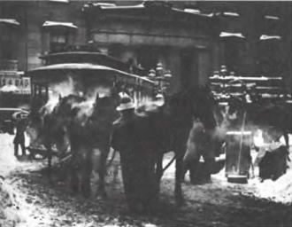
Альфред Стиглиц: Конечная остановка конок, Нью-Йорк, 1893
Я отдавал себе отчет, что речь здесь шла об упрощенных реакциях субъекта, которые, находя выражение во фразах типа я люблю / я не люблю, как бы останавливаются на полуслове; а у кого из нас нет своей внутренней шкалы пристрастий, неприязней и того, что оставляет безразличным? Но у меня всегда было стремление аргументировать свои настроения; аргументировать не с целью их оправдания, еще меньше для того, чтобы заполнить своей индивидуальностью сцену текста, но, напротив, чтобы растянуть эту индивидуальность до науки о субъекте, название которой не имеет значения при условии, что она (пока не произошло ничего похожего) достигнет уровня всеобщности, не редуцирующего, не превращающего в ничто меня самого. Так что нужно было браться за дело.
7
Тогда я решил взять за путеводную нить моего нового анализа притягательность, которой обладали для меня некоторые фотографии. Ибо по крайней мере эта притягательность сомнений не вызывала. Какое имя ей дать? Ослепление? Нет, конкретное фото, которое я выделяю и люблю, не имеет ничего общего с блестящей точкой, раскачивающейся перед глазами и вызывающей головокружение; производимое им во мне состояние противоположно оцепенению, это скорее внутренняя возбужденность, праздник, но и труд, давление невыразимого, которое хочет себя высказать. Тогда что же это? Интерес? Во всяком случае, интерес мимолетный; я не имею нужды допрашивать свою взволнованность, чтобы перечислить причины, побуждающие меня интересоваться фотографией: можно либо желать предмет, пейзаж, тело, которые на ней представлены, либо в настоящем или прошлом любить сфотографированное существо, либо удивляться тому, что видишь, либо восхищаться или обсуждать результаты работы фотографа и т. д. и т. п. Но все эти интересы не выражены и разнородны: конкретное фото может удовлетворять какой-то из этих интересов и при всем том мало меня занимать, а если другое фото очень меня интересует, мне хотелось бы знать, что в нем составляет для меня tilt
3. Мне показалось, что словом, наиболее подходящим для того, чтобы (пусть предварительно) обозначить притягательность, какой обладают для меня некоторые фотографии, является слово «приключение». Одно фото во мне «приключается», другое — нет.
Принцип приключения дает Фотографии возможность существовать для меня. И наоборот, без приключения нет и фото. Процитирую Сартра: «Журнальные фотографии могут с успехом „мне ни о чем не говорить“, т. е. я рассматриваю их, не занимая никакой экзистенциальной позиции. В таком случае личности, фотографии которых я разглядываю, хотя и доступны благодаря фото, но вне экзистенциальной позиции, точно также, как Рыцарь и Смерть хотя и постигаются благодаря гравюре Дюрера, но мной не полагаются. Бывают случаи, когда фотография оставляет меня безразличным настолько, что я не удосуживаюсь даже „превратить ее в образ“. Снимок неопределенно конституируется в качестве объекта, а изображенные на нем персонажи конституируются в качестве персонажей, но исключительно по причине своего сходства с человеческими существами, вне какой-то особой интенциональности».
Вдруг в этой мрачной пустыне какая-то фотография задевает меня (m'arrive): она оживляет меня, я оживляю ее. Именно так мне следует назвать притягательность, которая дает ей существовать — одушевление. Само по себе фото ни в коей мере не одушевлено (в «живые» фотографии я не верю), просто оно одушевляет меня — в этом, собственно, и состоит всякое приключение.
8
В поиске Фотографии я кое-что позаимствовал у феноменологического проекта и языка феноменологии. Но это была нестрогая, развязная, даже циничная феноменология, настолько легко она соглашалась деформировать свои принципы или уклоняться от них по прихоти моего анализа. Прежде всего, я не избегал и не пытался избежать парадокса: с одной стороны, стремление найти название для сущности Фотографии и, следовательно, набросать проект эйдетической науки о ней, а с другой — неотвязное ощущение того, что Фотография представляет собой по сути своей, если так можно выразиться (противоречие в терминах), случайность, сингулярность, приключение. Мои фотографии всегда и составляли часть «чего-то такого — эдакого»: разве не эту слабость Фотографии называют банальностью? Во-вторых, моя феноменология соглашалась скомпрометировать себя с силой, с аффектом, который я не хотел редуцировать; будучи несводимым, он в силу этого являлся тем, к чему я хотел и должен был свести Фотографию. Но возможно ли удержать аффективную интенциональность, такое нацеливание на объект, которое было бы непосредственно пронизано желанием, отвращением, ностальгией, эйфорией? Я не припоминал, чтобы в классической феноменологии, в том виде, в каком я познакомился с ней в молодости (а с тех пор она не стала другой), что-то говорилось о желании или трауре. Правда, я самым ортодоксальным образом прозревал в фотографии целую сеть сущностей: например, материальные сущности (побуждающие к физическому, химическому, оптическому изучению Фото) и сущности региональные (восходящие к эстетике, Истории, социологии); но в тот момент, когда я приходил к сущности Фотографии как целого, я сворачивал с дороги: вместо того чтобы следовать по пути формальной онтологии (Логики), я останавливался, сохраняя при себе, как некое сокровище, мое желание и мою скорбь; в моем сознании предчувствуемая сущность Фотографии не могла отделиться от «патетического», из которого она на первый взгляд состоит. Я напоминал себе своего друга, который обратился к Фотографии лишь для того, чтобы снимать собственного сына. Я в качестве Spectator'a интересовался Фотографией из-за «чувства»; я хотел углубить его не как вопрос (или тему), но как рану: я вижу, я чувствую, следовательно, я замечаю, рассматриваю и мыслю.
9
Однажды я листал иллюстрированный журнал. Мое внимание привлекло одно фото. Вроде бы ничего особенного: банальное в фотографическом смысле восстание в Никарагуа, улица в руинах, которую патрулируют два солдата в касках; на втором плане проходят две монахини. И этот снимок мне понравился? Заинтересовал меня? Заинтриговал меня? Не совсем. Просто он существовал (для меня). Очень скоро я сообразил, что его существование (его «приключение») зависело от соприсутствия двух прерывных, гетерогенных элементов, принадлежащих к разным мирам (нет нужды доходить до контраста), — солдат и монахинь. Я предчувствовал, что намечается структурная закономерность, соответствующая моему собственному взгляду, и старался сразу же ее верифицировать, исследуя другие снимки того же репортера (голландца Коэна Вессинга): многие из его фотоснимков привлекли мое внимание, потому что они заключали в себе ту же двойственность, которую я только что «застолбил». На одном из них мать и дочь громкими рыданиями оплакивают арест отца («эмфатическая истина жеста в великих жизненных обстоятельствах», по выражению Бодлера), и все это происходит в сельской местности (откуда им стала известна эта новость? на кого рассчитаны эти причитания?). На другом снимке на разъезженной мостовой лежит под белой простыней труп ребенка, рядом с ним в горе стоят родственники и друзья; сцена — увы! — ничем не примечательная, но я отметил некоторые «помехи» (disturbances): одна нога трупа необута, плачущая мать несет простыню (зачем она нужна?), в отдалении женщина — несомненно соседка — стоит, поднеся к носу платок. На еще одной фотографии огромные глаза двух маленьких мальчиков в разбомбленной квартире, у одного рубашка задрана на животике — сцену делает тревожной избыток детских глаз.
«Вскоре я сообразил, что „приключение“ этого снимка зависело от соприсутствия двух элементов…»
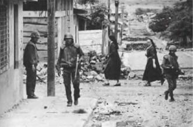
Коэн Вессинг. Никарагуа, армия патрулирует улицы. 1979
На другом фото, прислонившись к стене дома, стоят три сандиниста; нижняя часть их лиц прикрыта тряпками (невыносимый запах? мера предосторожности? Тут я бессилен; мне ничего не известно о том, в каких условиях ведется партизанская война); один из сандинистов держит винтовку, она покоится у него в ногах (я рассматриваю его ногти), но другая его рука вытягивается, как если бы он что-то объяснял или показывал. Введенное мной правило заработало — другие фото из того же репортажа привлекли к себе меньшее внимание; они были красивы, они свидетельствовали о величии и ужасе восстания, но на мой взгляд не содержали никаких меток; их гомогенность оставалась культурной: если бы не суровость сюжета, их можно было бы принять за «сцены», выполненные в стиле Греза.
«Плачущая мать несет простыню (зачем она здесь нужна?)…»
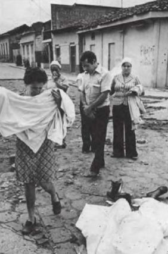
Коэн Вессинг: Никарагуа, родители, обнаружившие труп своего ребенка, 1979
10
Введенное мной правило было достаточно достоверным для того, чтобы я попытался назвать две его составные части, на совместном присутствии которых основывался по всей видимости тот особый интерес, который я питал к этим снимкам. Первой частью очевидно является охват, протяженность поля, воспринимаемого мной вполне привычно в русле моего знания и культуры; это поле может быть более или менее стилизованным, более или менее состоявшимся в зависимости от умения и удачи фотографа, но оно во всех случаях отсылает к блоку классической информации: восстание, Никарагуа со всеми знаками того и другого (несчастные бойцы в гражданской одежде, улицы в руинах, трупы, страдания и глаза индейцев с тяжелыми веками). Тысячи фотографий сделаны в этом поле; в отношении их я могу, конечно, испытывать что-то вроде общего интереса; иногда они волнуют, но порожденная этим эмоция проходит через рациональное реле нравственной и политической культуры. Такие фото вызывают у меня обычный аффект, связанный с особого рода дрессировкой. Я не нахожу во французском языке слова, которое просто выражало бы этот вид человеческого интереса, но мне кажется, что нужное слово существует на латыни; это слово studium, которое значит прежде всего не «обучение», а прилежание в чем-то, вкус к чему-то, что-то вроде общего усердия, немного суетливого, но лишенного особой остроты. Именно благодаря studium'y я интересуюсь многими фотоснимками — потому ли, что воспринимаю их как политические свидетельства, потому ли, что дегустирую их как добротные исторические полотна; в этих фигурах, выражениях лица, жестах, декорациях и действиях я участвую как человек культуры (эта коннотация содержится в слове studium).
Вторая часть разбивает studium (или его прерывает). На этот раз не я отправляюсь на ее поиски (подобно тому, как поле studium'a покрывалось моим суверенным сознанием) — это она как стрела вылетает со сцены и пронзает меня. Существует слово для обозначения этой раны, укола, отметины, оставляемой острым инструментом; это слово тем более мне подходит, что отсылает к идее пунктуации и что фото, о которых идет речь, как бы отмечены, иногда даже кишат этими чувствительными точками; ими являются именно отметины и раны. Этот второй элемент, который расстраивает studium, я обозначил бы словом punctum, ибо оно значит в числе прочего: укус, дырочка, пятнышко, небольшой разрез, а также бросок игральных костей
4. Punctum в фотографии — это тот случай, который на меня нацеливается (но вместе с тем делает мне больно, ударяет меня).
Выделив таким образом в фотографии две темы (в основном полюбившиеся мне фото были построены на манер классической сонаты), я мог попеременно заниматься то одной из них, то другой.
11
Увы! многие фото при моем взгляде на них не подают признаков жизни. Но даже среди тех, которые в моих глазах обладают некоторым существованием, большинство вызывают во мне не более чем общий, так сказать вежливый, интерес; какой-либо punctum в них отсутствует: они нравятся или не нравятся мне без того, чтобы меня уколоть; studium полностью блокирует их, studium представляет собой весьма обширное поле апатичного желания, разнообразных интересов, непоследовательного вкуса: я люблю / я не люблю, I like / I don't. Studium относится к порядку to like, не to love, он мобилизует полу-желание, полу-воление; это тот же невыраженный, отполированный и безответственный интерес, что возникает в отношении людей, зрелищ, одежды, книг, которые считаются «на уровне».
Выискивать studium значит фатально сталкиваться с интересами фотографа, входить с ними в созвучие, одобрять или не одобрять их, но всегда их понимать, обсуждать наедине с собой, ибо культура (к которой восходит studium) это контракт между творцами и потребителями. Studuim представляет собой некое образование (знание плюс владение манерами), позволяющее воссоединиться с Operator'ом, испытать намерения, которые обосновывают и одушевляют его практики, но испытать их как бы наоборот, в соответствии с моим волением как Spectator'a. Это как если бы я должен был вычитывать в Фотографии мифы фотографа и солидаризоваться с ними, на самом деле в них не веря. Эти мифы (а на что еще они нужны?) нацелены на то, чтобы примирить Фотографию и общество (да есть ли в этом необходимость? — Еще бы, Фотография — вещь опасная), наделяя ее функциями, представляющими собой алиби Фотографа. Функции эти таковы: информировать, представлять, застигать врасплох, означивать, вызывать желание. Я же, Spectator, с большим или меньшим удовольствием эти функции признаю, обогащаю ими свой studium, который никогда не является моим наслаждением или моим страданием.
12
Поскольку Фотография — область чистой случайности и ничем иным быть не может (ведь изображено всегда нечто), — в противоположность тексту, который под неожиданным воздействием одного-единственного слова может перевести фразу с уровня описания на уровень рефлексии, — она незамедлительно выдает «детали», составляющие первичный материал этнологического знания. Делая фотографии празднования Первого мая в Москве, Уильям Кляйн сообщает мне, как одеваются русские люди (ведь об этом я ничего не знаю): я подмечаю большую кепку на голове одного юноши, галстук на другом, платок на голове старухи, стрижку подростка и т. д. и т. п.
«Эта фотография учит меня тому, как одеваются русские люди: я подмечаю большую кепку на голове одного юноши, галстук на другом, платок на голове старухи, стрижку подростка…»
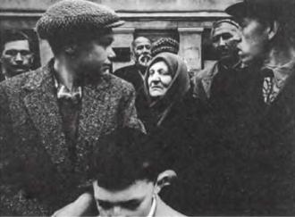
Уильям Кляйн: Первое Мая в Москве, 1959
Я могу еще больше углубиться в детали и заметить, что многие из моделей Надара имели длинные ногти; вопрос этнографический: какие ногти носили в ту или иную эпоху? Об этом Фотография может сказать мне куда лучше портретной живописи. Она позволяет дойти до мельчайших деталей; она поставляет мне коллекцию частичных объектов и может льстить заключенному во мне фетишизму; ибо имеется некое «я», любящее знание, испытывающее по отношению к нему что-то вроде влечения. Точно так же я люблю некоторые биографические особенности в жизни писателя, они восхищают меня наравне с фотографиями; я назвал эти особенности «биографемами»; с Фотографией История поддерживает отношения того же рода, что биографемы с биографией.
13
Первый человек, увидевший первую фотографию, — если не считать Ньепса, который первый снимок сделал, — должно быть счел, что это — произведение живописи. Фотографию навязчиво преследовал и продолжает преследовать фантом Живописи (Мэйплторп изображает ветку ириса, как это мог бы сделать восточный художник); копируя и оспаривая живопись, фото превратило ее в абсолютную, отеческую Инстанцию (Référence), как если бы у ее истоков стояла Картина (в плане техническом это верно лишь отчасти, поскольку камера-обскура, которой пользовались живописцы, явилась всего лишь одним из истоков Фотографии, а решающую роль здесь сыграло, вероятно, открытие в области химии). На этой стадии моего исследования ничто в эйдетическом плане не отличает фотографию, какой бы реалистической она ни была, от живописи. Так называемая «живописность» есть всего лишь утрированная форма того, чем Фото себя считает.
Мне, однако, представляется, что Фотография соприкасается с искусством не посредством Живописи, а посредством Театра. У истоков Фото обычно помещают Ньепса и Дагерра (даже если последний в какой-то мере узурпировал место первого); так вот Дагерр, в период, когда он завладел изобретением Ньепса, руководил театром-панорамой на площади Шато (в районе нынешней площади Республики), в котором использовались многочисленные световые эффекты. Камера-обскура лежала в основе изобретения трех сценических искусств: перспективной живописи, Фотографии и Диорамы; Фотография представляется мне стоящей ближе всего к Театру благодаря уникальному передаточному механизму (возможно, кроме меня его никто не видит) — Смерти. Известно изначальное отношение театра к культу мертвых: первые актеры выделились из общины потому, что разыгрывали роли покойников; гримироваться значило маркировать свое тело одновременно как живое и как мертвое; по пояс выбеленные тела в тотемном театре, раскрашенное лицо актера китайского театра, грим на основе рисовой пасты в индийском Ката Кали, маска в японском театре Но. То же самое отношение я обнаруживаю в Фотографии. Это искусство, сколь бы ни исхитрялись сделать его живым (яростное желание «сделать живым» есть не что иное, как мифическое отрицание страха перед смертью), сродни первобытному театру, Живой Картине, изображению неподвижного, загримированного лица, за которым угадывается мертвец.
14
Я воображаю (а что еще мне остается делать, самому не будучи фотографом), что сущностное деяние Operator'a — застать что-то или кого-то (через маленькое отверстие в своей камере) врасплох, что это деяние достигает совершенства, когда совершается незаметно для фотографируемого субъекта. Из него непосредственно вытекают все фотографии, которые строятся на принципе (или, лучше сказать: на алиби) «шока»; фотографический «шок», ничего общего не имеющий с punctum'ом, заключается не столько в том, чтобы нанести травму, сколько в раскрытии того, что было скрыто столь надежно, что само действующее лицо его игнорировало или хранило в бессознательном. Отсюда следует весь набор «сюрпризов» (таковыми они представляются мне, Spectator'y, а самому Фотографу они видятся «достижениями»).
Первая форма «сюрприза» — редкость (само собой разумеется, редкость референта); у некоего фотографа, с восторгом сообщают нам, четыре года работы ушло на то, чтобы составить фотоантологию уродов (мужчина с двумя головами, женщина с тремя грудями, ребенок с хвостом и т. д. и т. п. — и у всех на устах улыбка). Другой «сюрприз» был хорошо известен уже Живописи, которая часто воспроизводила жест в такой точке его совершения, в какой обычный глаз не может его остановить (в другом тексте я назвал этот жест питеп'ом исторической картины): Бонапарт в Яффе только что дотронулся до больных чумой, он отстраняет руку; пользуясь мгновенностью своего действия, Фото равным образом заставляет быстро разворачивающуюся сцену застыть в ее решающей фазе: так, во время пожара репортер Апестегуи снял женщину в момент, когда она выпрыгивала из окна. Третья форма «сюрприза» связана со смелым трюком (prouesse): «Вот уже полвека Гарольд Д. Эджертон фотографирует падение молочной капли в одну миллионную долю секунды» (не стоит и говорить, что фото в этом жанре меня не трогают и даже не интересуют; я слишком феноменолог, чтобы любить что-то кроме постижимой для меня видимости). Четвертого «сюрприза» фотограф добивается с помощью технических ухищрений: многократного экспонирования, оптических искажений, намеренного использования некоторых дефектов (раскадрирование, размытость контуров, «смазанная» перспектива); неожиданными эффектами этого рода пользовались такие великие фотографы, как Жермена Круль, Кёртеш, Уильям Кляйн, но даже если я постигал их подрывную силу, они меня не убеждали. Пятый вид «сюрприза»: случайная находка. Кёртеш фотографирует окно мансарды, из-за стекла на улицу выглядывают два античных бюста (я люблю Кёртеша, но не выношу юмора в музыке и в фотографии); сцена может быть «срежиссирована» самим фотографом, но в мире иллюстрированных журналов она «естественна», ее заснятие на пленку потребовало от добросовестного репортера гениального озарения, т. е. случая; пример: эмир в полном облачении катается на лыжах. Все такого рода «сюрпризы» подчиняются принципу вызова (именно в силу этого они мне так чужды): фотограф, подобно акробату, должен пренебречь законами вероятного и даже просто возможного, в предельном случае он должен противостоять интересному. Фотография становится «изумительной» с того момента, когда перестают понимать, с какой, собственно, целью она была сделана; что за интерес снимать против света нагого человека в дверном проеме, капот старого автомобиля в траве, грузовое судно на набережной, две скамейки в открытом поле, ягодицы женщины, стоящей перед окном деревенского дома, яйцо на голом животе (все эти снимки были премированы на конкурсе любительской фотографии)? В своей начальной фазе Фотография, для того чтобы поражать, должна запечатлять нечто значительное, но вскоре — в результате известной процедуры инверсии — она начинает объявлять значительным то, что запечатлевает. Тогда вершиной ценностной изощренности становится «все что угодно».
15
Поскольку любое фото случайно (и поэтому находится за пределами смысла), Фотография не может означивать (нацеливаться на всеобщность) иначе как надевая маску. Именно это выражение справедливо употребляет Кальвино для означивания того, что превращает лицо в продукт общества и его истории. Это применимо к портрету Уильяма Кэсби в исполнении Аведона: в нем обнажена сущность рабства; маска это и есть смысл в его наиболее чистом виде (как это имело место в античном театре). В силу этого великие мастера фотопортрета были и великими мифологами: Над ар — мифологом французской буржуазии, Зандер — немцев до прихода нацистов к власти в Германии, Аве-дон — нью-йоркского high-class.
«Маска это и есть смысл в абсолютно чистом виде…»
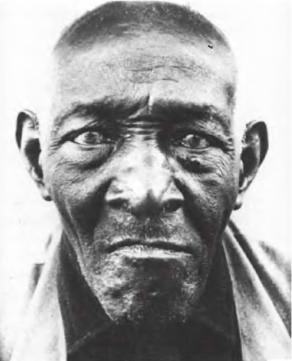
Ричард Аведон: Уильям Кэсби, родившийся рабом, 1963
Но вместе с тем маска — трудная область в фотографии. Создается впечатление, что общество с недоверием относится к чистому смыслу: оно хочет смысла, но хочет и того, чтобы он был (пользуясь языком кибернетики) окружен помехами, делающими его менее отчетливым. Поэтому фото, чей смысл (я не имею в виду чье-то воздействие) слишком выразителен, быстро подвергаются искажению: их потребляют эстетически, а не политически.
«Нацисты наложили цензурный запрет на фотографии Зандера, потому что его „лица времени“ не соответствовали их расовой эстетике».
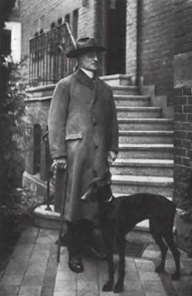
Август Зандер: Нотариус
Фотография Маски достаточно критична, чтобы вызывать беспокойство (в 1934 году нацисты наложили цензурный запрет на фотографии Августа Зандера по той причине, что его «лица времени» не соответствовали их представлениям о расовом архетипе), но, с другой стороны, эта фотография слишком сдержанна (или слишком «утонченна»), чтобы основать подлинно эффективную, по крайней мере с точки зрения требований активистов, социальную критику; да и какая ангажированная наука способна признать интерес за физиогномикой? Разве сама по себе способность распознавать политический и нравственный смысл лица не является внеклассовой? Но даже и это преувеличение: Нотариус у Зандера проникнут чопорностью и самодовольством, его Судебный Исполнитель — самоутверждением и грубостью, но реальные нотариус и судебный исполнитель никогда не смогли бы прочитать эти знаки. Подобно дистанции, социальное наблюдение в данном случае с необходимостью проходит через реле утонченной эстетики, делающей его неэффективным; критическое отношение имеется лишь у тех, кто уже способен на критику. В этот тупик отчасти уперся Брехт: он неодобрительно относился к фотографии по причине ее слишком низкого, по его выражению, критического потенциала, но его собственный театр так никогда и не сумел стать политически эффективным из-за утонченности и высокого качества его эстетики.
Если не принимать в расчет сферу Рекламы, где смысл должен быть ясным и отчетливым из меркантильных соображений, семиология Фотографии ограничивается выдающимися достижениями нескольких портретистов. В том же, что касается огромного числа «хороших» фотографий, самое большее, что о них можно сказать, это то, что в них говорит предмет, возбуждая вялые позывы к мысли. Добавим: даже это рискует показаться опасным. В предельном смысле не нужно никакого смысла вообще — так оно лучше. После переезда Кёртеша в США в 1937 году редакторы журнала «Life» отказывались публиковать его фотографии под тем предлогом, что те, как они выражались, «слишком выразительны»; они заставляли задумываться, подсказывали смысл, отличный от буквального. В основе своей Фотография бывает подрывной не тогда, когда пугает, потрясает и даже бичует, но когда она пребывает в задумчивости.
16
Старый дом, затененное крыльцо, черепица, облупившийся арабский орнамент; прислонившись к стене, сидит человек, пустынная улица, средиземноморское дерево (фото Чарльза Клиффорда «Альгамбра»): это старая, сделанная в 1854 году фотография затрагивает меня по той простой причине, что именно здесь я хочу жить. Это желание погружено во мне на большую глубину и имеет корни, неизвестные мне самому. Теплый климат? Средиземноморский, аполлонический миф? Заброшенность? Анонимность? Благородство? Что бы это ни было (во мне самом, в моих мотивировках, в моих фантазмах), я испытываю желание жить здесь с изяществом, а его, это чувство изящного, никогда не смогли бы удовлетворить туристические снимки.
«Здесь я хотел бы жить…»
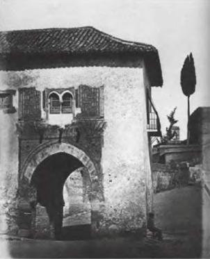
Чарльз Клиффорд: Альгамбра, Гренада), 1854-1856
Фотографии пейзажей (урбанистических и сельских), на мой взгляд, должны быть обитаемыми, а не посещаемыми. Это желание проживания, которое я в себе ясно ощущаю, не является ни сновидческим (мне не грезится что-то экстравагантное), ни эмпирическим (у меня нет стремления купить себе дом по иллюстрированному проспекту агентства по продаже недвижимости); оно фантазматично и восходит к своего рода ясновидению, которое устремляет меня вперед, в направлении утопического времени, или же увлекает меня назад, сам не знаю куда: двойное движение, которое Бодлер воспел в «Приглашении к путешествию» и в «Предшествующей жизни». На фоне излюбленных пейзажей все происходит так, как если бы я был уверен, что я там уже был или должен был там оказаться. Фрейд как-то написал о материнском теле: «нет другого места, о котором можно с такой уверенностью сказать, что мы там уже были и т. д.» Такова же и сущность подобной местности (избранной желанием): heimlich, пробуждающее во мне Мать (которая не причиняет никакого беспокойства).
17
Итак, обозрев тот благоразумный интерес, какой вызывали во мне некоторые фотографии, я пришел к выводу, что studium, поскольку его не рассекает, не исполосовывает, зигзагообразно не прорезает некая деталь (punctum), влекущая и ранящая меня, производит на свет очень распространенный (собственно говоря, наиболее распространенный) вид фото, который можно назвать унарной фотографией. В порождающей грамматике унарным называется преобразование, из основания которого следует одна-единственная серия (таковы следующие преобразования: пассивное, негативное, вопросительное и эмфатическое). Фотография унарна, поскольку она эмфатически трансформирует «реальность» без того, чтобы ее дублировать, приводить в движение (эмфатия и есть сила связности): она не признает никакого двойственного числа, никаких помех, ничего непрямого. Унарная фотография обладает всеми качествами банальности; ведь основным правилом вульгарной (т. е. школьной) риторики является «единство» композиции: «Сюжет, — гласит один из советов фотографу-любителю, — должен быть простым, свободным от бесполезных аксессуаров. Общее название для всего этого — поиск единства».
Репортажные снимки очень часто являются унарными (унарная фотография вовсе не обязательно миролюбива). В такого рода изображениях отсутствует punctum; они могут шокировать (буквальное способно нанести травму), но они не могут причинять беспокойство; подобные фото в силах «орать», но не ранить. Репортажные фотографии воспринимаются с первого взгляда на них — и кончено. Я пролистываю их, не сохраняя в памяти; ни одна деталь в них (скрытая в каком-нибудь укромном закоулке) не прерывает процесса чтения; снимки этого рода меня интересуют (как и многое другое в мире), но я их не люблю.
Другим видом унарной фотографии являются порнографические снимки (я намеренно не говорю: эротические; эротика — это порнография децептрированная, расщепленная). Нет ничего более гомогенного, чем порно в фотографии. Эти снимки всегда наивны, в них нет интенции и расчета. Подобно ярко освещенной витрине, на которой было бы выставлено единственное ювелирное украшение, порно полностью конституируется только одной вещью — сексом; ни единого вторичного, неуместного предмета, который бы полускрывал, откладывал или отвлекал от главного. Доказательство от противного: Мэйплторп переводит половые органы, снятые крупным планом, из разряда порнографии в разряд эротики, фотографируя с очень близкого расстояния фактуру плавок; снимки перестают быть унарными, потому что меня заинтересовывает текстура ткани.
18
Иногда (увы! очень редко) в этом унарном пространстве меня привлекает какая-то «деталь». Я чувствую, что само ее присутствие меняет режим моего чтения, что я смотрю как бы на новое фото, наделенное в моих глазах высшей ценностью. Подобная «деталь» и есть punctum (то, что наносит мне укол).
Нельзя постулировать никакого правила соответствия между studium'ом и punctum'ом (когда этот последний на фото есть). Дело здесь в соприсутствии — вот единственное, что можно сказать. Монахини «просто случайно проходили» и оказались на заднем плане, когда Вессинг снимал солдат никарагуанской армии. С точки зрения реальности (которую, вероятно, разделяет Operator) присутствие «детали» находит объяснение во множестве причин: католическая церковь сильна во многих странах Латинской Америки; монахини бывают сестрами милосердия; им разрешено передвигаться и т. д. и т. п. Однако с моей точки зрения, с позиции Spectator'a, деталь послана случаем безо всяких причин; открывающаяся картина ни в коей мере не «составлена» по правилам творческой логики. Фото несомненно двойственно, но эта двойственность не является движущей силой некоего «развития», как это происходит в классическом дискурсе. Никакой анализ не пригодился бы мне для того, чтобы воспринять punctum (иногда, как мы увидим ниже, полезным может оказаться воспоминание); для этого нужно только, чтобы изображение было достаточно большим (иначе мне пришлось бы его внимательно разглядывать, от чего не было бы никакого толку) и чтобы с просторной страницы оно сошло мне прямо в глаза.
19
Очень часто punctum представляет собой «деталь», т. е. частичный объект. Поэтому привести примеры punctum'a означает некоторым образом открыть свою душу.
Передо мной семья чернокожих американцев, сфотографированная в 1926 году Джеймсом Ван дер Зее. Studium здесь понятен: в качестве примерного субъекта культуры я сочувственно интересуюсь тем, что сообщает это фото; сообщение его (ибо это «хорошее» фото) — респектабельность, семейственность, конформизм, парадность в одежде, устремление к продвижению по социальной лестнице с целью «украсить себя» атрибутами Белого Человека (старание, трогательное по своей наивности).
«Туфли с завязками»
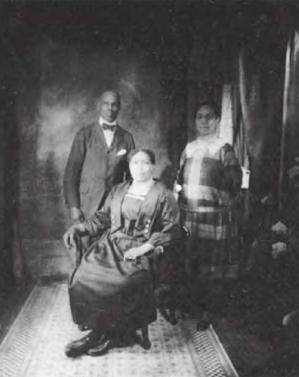
Джеймс Ван дер Зее: Семейный портрет. 1926
Открывшееся зрелище меня заинтересовывает, но не «укалывает». А по-настоящему, странное дело, задевает меня широкий пояс сестры (или дочери), ее сложенные за спиной, как у школьницы, руки, но больше всего — зашнуровывающиеся ботинки (почему меня так трогает давно вышедшая из моды вещь? Я хочу сказать: к какому времени она меня отсылает?). В данном случае punctum вызывает у меня сильную симпатию, чуть ли не умиление. Впрочем punctum не оказывает морали и хорошему вкусу никакого особого предпочтения; он может быть и дурно воспитан. Уильям Кляйн в 1954 году сфотографировал мальчишек из итальянского квартала в Нью-Йорке; фото трогательное, забавное, но я с настойчивостью вглядываюсь в гнилые зубы маленького мальчика. В 1926 году Кёртеш сделал портрет молодого Тристана Тцара с моноклем, но то, что (благодаря дополнению к зрению, каковым является дар, благодать punctum'a) замечаю в нем я — это рука поэта на дверном проеме, большая рука с плохо вычищенными ногтями.
«Я настойчиво вглядываюсь в гнилые зубы маленького мальчика…»
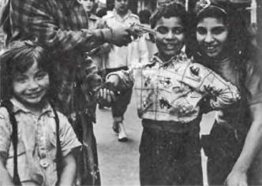
Уильям Кляйн: Нью-Йорк. 1954, Итальянский квартал
Punctum, каким бы молниеносным он ни был, обладает более или менее виртуальной силой экспансии. Она нередко имеет метонимический характер. У Кёртеша есть фотография 1921 года, где представлен слепой скрипач-цыган, которого ведет за руку мальчик; я же «умственным взором», заставляющим что-то добавить к этому снимку, вижу глинобитную дорогу; фактура этой дороги вселяет в меня уверенность, что она проходит по Центральной Европе: моему восприятию доступен референт (в данном случае фото воистину превосходит само себя, а разве это не есть единственное доказательство его существования как искусства? Разве оно не хочет упразднить себя как medium'a, стать не знаком, а самой вещью?), всем своим телом я опознаю местечки, мимо которых проходил во время прежних путешествий по Венгрии и Румынии.
Punctum подвержен также экспансии другого, менее прустовского, рода: оставаясь «деталью», он парадоксальным образом заполняет собой всю фотографию. Дуайн Мичелс (Duane Michals) сфотографировала Энди Уорхола: портрет вышел вызывающим, потому что Уорхол обеими руками закрывает лицо. У меня нет никакого желания комментировать эту интеллектуальную игру в прятки (она относится к области studium'a), ибо от меня Уорхол не скрывает ничего: я получаю возможность непосредственно «читать» его руки, a punctum'ом является не его жест, а немного отталкивающая фактура его ногтей «лопаткой», мягких и одновременно закругленных (cerné).
«Всем своим телом я опознаю местечки, мимо которых проходил во время прежних путешествий по Венгрии и Румынии…»
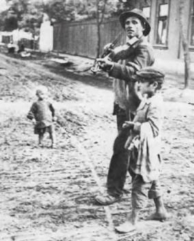
Андре Кёртеш: Баллада скрипача, Абони, Венгрия, 1921
20
Некоторые детали могли бы меня «уколоть». Если этого не происходит, то в силу того, что фотограф поместил их туда намеренно. На снимке Уильяма Кляйна «Шинохиера, борец-художник» (1961) огромных размеров голова модели не говорит мне ничего, так как я понимаю, что это ухищрение связано с необычным ракурсом. Солдаты на фоне монахинь послужили примером (в данном случае примером элементарным), на котором я пояснил, чем для меня является punctum; но когда Брюс Гилден фотографирует монахиню рядом с трансвеститом (Новый Орлеан, 1973)> намеренный, чтобы не сказать натянутый, контраст не производит на меня никакого впечатления, за исключением разве что раздражения. Так что интересующая меня деталь не является — по меньшей мере не обязательно является — интенциональной; вероятно, и не следует, чтобы она таковой была; она пребывает в поле сфотографированной вещи как неизбежное и вместе с тем бесплатное дополнение; она не обязательно свидетельствует о профессионализме фотографа, а лишь о том, что он либо оказался в нужном месте, либо, что еще более банально, просто не мог не сфотографировать частичный объект вместе с тотальным (каким образом, например, Кёртеш смог бы «отделить» дорогу от идущего по ней скрипача?). Ясновидение фотографа состоит не в том, чтобы «видеть», а в том, чтобы оказаться в нужном месте. И прежде всего, конечно, надо, чтобы, подобно Орфею, он не оборачивался на то, что за ним следует и что он мне дает!
21
Одна деталь предопределяет все мое прочтение: резкое, молниеносное смещение фокуса внимания. Будучи чем-то отмечено, фото перестает быть каким угодно. Это нечто совершило нападение с копьем наперевес, tilt, вызвав во мне малое потрясение, сатори, прохождение пустоты (каким бы смехотворным ни представлялся его референт). Получается странная вещь: добродетель, контролирующая восприятие «благонамеренных», пронизанных studuim'ом, фотографий, одновременно является ленностью, ее жесты — перелистывать, быстро и пассивно рассматривать, задерживаться взглядом и спешить дальше; напротив, прочтение punctum'a, «заостренных», если так можно выразиться, фотографий, является непродолжительным и активным, свернувшимся в клубок как хищник перед прыжком. Словарь фотографии коварен; в нем фигурирует выражение «проявлять фото», — но то, что проявляется при помощи химического воздействия, есть непроявляемое, сущность раны, подверженная не преобразованию, а всего лишь повторению с маниакальной настойчивостью (проявляющейся в форме разглядывания). Это сближает Фотографию (некоторые фотографии) с хокку; поскольку запись хокку также непроявляема; все в нем дано сразу; без желания и даже возможности риторической экспансии. В обоих случаях можно и нужно говорить об интенсивной неподвижности: связанный с деталью как с детонатором, взрыв порождает звездообразную отметину на стеклянной поверхности хокку или фотоснимка; ни то, ни другое не вызывают желания «помечтать».
В проведенном Омбреданом эксперименте чернокожие видят на экране, в самом углу только крошечную курицу, которая пересекает центральную площадь деревни. Подобно им, и я не вижу на снимке двух умственно отсталых детей из психиатрического заведения в штате Нью-Джерси (сфотографированных Льюисом Хайном в 1924 году) ни их непропорционально огромных голов, ни их жалких профилей (все это восходит к studuim'y); подобно чернокожим Омбредана, я вижу лишь децентрированные детали — воротничок а 1а Дантон у мальчика и забинтованный палец девочки. Я чувствую себя дикарем, ребенком, маньяком, я отказываюсь от любого знания, любой культуры, я воздерживаюсь оттого, чтобы получить в наследство всякий иной взгляд.
«Я воздерживаюсь от любого знания, от любой культуры… я вижу лишь огромный воротничек а la Дантон на мальчике и забинтованный палец девочки…»
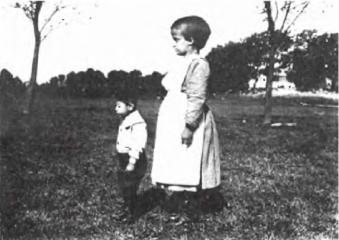
Льюис Г. Хайн: Слабоумные в заведении, Нью-Джерси, 1924
22
В конечном счете studium всегда закодирован, а punctum — никогда (постараюсь более не злоупотреблять этими словами). В свое время (в 1882 году) Надар сделал фото Саворньяна де Бразза в окружении двух молодых негров, одетых матросами; один из двух юнг неловко положил свою руку на бедро Браззы, этот нелепый жест, казалось бы, обладает всем необходимым, чтобы остановить на себе мой взгляд и составить punctum. Тем не менее этого не происходит, ибо вольно или невольно я тут же кодирую эту позу как «вычурную» (punctum'ом для меня являются скрещенные руки другого юнги).
То, что я могу назвать, не в силах по-настоящему меня уколоть. Неспособность что-то назвать является верным признаком смятения. Мэйплторп сфотографировал Боба Уилсона и Фила Гласса. Боб Уилсон задерживает на себе мое внимание, но я не могу выразить почему, точнее, в каком именно месте: что это, взгляд, кожа, положение рук, баскетбольные туфли? Воздействие очевидно, но его не удается «засечь», оно не находит своего знака и имени, оно причиняет боль (il est coupant), находя тем не менее пристанище в какой-то неопределенной зоне моей личности. Воздействие является острым и приглушенным, оно вопиет в молчании. Противоречие в терминах: медлящая молния.
Нет поэтому ничего удивительного в том, что в отдельных случаях, несмотря на всю свою определенность, punctum обнаруживается лишь post factum, когда фото находится от меня далеко и я снова о нем думаю.
«Punctum составляют для меня скрещенные руки второго юнги».
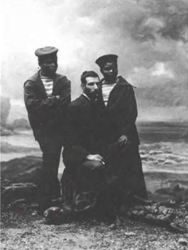
Надар: Саворньян де Бразза, 1882
Случается, что я лучше опознаю снимок, вспоминая о нем, нежели его рассматривая, как если бы непосредственное разглядывание давало языку ложную ориентацию, втягивая его в усилие описания, от которого всегда ускользает точка воздействия, punctum. По прочтении фотографии Ван дер Лее мне показалось, что я нашел то, что меня в ней волновало: это были зашнуровывающиеся ботинки одетой в праздничное платье негритянки. По это фото продолжало во мне свою работу, и позднее я понял, что подлинным punctum'ом было колье на шее этой женщины; ибо это несомненно было такое же колье (тонкая цепочка плетеного золота), какое постоянно носила одна из моих родственниц и которое после ее смерти перекочевало в семейный ларец для драгоценностей (эта сестра моего отца никогда не была замужем и жила со своей матерью, оставаясь старой девой; мне всегда причиняла боль мысль о том, какой печальной была, должно быть, ее жизнь в провинции). Меня осенило, что при всей свои непосредственности и способности наносить укол punctum мог быть вполне совместим с некоторым латентным периодом (но не с расследованием).
«Боб Уилсон задерживает на себе мое внимание, но я не могу выразить почему…»
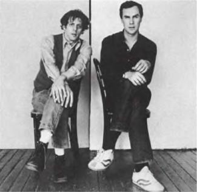
Роберт Мэйплторп: Фил Гласе и Боб Уилсон
В конечном счете, — таков предельный случай, — чтобы поближе рассмотреть фото, лучше всего отвести или закрыть глаза. «Основа картины — увиденное», — сказал Кафке Яноух. Кафка улыбнулся этому замечанию и ответил: «Предметы фотографируют, чтобы изгнать из сознания. Мои истории — своего рода попытка закрыть глаза». Фотография должна быть молчаливой («громогласные» фото существуют, но я их не люблю), и вопрос здесь не в «сдержанности», а в музыкальности. Абсолютная субъективность достигается только в состоянии, в усилии молчания (закрыть глаза значит дать образу возможность говорить в тишине). Фото задевает меня, если я изолирую его от обычной трепотни — «Техники», «Реальности», «Репортажа», «Искусства» и тому подобного. Ничего не говорить, закрыть глаза, дать детали в полном одиночестве дойти до аффективного пласта сознания.
23
И последнее о punctum'e: будучи или нет частью какого-либо контекста, он является приложением — это то, что добавляется к фотографии и тем не менее уже в ней есть. Не я добавляю от себя дегенеративные профили двум слабоумным детям на снимке Льюиса Хайна: до меня это делает код, он занимает мое место, не позволяя мне говорить; от себя — хотя, конечно, на изображении они уже есть — я вношу воротничок, повязку. А в случае кино добавляю ли я что-либо к образу? Не думаю. У меня просто нет для этого времени; не в моей власти, сидя перед экраном, закрыть глаза — в противном случае, вновь их открыв, я уже не застану того кадра. Кино побуждает к постоянной прожорливости; оно обладает множеством других добродетелей, задумчивость не из их числа; этим объясняется мой интерес к фотограммам
5.
Впрочем, кино на первый взгляд обладает перед Фото одним преимуществом: экран (по замечанию Базена) представляет собой не кадр, а тайник; выходящее из него лицо продолжает жить; «слепое поле» в кино бесконечно дублирует частичное зрение. А в тысячах фотографий, включая и такие, которые хороши с точки зрения studuim'a, я не чувствую ничего похожего на слепое поле: происходящее внутри каждого кадра безвозвратно умирает, как только я его пролистываю. Когда Фотографию определяют как неподвижное изображение, это означает не только то, что фигурирующие на ней персонажи не двигаются, но и то, что они не покидают ее пределов, как будто им сделали анестезию и прикололи туда, как бабочек. Но как только возникает punctum, создается (угадывается) и слепое поле: благодаря круглому колье одетая по-праздничному негритянка обрела для меня жизнь, внешнюю ее портрету; я испытываю желание познакомиться с Бобом Уилсоном, носителем неотгаданного punctum'a. На другом снимке (Джоржа У. Уилсона, 1863 год) королева Виктория изображена верхом на лошади, ее юбка торжественными складками расходится по крупу (это представляет чисто исторический интерес, восходит к studuim'y); но рядом с ней мое внимание привлекает служитель в шотландской юбке (kilt), держащий поводья; это и есть punctum, ибо будь мне даже неизвестен социальный статус этого шотландца (простой слуга? шталмейстер?), зачем он нужен здесь, очевидно: он должен следить за поведением животного. Что, если бы оно вдруг заковыляло? Что тогда стало бы с юбкой ее Величества королевы? Этот punctum отлично выявляет на фото (здесь самое место об этом сказать) викторианскую личность, создавая слепое поле этого снимка.
Именно динамическое присутствие слепого поля является, по моему мнению, тем, что отличает эротическое фото от порнографического. Как правило, порнография представляет секс, превращая его в неподвижный объект (фетиш), которому воскуряют фимиам как Богу, не покидающему своей ниши. На мой взгляд, в порнографических снимках punctum отсутствует; они в лучшем случае забавны, впрочем, скоро наскучивают. Эротическая же фотография, напротив (и это основное условие ее существования), не отводит сексу центральное место — она даже может вообще его не показывать; она увлекает зрителя за пределы кадра, и именно в силу этого эротическое фото одушевляет меня, и я его одушевляю. В таком случае punctum'ом является утонченное закадровое пространство, —
как если бы образ выбрасывал желание за пределы того, что он показывает: причем выбрасывал не только в направлении «остаточной» наготы и фантазмируемой эротической практики, но и в направлении абсолютной безупречности существа в душевном и телесном отношении. Этот юноша с вытянутой рукой и сияющей улыбкой — хотя красота его вовсе не является классической, и он наполовину «выпал» из фотографии, поместившись в ее верхнем левом углу, — воплощает собой жизнерадостный эротизм; это фото побуждает меня различать тяжелое, порнографическое желание и желание легкое, здоровое, присущее эротизму. Возможно здесь в конечном итоге замешан «счастливый случай»: фотограф зафиксировал руку юноши (им является, кажется, сам Мэйплторп) в момент идеальной откинутости в сторону, максимальной самоотдачи; несколько миллиметров в ту или другую сторону — и прозреваемое тело уже не предлагало бы себя с такой благожелательностью (порнографическое тело зажато, оно себя показывает, а не отдает, в нем нет щедрости): Фотограф уловил оптимальный момент, kaïros желания.
«Королева Виктория совершенно неэстетична…» (Вирджиния Вульф)
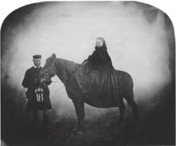
Д.У. Уилсон: Королева Виктория, 1863
«…рука в момент своей идеальной откинутости, полной самоотдачи…»
Роберт Мэйплторп: Молодой человек с вытянутой рукой
24
Переходя от одного фото к другому (по правде сказать, все они довольно известные), я, возможно, раскрыл движение моего желания, но не природу (эйдос) Фотографии. Мне оставалось признать, что полученное мной удовольствие было несовершенным посредником и что субъективность, сведенная к гедонизму, неспособна опознать всеобщее. Мне предстояло еще глубже опуститься в самого себя, чтобы обнаружить первоочевидность (l'évidence) Фотографии, вещь, которую видит всякий человек, рассматривающий снимок, и которая, на его взгляд, отличает его от любого другого изображения. Мне предстояло действовать совсем по-другому.
II
25
Ноябрьским вечером, вскоре после смерти моей матери, я разбирал фотографии. Разбирал без надежды «вновь обрести» ее, ничего от «этих фотографий существа, глядя на которые помнишь его меньше, чем удовлетворяясь простой мыслью о нем», не ожидая. Я твердо знал, что из-за рокового стечения обстоятельств, которое является одним из наиболее жестоких свойств траура, я никогда уже не смогу вспомнить ее черты (вызвать их во всей целостности). Нет, в мои намерения, следуя обету, который дал себе после смерти матери Валери, входило «написать о ней небольшой сборник для одного себя» (возможно, я однажды так и сделаю, чтобы память о ней, приняв печатную форму, длилась по меньшей мере столько же времени, сколько продлится моя известность). Кроме того, о фотографиях, что от нее остались, — за исключением одного-единственного снимка, который я уже опубликовал, на нем моя мама изображена в молодости идущей по пляжу в Ландах: я узнал ее походку, здоровье, которое она излучала, но не ее лицо (ее сняли со слишком большого расстояния), — я даже не мог сказать, что любил их; я не намеревался внимательно их рассматривать, «погружаться» в них. Я перебирал эти снимки, и ни один из них не показался мне по-настоящему «хорошим» — ни с точки зрения профессионализма фотографа, ни в качестве средства воскрешения любимого лица. Если бы однажды мне пришло в голову показать эти фото друзьям, сомнительно, что они произвели бы на них впечатление (qu'elles leur parlent).
26
От многих из этих снимков меня отделяла История. Разве История не является просто-напросто временем, когда мы не родились? Мое несуществование прочитывалось в одежде, которую мама носила до того, как я был в состоянии ее вспомнить. При виде близкого существа, одетого по-другому, охватывает подобие оцепенения. Вот на фото, сделанном примерно в 1913 году, на маме выходное платье, шляпка с перьями, перчатки, тонкое белье выглядывает из-под рукава и около шеи — но кротость и простота ее взгляда служат как бы противовесом всему этому «шику». Это единственный раз, когда я увидел ее в ракурсе Истории (истории вкусов, мод, тканей): мое внимание переместилось с нее на аксессуары, которые ушли в небытие; ибо платье бренно, оно сделано для того, чтобы служить еще одной могилой любимому существу. Чтобы хоть на миг «вновь обрести» свою мать, — и увы! — удержать ее в этом виде надолго не удавалось никогда, — надо было значительно позднее обнаружить на некоторых фото предметы, которые стояли у нее на комоде: пудреницу из слоновой кости (я любил звук, с которым она открывалась), флакон граненого хрусталя, низкий стул, который теперь стоит у моей кровати, а также панно из рафии, которые она ставила над диваном, и вместительные сумки, которые она любила (сумки, чьи удобные формы опровергали буржуазный идеал «дамской сумочки»).
Таким образом, жизнь того, чье существование хоть ненадолго предшествовало нашему собственному, скрывает в своей особенности присущее Истории напряжение, ее водораздел. История истерична; она конституируется при условии, что на нее смотрят — а чтобы на нее посмотреть, надо быть из нее исключенным. Как живая душа я являюсь воплощенной противоположностью Истории, тем, кто ее опровергает и разрушает в пользу только моей истории (я не в силах поверить в «свидетелей», по меньшей мере я не могу быть одним из них; Мишле оказался неспособен практически ничего написать о своем собственном времени). Историей для меня является время, когда мама жила до меня (кроме того именно эта эпоха больше всего интересует меня в историческом плане). Никогда никакой анамнез не даст мне возможность приоткрыть завесу того времени (таково определение анамнеза) самому, в то время как глядя на фото, где она прижимает меня, маленького ребенка, к своей груди, я могу пробудить в себе воспоминание о мягкости измятого крепдешина и приятном запахе рисовой пудры.
27
Здесь-то и стал возникать существенный вопрос: узнавал ли я ее?
Иногда по воле этих фотографий я узнавал какую-то часть ее лица, соотношение носа и лба, движение ее рук и кистей. Всегда я узнавал ее по частям, другими словами, от меня ускользало ее бытие, следовательно, вся она целиком. То была не она и тем не менее то была не кто иная, как она. Я опознал бы ее среди тысяч других женщин, и все же я не «обретал ее вновь». Я узнавал ее среди других (différentiellement), но не узнавал сущностно. Таким образом, фотография обрекала меня на болезненную работу; устремленный к сущности ее тождества, я барахтался среди частично истинных, следовательно, тотально ложных образов. Сказать по поводу одного фото: «Это почти что она» — мне было более мучительно, нежели сказать по поводу другого: «Это совсем не она». В этом «почти что» — строгий режим любви, а также обманчивая природа сна. Вот почему я ненавижу сны. Она часто снится мне (собственно, только она мне и снится), но всегда это не совсем она; во сне в ней иногда бывает что-то неуместное, чрезмерное, к примеру, какая-то игривость или развязность — такой при жизни она не была никогда. В других случаях я знаю, что это она, но не вижу черт ее лица (что делают во сне: видят или знают?): я грежу о ней, но не ее. И перед фото, как и во сне, то же самое усилие, тот же сизифов труд: в напряжении восходить к сущности, спускаться, так и не узрев ее, и начинать все сначала.
Правда, во всех фото моей мамы было одно особое, сохранившееся место — ясность ее глаз. Тогда это был не более чем чисто физический блеск, фотографический след голубовато-зеленого цвета ее зрачков. Но и это свечение уже наводило на размышления, ведущие к сущностному тождеству, к обретению гения любимого лица. Каждое из этих фото, сколь бы несовершенны они ни были, выявляло определенное чувство, которое она, должно быть, испытывала всякий раз, когда «давала себя» снять, мама именно «соглашалась» быть сфотографированной, боясь, как бы отказ не превратился в «позицию». Она с честью выдерживала это испытание, располагаясь перед объективом (неизбежный акт) сдержанно (но без принужденной театральности, наигранной умильности или недовольства). Ибо она всегда умела заместить моральную ценность высшей ценностью — учтивостью. Она не вступала в борьбу со своим изображением, как я со своим: она просто не измышляла себя.
28
Один в квартире, где она незадолго до этого умерла, я продолжал одну за другой разглядывать при свете лампы фотографии моей мамы, постепенно поднимаясь с ней по течению времени в поисках истины лица, которое я любил. И я нашел ее. Снимок был очень старым. Наклеенный на картон, с обломившимися углами и выцветшей печатью, сделанной с помощью сепии — на нем с трудом можно было разобрать двух детей, стоявших рядом с деревянным мостиком в Зимнем Саду со стеклянным потолком. Маме (это был 1898 год) было тогда пять лет, ее брату — семь. На фото он опирается на перила моста, вытянув руку вдоль него, а она, меньше его ростом, стоит чуть дальше и изображена в анфас. Чувствуется, фотограф говорил ей: «Подойди ближе, чтобы тебя было лучше видно» — и она неловким жестом соединила руки, держа одной другую за палец, как часто делают дети. Брат и сестра, которых (мне было известно об этом) сблизила размолвка между родителями, — им через некоторое время предстоял развод, — позировали одни, друг рядом с другом, в просвете между листвой и тепличными пальмами (это было в доме в городке Шеневьер-на-Марне, в котором родилась моя мама).
Я присмотрелся к маленькой девочке и, наконец-то, обнаружил в ней свою маму. Не-замутненность ее лица, неловкое положение рук; поза, которую она покорно, не красуясь, но и не изображая стеснение, приняла; выражение ее лица, которое, как Добро отличается от Зла, отличало ее от истеричной девочки, жеманной куклы, разыгрывающей из себя взрослую, — все это составило фигуру суверенной невинности (если брать слово «невинность» в его этимологическом значении: «Я не умею причинять вред»), превратило позу на фотографии в невыносимый парадокс, который ей всю свою жизнь тем не менее удавалось выносить: в утверждение кротости. На этой детской фотографии я увидел ту доброту, которая сформировала ее существо сразу же и навсегда, доброту, которую она ни от кого не унаследовала. Да и каким образом подобная доброта могла исходить от ее далеких от совершенства родителей, которые к тому же не любили ее, короче говоря, от семьи? Ее доброта как раз находилась «вне игры», она не принадлежала никакой системе, располагаясь, как минимум, на границе морали (например, евангельской); я не мог бы определить ее лучше, чем с помощью (среди прочих) такой черты: за всю нашу совместную жизнь она не сделала мне ни одного замечания. Это частное обстоятельство — каким бы абстрактным оно ни казалось по отношению к снимку — присутствовало тем не менее в выражении лица, которое было у нее на только что обнаруженной фотографии. «Никакого подлинного образа — просто образ» («Pas une image juste, juste une image»), говорит Годар. Но моя печаль хотела подлинного образа, просто образа, который был бы подлинным. И таким образом стала для меня Фотография в Зимнем Саду.
Фотография на этот раз давала мне чувство столь же твердое, как и воспоминание в том виде, как оно пришло к Прусту в день, когда, наклонившись для того, чтобы расшнуровать ботинки, он неожиданно воскресил в памяти подлинное лицо его бабушки, «чью живую реальность я впервые обрел в непроизвольном и полном воспоминании». Неизвестный фотограф из Шенневьера-на-Марне оказался проводником истины наравне с Надаром, изобразившим свою мать (или свою жену, точно неизвестно) на одном из самых прекрасных в мире фото; ему удалось сделать сверхинформативную (surerogatoire) фотографию, которая давала больше, чем может с разумным основанием обещать техническая сущность фото. Другими словами (ибо я стараюсь выразить одну истину): для меня Фотография в Зимнем Саду была подобна последнему музыкальному сочинению, которое Шуман написал перед тем как погиб, а именно, первой «Рассветной Песне» (Gesang der Friihe), которая гармонирует с существом моей мамы и с той скорбью, которую я испытываю по случаю ее утраты. Гармонию эту я мог бы выразить лишь при помощи бесконечной серии прилагательных; я от этого воздержусь, будучи все же уверен, что этот снимок напоминал обо всех возможных предикатах, которые составляли существо мамы; устранение или частичное изменение этих предикатов отсылало меня к ее фотографиям, которые меня не удовлетворяли. Эти снимки — феноменолог назвал бы их «первыми попавшимися, обычными» объектами — строились по аналогии, воскрешая всего лишь идентичность, но не истину; что до Фотографии в Зимнем Саду, она была подлинно сущностной, она утопически закладывала для меня основания невозможной науки об уникальном существе.
«Кто, на ваш взгляд, величайший фотограф в мире? — Надар».
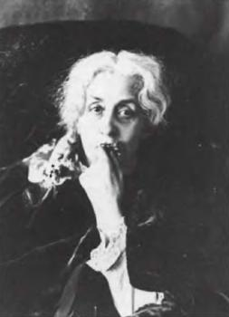
Надар: Мать или жена художника
29
В своем размышлении я также не мог упустить то, что я обнаружил это фото по мере углубления во Время. Греки входили в Смерть пятясь назад, имея свое прошлое перед собой. Так же и я спустился по течению жизни, но не своей собственной, а любимого мной существа. Начав с последнего снимка, сделанного летом перед ее смертью (с усталым и благородным видом она сидит перед дверью нашего дома в окружении моих друзей), я, спустившись на три четверти века, пришел к ее детскому снимку: и вот я напряженно всматриваюсь в Суверенную Благость ее детства, детства матери-ребенка. Значит, я терял ее дважды: в ее уходе из жизни и в ее первом фото, ставшем для меня последним: однако в последнем случае все менялось местами, и я наконец обретал ее такой, какой она есть в себе…
Я пережил это движение фотографии, порядка фотографии в действительности. В конце своей жизни — незадолго до того момента, когда, рассматривая ее снимки, я обнаружил Фотографию в Зимнем Саду — мама была очень слаба. Я жил ее слабостью, я не мог участвовать в обычной жизни, наносить визиты по вечерам; любые светские обязательства приводили меня в ужас. Во время ее болезни я ухаживал за ней, подносил ей чай в миске, которую она любила потому, что пить из нее ей было удобнее, чем из чашки; она как бы стала для меня маленькой девочкой, слившись в моих глазах с тем сущностным ребенком, каким она была на своей первой фотографии. В результате инверсии, которой я когда-то восхищался, сын у Брехта политически воспитывает свою мать; но я никогда свою мать не воспитывал, не обращал ее в какую-либо веру, в каком-то смысле я с ней никогда даже «не говорил», не произносил перед ней и для нее речей; мы молчаливо полагали, что легкость и незначительность слов, приостановка образов составляют само пространство любви, ее музыку. В конечном счете я ощущал ее — сильную настолько, что она была моим внутренним Законом — своим ребенком женского пола. Таков был мой способ разрешения проблемы Смерти. Если Смерть, как утверждали многие философы, является неоднозначной победой рода, если отдельное умирает ради того, чтобы удовлетворить всеобщее, если, после воспроизведения себя в качестве другого, индивид умирает, подвергнув себя отрицанию и преодолению, я, у которого не было потомства, в самой болезни породил свою мать. Ее смерть лишила меня какого-либо основания для соотнесения себя с поступью высшей Жизни (рода). Моя отдельность более никогда не смогла бы стать всеобщей (кроме разве что утопического проекта письма, который с этого момента должен был стать единственной целью моей жизни). Мне не оставалось ничего другого, как ждать тотальной, неподверженной диалектике смерти.
Все это сказала мне Фотография в Зимнем Саду.
30
В этом конкретном фото ощущалось нечто от сущности Фотографии. И тогда я решил «вывести» всю Фотографию (вместе с ее «природой») из единственного снимка, который наверняка существовал для меня, взяв его в некотором роде за путеводную нить моего последнего исследования. Совокупность существующих в мире фотографий составляет Лабиринт. Я знал, что в центре этого Лабиринта я обнаружу не что иное, как этот единственный снимок, заставляя сбыться пророчество Ницше: «Человек лабиринта ищет не истину, а всего лишь свою Ариадну». Фото в Зимнем Саду было моей Ариадной, но не потому, что благодаря ему я обнаружил нечто тайное (будь то чудовище или сокровище), а в силу того, что оно открыло мне, из чего была сделана нить, привязывающая меня к Фотографии. Я понял, что с этих пор надлежит вопрошать об очевидности Фотографии не с точки зрения удовольствия, а с позиции того, что можно на несколько романтический лад назвать любовью и смертью.
(Я не могу показать Фото в Зимнем Саду другим. Оно существует для одного меня. Вам оно показалось бы не более чем одной из многих фотографий, одним из тысяч проявлений «чего-то неопределенного». Оно ни в коей мере не может составить видимый предмет научного знания; на нем не может основываться объективность в положительном смысле этого слова; в лучшем случае оно заинтересовало бы ваш studium: эпохой, одеждой, фотогеничностью, но для вас в нем не было бы никакой раны).
31
С самого начала я взял себе за правило: перед лицом конкретных фото не сводить себя в качестве субъекта к бесплотному, упраздненному socius'y
6, который составляет предмет науки. Это правило обязывало меня «предать забвению» два института: Семьи и Материнства.
Анонимный корреспондент написал мне: «Слышал, что вы готовите к печати альбом о семейных фотографиях» (пути молвы неисповедимы). Ответ: никакого альбома, никакой семьи. С давних пор семьей для меня была мама, рядом со мной был брат, и кроме них никого, за исключением разве что воспоминания о родителях родителей, ни одного кузена или кузины, столь необходимых для образования семейной группы. Кроме того мне крайне антипатичен научный подход, состоящий в том, чтобы трактовать семью исключительно в качестве паутины принуждений и ритуалов: семья или кодируется как группа ближайших родственников, или же превращается в гнездо конфликтов и вытеснений. Создается впечатление, что наши ученые просто не могут вообразить себе семей, «где просто любят друг друга».
Так же как я не хочу редуцировать свою семью к Семье, не хочу я и сводить свою мать к Матери. Читая некоторые исследования общего порядка, я понимал, что они убедительным образом могли бы быть применены и к моей ситуации: комментируя Фрейда («Моисей и монотеизм»), Ж.-Ж. Гу поясняет, что иудаизм отверг поклонение образам для того, чтобы защитить себя от опасности культа Матери, и что христианство, разрешив изображение женщины-матери, преодолело строгость Закона в пользу Воображаемого. Хотя сам я воспитан в религии без культа изображений, в которой нет поклонения Матери (я имею ввиду протестантизм), а в культурном отношении вне сомнения сформирован католическим искусством, разглядывая Фото в Зимнем Саду, я отдаюсь во власть Образа, Воображаемого. Итак, я мог понять свою принадлежность к всеобщему, но и поняв, я неминуемо выскальзывал из его объятий. Как если бы в Матери было лучащееся, несводимое ядро — моя мама. Можно сказать, что мое страдание усиливается тем, что я жил с ней всю свою жизнь. Но оно связано с тем, какой она была, и именно в силу того, что она была такой, я и жил с ней. К Матери как Благу она добавила еще один вид благодати: быть конкретным, наделенным душой существом. Я мог бы сказать то же, что сказал Рассказчик у Пруста после смерти его бабушки: «Значение для меня имело не просто страдание, но и уважение к неповторимости этого страдания» — ибо неповторимость эта является всего лишь отражением того, что было в ней абсолютно несводимым и в силу этого утраченным раз и навсегда. Говорят, что постепенная работа траура мало-помалу устраняет боль; я не верил и не верю в это, ибо в моем случае Время стирает связанную с утратой эмоцию (я не плачу) — и больше ничего. Все остальное остается охваченным неподвижностью. Ибо утраченное мной есть не Фигура (Мать), а существо, и даже не существо, а качество (душа) и притом качество не необходимое, но незаменимое. Я мог жить без Матери (рано или поздно все мы это делаем), но остававшаяся жизнь была бы наверняка до самого конца невыразимой (лишенной качеств).
32
То, что я непринужденно и без прикрытия метода заметил с самого начала, а именно, что всякая фотография в каком-то смысле соприродна своему референту, я открыл вновь, увлеченный, если так можно выразиться, истиной конкретного образа. Теперь я должен был согласиться на соединение двух голосов: голоса банальности (говорить то, что все и так видят и знают) и голоса сингулярности (поднять эту банальность на поверхность в порыве чувства, принадлежащего исключительно мне). Это было все равно что искать определение глагола, который лишен инфинитива и обладает только временем и наклонением.
Во-первых, мне предстояло понять и по возможности высказать (даже если это несложно) то, чем Референт Фотографии отличается от референтов других систем изображения. «Фотографическим референтом» я называю не вещь факультативно реальную, к которой отсылает образ или знак, но вещь реальную необходимо и расположенную перед объективом, ту вещь, без которой не было бы фотографии. Живопись способна измыслить реальность без того, чтобы ее увидеть. Дискурс комбинирует знаки, которые, конечно, обладают референтами, но эти последние могут оказаться и чаше всего оказываются «химерическими». В случае Фотографии нельзя, в отличие от всех других видов имитации, отрицать, что вещь там была. В ней имеет место наложение реальности и прошлого. А поскольку подобное ограничение относится только к ней, его нужно считать самой ее сущностью, ноэмой Фотографии. Интенционализуемое мной в фото (не будем пока говорить о кино) не является Искусством или Коммуникацией, это — Референция, составляющая основание Фотографии.
Названием для ноэмы Фотографии будет в таком случае «оно там было», другими словами, Неуступчивость. По-латыни это звучало бы (этот педантизм необходим, потому что проясняет некоторые тонкости) так: «interfuit» или: то, что я вижу, было там, в этом самом месте, простирающемся между бесконечностью и субъектом (будь то operator или spectator); оно там было и все же сразу же отделилось; оно там абсолютно, неоспоримо присутствовало и тем не менее в уже отсроченном состоянии. Все это вместе обозначается глаголом intersum.
Возможно, в каждодневном потоке фотографий, во множестве видов интереса, который они вызывают, ноэма «это там было» не то чтобы вытесняется (вытесняться ноэма не может), но переживается с безразличием, как само собой разумеющееся свойство. От этого безразличия и пробудило меня Фото в Зимнем Саду. В соответствии с логикой парадокса — потому что обычно прежде чем провозгласить их «истинными» вещи сначала подвергают верификации — я под воздействием нового интенсивного опыта индуцировал из истины изображения реальность его происхождения; я смешал истину и реальность в единой эмоции, в которую и поместил природу или гений Фотографии. Между тем никакой живописный портрет, даже если сам он представлялся мне «истинным», не мог убедить меня в том, что его референт действительно существовал.
33
Это можно выразить по-другому: Фотография по природе своей основывается на позе. Физическая длительность этой позы значения не имеет; даже в одну миллионную долю секунды (падение капли молока, как его изображает Г.Д. Эджер-тон) поза уже имела место, ибо поза в данном случае не определяется отношением «мишени» или техникой Operator'a, но относится к сфере «интенции» чтения: рассматривая фото, я неизбежно делаю частью моего взгляда мысль об этом мгновении, каким бы кратким оно ни было, мгновении, когда реальная вещь неподвижно стояла перед глазами.
Я перевожу неподвижность нынешнего фото на прошлый снимок; именно эта задержка и составляет позу. Этим объясняется, что ноэма Фотографии становится другой, когда она оживает и превращается в кино: в случае Фото какая-то вещь позировала перед небольшим отверстием и осталась (подсказывает мне чувство) в нем навсегда, тогда как в кино нечто прошло перед тем же самым отверстием: позу уносит и подвергает отрицанию непрерывная последовательность образов. За этим стоит иная феноменология, имеющая своим основанием новое искусство, пусть и производное от первого.
В Фотографии присутствие вещи в некоторый момент прошлого никогда не бывает метафорическим; то же относится к жизни одушевленных существ (за исключением случаев, когда фотографируют трупы); если фотография становится ужасающей, то происходит это потому, что она, так сказать, удостоверяет, что труп является живым в качестве трупа, что он является живым изображением мертвой вещи. Неподвижность Фото представляет собой результат перверсивного смешения двух понятий: Реального и Живого; удостоверяя, что предмет был живым, она подспудно побуждает верить, что он еще жив; это происходит в результате заблуждения, побуждающего приписывать Реальному абсолютно высшую, как бы вечную, ценность; но, сдвигая реальное в сторону прошлого («это было»), фотография намекает, что оно уже мертво. Неподражаемой чертой Фотографии (ее ноэмой) является то, что кто-то видел референта — даже если речь при этом идет об объекте — во плоти или лично. Исторически Фотография возникла как искусство Личности: ее идентичности, гражданского статуса, того, что во всех смыслах этого выражения можно назвать ее достоинством (quant-à-soi). И в этом отношении кино с феноменологической точки зрения с самого начала отличается от Фотографии, ибо, будучи вымышленным, оно смешивает две позы, «это было» актера и «это было» роли. В результате (чувство, которое я никогда не испытываю перед картиной) я не могу без некоторой меланхолии смотреть и пересматривать фильмы с участием актеров, которые, как мне известно, умерли: эта меланхолия сродни Фотографии. (Аналогичное чувство я испытываю, когда слушаю голоса умерших певцов.)
Я снова задумываюсь над фотографией Аведона, на которой представлен Уильям Кэсби, «родившийся рабом». Ноэма в этом случае весьма сильна, ибо тот, на кого я смотрю, действительно был рабом, он свидетельствует, что рабство существовало и не так уж отдалено от нас; он утверждает это не посредством исторического свидетельства, но с помощью доказательств нового типа, в каком-то смысле экспериментальных, а не полученных путем простой индукции, хотя речь идет о прошлом. Они заслуживают названия испытания-по-святому-Фоме-желающего-прикоснуться-к-воскресшему-Христу. Помню, я долго хранил одну фотографию, вырезанную из иллюстрированного журнала, — потом она пропала, как любая вещь, которую сохраняют слишком тщательно; на ней изображалась продажа в рабство: хозяин стоял в шляпе, а рабы сидели в набедренных повязках. Повторяю: это была фотография, а не гравюра, и с этим были связаны мой детский ужас и зачарованность тем, что это точно имело место; вопрос не в точности передачи, а в реальности изображенного. Историк уже не выступал в качестве посредника, рабство была дано непосредственно, факт его существования устанавливался без применения метода.
34
Нередко утверждают, что Фотография была изобретена художниками: они-де перенесли в нее кадрирование, изобретенную Альберти перспективу и оптику камеры-обскуры. Я думаю, это заслуга химиков. Ибо ноэма «это было» стала возможной в тот самый день, когда научное открытие (открытие светочувствительности галоидных соединений серебра) позволило зафиксировать и непосредственно запечатлеть световые лучи, испускаемые по-разному освещенными объектами. Фото является буквальной эманацией референта. От реального, «бывшего там» тела исходят излучения, дотрагивающиеся до меня, находящегося в другой точке; длительность трансмиссии особого значения не имеет, фото исчезнувшего существа прикоснется ко мне так же, как находящиеся в пути лучи какой-нибудь звезды. С моим взглядом тело сфотографированной вещи связывает подобие пуповины. Свет, хоть и неосязаемый, представляется в данном случае телесным проводником, кожей, которую я разделяю с тем или с той, что сфотографирован [а].
Слово «фотография» по-латыни звучало бы так: «imago lucis opera expressa», т. е. «образ, выявленный, выделенный, смонтированный, выжатый, как лимонный сок, под воздействием света». И если Фотография зародилась в мире, сохранившем еще некоторую чувствительность к мифу, богатство этого символа не замедлило бы вызвать ликование: любимое тело обессмерчено при посредстве ценного металла, серебра (с ним связаны памятники и роскошь); к этому добавилась бы мысль о том, что данный металл, подобно всем металлам в Алхимии, жив.
Может быть, в силу того, что меня очаровывает (или вгоняет в депрессию) знание, что когда-то существовавшая вещь своим непосредственным излучением, свечением действительно прикоснулась к поверхности, которой в свою очередь касается мой взгляд, Цвет не вызывает у меня никакого энтузиазма. На дагерротипе 1843 года, имеющем форму медальона, изображены мужчина и женщина, подкрашенные post factum миниатюристом, нанятым владельцем фотоателье; меня не оставляет впечатление (происходящее на самом деле значения не имеет), что и в фотографии в целом цвет точно так же как штукатурка, post factum, наложился на изначальную истину Черно-белой фотографии. На мой взгляд, Цвет в фото — это как накладные волосы и румяна, которыми раскрашивают покойников. В фотографии для меня значима не «жизнь», являющаяся чисто идеологическим понятием, но уверенность в том, что сфотографированное тело прикасается ко мне своими собственными лучами, а не искусственно привнесенным (surajoutée) светом.
(Следовательно, какой бы бледной ни была Фотография в Зимнем Саду, бесценной для меня ее делают лучи, исходившие от моей матери-ребенка, от ее волос, ее кожи, ее платья, ее взгляда — и все это в тот самый день.)
35
Фотография не напоминает о прошлом, в ней нет ничего от Пруста. Производимое ею на меня воздействие заключается не в том, что она восстанавливает уничтоженное временем, расстоянием и т. д., но в удостоверении того, что видимое мною действительно было. Это воистину возмутительное воздействие. Фото постоянно изумляет меня, и это состояние, не исчерпываясь, длится и возобновляется. Может быть, это изумление, это упорствование уходят корнями в религиозную субстанцию, из которой я вылеплен; ничего не поделаешь: у Фотографии есть нечто общее с воскресением (нельзя ли сказать о ней то же, что византийцы говорили об образе Христа, пронизавшем собой Туринскую Плащаницу, а именно, что она не создана человеческими руками, acheïro-poïetos?)
Вот польские солдаты на войне во время привала (Кёртеш, 1915)? ничего особенного, за исключением одного обстоятельства, с которым не совладает никакая реалистическая живопись — они там были: видимое мной не является воспоминанием, фантазией, воссозданием, фрагментом майи, которые в изобилии поставляет искусство, но реальностью в ее прошлом состоянии, одновременно прошлой и действительной. То, что Фотография дает в пищу моему духу, который никогда не насыщается ею, сводится к простой мистерии сосуществования, достигаемой с помощью краткого акта, который не переходит в грезу (таково же, вероятно, определение сатори). Какой-то анонимный фотограф представил свадьбу в Англии; человек двадцать пять разного возраста, две девочки, грудной младенец; я смотрю на дату и подсчитываю: это 1910 год, следовательно, все они — за исключением разве что двух девочек и младенца, превратившихся теперь в пожилых дам и господина, — уже умерли. Когда я вижу пляж в Биаррице в 1931 году (работа Лартига) или Мост Искусств в 1932 году (работа Кёртеша), я говорю себе: «Быть может, я там был, быть может, это я среди купающихся и прохожих в один из летних полдней, когда я садился на трамвай в Байонне, чтобы искупаться на Большом Пляже, или в одно воскресное утро, когда я, выйдя из нашей квартиры на улице Жака Калло, переходил через этот мост, направляясь к Ораторианскому храму (это был религиозный период моего отрочества)». Дата составляет часть фото не потому, что определяет стиль (он меня никак не касается), но потому, что заставляет меня поднять голову, вычисляя шансы жизни, смерти, неумолимость вымирания целых поколений. Возможно ли, что Эрнест, юный школьник, сфотографированный Кёртешем в 1931 году, жив до сих пор (но где? и каким образом? Вот это роман!)? Точкой отсчета любой фотографии являюсь я сам, и именно в силу этого она побуждает изумляться, обращая ко мне фундаментальный вопрос: по какой причине я живу здесь и теперь?
«Возможно ли, что Эрнест до сих пор жив. Но где? и каким образом? Вот это роман!»
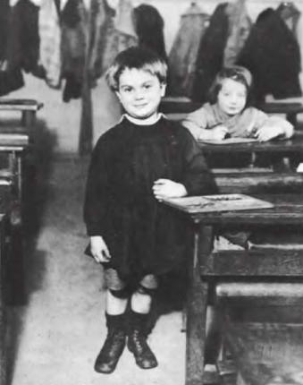
Андре Кёртеш: Эрнест, 1931
Конечно, Фотография в большей мере, чем какое-либо другое искусство, постулирует непосредственное присутствие в мире — своего рода соприсутствие; но это присутствие не просто политического («участие в современных событиях с помощью образов»), но также метафизического порядка. Флобер потешался (но действительно ли он потешался?) над манерой Бювара и Пекюше задаваться вопросами о небесном своде, звездах, времени, жизни, бесконечности и пр. Именно такого рода вопросы ставит передо мной Фотография: вопросы, восходящие к «тупой» или простой метафизике (сложными являются ответы на них, а не они сами). Возможно, это и есть подлинная метафизика.
36
Фотография не сообщает (не обязательно сообщает) о том, чего уже нет, но исключительно и наверняка о том, что было. Эта тонкость является решающей. Перед фото сознание с необходимостью становится не на путь ностальгического воспоминания (многие снимки пребывают вне индивидуального времени вообще), но — и это относится ко всем существующим в мире фото — на путь достоверности; сущность Фотографии заключается в ратификации того, что она представляет. Однажды я получил от фотографа свой снимок и несмотря на все усилия не мог вспомнить, где он был сделан; я обследовал галстук, пуловер для обнаружения того, при каким обстоятельствах я их надевал — напрасные старания. И тем не менее, поскольку это была фотография, отрицать, что я там был, даже не зная, где именно, я не мог. Подобное нарушение равновесия между достоверностью и забвением вызвало у меня головокружение, что-то вроде тоски, одолевающей сыщика (похожая тема развивалась в фильме «Blow-up»); я направлялся на вернисаж выставки работ этого фотографа как на следственный эксперимент, надеясь наконец-то узнать о себе то, чего не знал.
Ничто написанное не в силах сравниться по достоверности с фото. Несчастье языка, а возможно и присущее ему сладострастие, связано с тем, что он неспособен проверить собственную аутентичность. Ноэмой языка и является, вероятно, это бессилие или, выражаясь более определенно: язык по природе своей основан на вымысле, для того, чтобы сделать его невымышленным, требуется огромное количество предосторожностей; в свидетели призывают логику, а в ее отсутствие — клятву, данную под присягой. Фотография же безразлична по отношению к любым посредствующим звеньям, она ничего не изобретает, она — это само утверждение подлинности; редкие ухищрения, которые она себе позволяет, не являются верификативными — это обычные трюки; фотография трудится в поте лица лишь тогда, когда она мошенничает. Это как бы пророчество наоборот: подобно Кассандре, но с глазами, обращенными в прошлое, она никогда не лжет; точнее, она может обманывать в отношении смысла вещи, будучи по природе тенденциозной, но не в том, что касается ее существования. Бессильная в плане общих идей, неспособная к вымыслу, она все же превосходит все то, что может и уже смог придумать человеческий дух для того, чтобы убедить нас в существовании реальности, но в то же время сама эта реальность суть не более чем случайность («вот так, и все тут»).
Любая фотография — это сертификат присутствия. Он и представляет собой новый ген, который ввело в семейство образов изобретение фотографии. Должно быть, первые фото, увиденные человеком, — к примеру, «Накрытый стол» Ньепса, — показались ему как две капли воды похожими на произведения живописи (все та же камера-обскура), и тем не менее он знал, что столкнулся лицом к лицу с мутантом (точно так же марсианин может походить на человека); его сознание вывело встреченный объект за пределы всяческой аналогии, как видимую эманацию «того, что случилось»; это был не образ и не реальность, а воистину новое существо: реальность, до которой уже нельзя дотронуться.
Возможно, в нас заложено необоримое сопротивление любой вере в прошлое, в Историю, которая не принимает форму мифа. Фотография впервые это сопротивление преодолевает: прошлое с ее появлением становится столь же достоверным, как и настоящее, видимое на бумаге так же надежно, как то, к чему прикасаются. Именно с приходом Legendre Фотографии — а вовсе, как уже сказано, не с изобретением кино — связан водораздел в мировой истории.
В силу того, что Фотография представляет собой объект антропологически новый, он, по моему мнению, не охватывается обычными спорами о природе образа. У современных исследователей Фотографии, будь то социологи или семиотики, в моде семантическая относительность: никакой «реальности», ничего кроме технических приемов, величайшее презрение к «реалистам», которые не замечают, что любое фото закодировано: Thesis, а не Physis. Фотография, повторяют эти исследователи, не является аналогом мира, запечатляемое ею — сфабриковано, потому что фотографическая оптика подчинена явлению сугубо историческому, введенной Альберти перспективе, и потому что отпечаток на клише превращает трехмерный объект в его двухмерное подобие.
Первая фотография
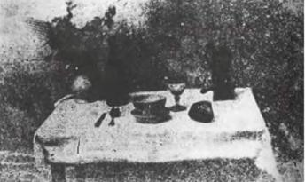
Нисефор Ньепс: Накрытый стол, приблизительно 1822
Тщетный спор: ничто не может воспрепятствовать тому, чтобы фото действовало по аналогии, но вместе с тем ноэма фотографии вовсе не в аналогии (эта черта роднит ее с самыми разными представлениями). Реалисты, к числу которых принадлежу и я, и каковым я был, когда утверждал, что Фотография представляет собой незакодированный образ, — даже если ее прочтение, что очевидно, руководствуется кодами, — принимают фото отнюдь не за «копию» реального, а за эманацию прошлой реальности, за магию, а не за искусство. Задаваться вопросом о том, закодирована фотография или действует по аналогии — не лучший путь ее анализа. Важно, что фото наделено удостоверяющей способностью и что эта последняя относится не к объекту, а ко времени. В Фотографии способность к установлению подлинности с феноменологической точки зрения перевешивает способность представления.
37
Все писавшие о литературе, по словам Сартра, отмечают скудность образного ряда, который сопровождает чтение романа; если роман меня действительно захватывает, ментальный образ не возникает вообще. Подобной Скудообразности чтения соответствует Всеобразность фото, и не только потому, что оно является образом уже само по себе, но и в силу того, что этот весьма специальный образ выдает себя за завершенный, за интегральный, если позволить себе игру на различных смыслах этого слова. Фотографическое изображение полно, набито до отказа, за отсутствием места к нему ничего нельзя добавить.
В кино, которое работает на фотоматериале, фото тем не менее не обладает такой завершенностью, и кино это идет на пользу. Почему так происходит? Потому что, захваченное потоком, фото влечется вперед, непрерывно устремляется ко все новым видам. В кино фотографический референт хотя и присутствует постоянно, он скользит, он не устраивает демонстраций в поддержку своей реальности, не уверяет в достоверности своего существования; он не прицепляется ко мне — другими словами, это не призрак. Подобно миру реальному, мир фильма держится на презумпции того, что «опыт будет постоянно протекать в едином конститутивном стиле»; Фотография взламывает этот «конститутивный стиль» (отсюда вызываемое ею изумление), у нее нет будущего (отсюда ее патетика и меланхолия), в ней нет никакого влечения вперед, тогда как кино влекомо вперед и поэтому начисто лишено меланхолии (так что же оно тогда такое? — Оно попросту «нормально», как жизнь). По причине неподвижности Фотография отходит от доказательства и приходит к удержанию.
То же можно выразить по-иному. Вот у меня в руке снова Фото в Зимнем Саду. Я остаюсь перед ним, наедине с ним. Круг замкнулся, из него нет выхода. Я страдаю в неподвижности. Стерильная, жестокая неполнота: я не в силах трансформировать свою скорбь, я не могу заставить себя отвести взгляд; никакая культура не помогает мне выразить страдание, переживаемое мной в полной мере наряду с конечностью изображения (вот почему несмотря на все коды я не могу прочитать фотографию). Фотография — моя Фотография— лишена культуры: несмотря на всю ее мучительность, в ней нет ничего, что могло бы превращать скорбь в траур. И если диалектическим является мышление, которое подчиняет себе тварное и обращает отрицание смерти в мощь труда, то Фотография недиалектична: она представляет собой выродившийся театр, в котором смерть лишена способности самосозерцания, саморефлексии и самоовнутрения или, говоря по-другому, это — мертвый театр смерти, насильственное вытеснение Трагического; он исключает любую форму очищения, любой катарсис. Я мог бы поклониться Образу, Картине, Статуе, но Фотографии?! Я способен сделать фото частью ритуала, поместив его в альбом или поставив на стол, лишь в том случае, если я стараюсь его не разглядывать (или избегаю того, чтобы оно меня разглядывало), добровольно обманывая его невыносимую полноту и самим фактом моего невнимания приобщая его к совершенно другому классу фетишей: к иконам, которые православные верующие целуют не поднимая на них глаз, сквозь отражающее блики стекло.
В Фотографии обездвиживание, сковывание Времени принимает чрезмерную, чудовищную форму; Время закупоривается (отсюда отношение фото к Живой Картине, мифическим прототипом которой является усыпление Спящей Красавицы). Принадлежность Фото к современности, его связь с самыми актуальными проявлениями обыденной жизни не препятствует тому, что в нем есть нечто от загадочной несвоевременности, странного застывания, от остановки в самой ее сущности (я читал, что жители города Монтиель в провинции Альбацете жили именно так: с оглядкой на когда-то остановившееся время, читая газету или слушая радио). Фото не только по своей сути никогда не является воспоминанием (грамматическим выражением которого было бы прошедшее совершенное время, тогда как временем Фото является скорее аорист
7), но оно блокирует его, очень быстро становясь противоположностью воспоминания (contre-souvenir). Однажды друзья разговорились о своих детских воспоминаниях, у них они были, но у меня, только что кончившего рассматривать старые фотографии, воспоминаний не было. Окруженный этими снимками, я уже не мог утешать себя стихами Рильке: «Комната купается в нежных, как воспоминание, мимозах»; Фото не «омывают» комнату, в них нет запаха, нет музыки — одна неимоверно
разбухшая вещь. Насильственность Фотографии связана не с тем, что она запечатлевает проявления насилия, но с тем, что каждый раз
она насильственно заполняет взор и что в ней ничто не в силах подвергнуться отказу или трансформации (то, что ее иногда можно назвать кроткой, не противоречит насильственности этого рода; сахар, по мнению многих, сладок, но мне он представляется насильственным).
38
Молодые фотографы, которые снуют по миру, отдавая все силы поиску новостей, и не подозревают, что являются агентами Смерти. Фото — это способ, каким наше время принимает в себя Смерть, а именно, пользуясь обманчивым алиби плещущей через край жизни, профессионалом фиксации которой в каком-то смысле является Фотограф. Исторически Фотография имела отношение к «кризису смерти», восходящему ко второй половине XIX столетия, и я предпочел бы, чтобы вместо неустанного вписывания изобретения Фотографии в социальный и экономический контекст задались бы лучше вопросом об антропологической связи Смерти и нового вида изображения. Ведь необходимо, чтобы Смерть пребывала в обществе в каком-то месте; если ее уже нет (или осталось мало) в религии, она должна попасть в другое место — возможно в образ, который под предлогом сохранения жизни производит Смерть. Современница отмирания обрядовости, Фотография, вероятно, была связана со вторжением в наше современное общество асимволической, внерелигиозной, внеритуальной Смерти, резкого прыжка в буквально понятую Смерть. Парадигма Жизнь/Смерть сводится к заурядному щелчку, отделяющему первоначальную позу от отпечатанного снимка.
С появлением Фотографии мы вступаем в эпоху невыразительной Смерти. Однажды после лекции кто-то бросил мне с презрительным видом: «Вы говорите о Смерти так вяло», — как если бы ужас Смерти не состоял в этой ее вялости! Ужас в том, что нечего сказать о смерти той, которую я люблю больше всего, нечего сказать о ее фотографии, которую я созерцаю без малейшей возможности ее углубить, трансформировать. Единственная «мысль», какая может меня посетить — мысль о том, что в этой первой смерти записана моя собственная смерть, а между ними ничего за исключением ожидания; у меня не остается иной опоры кроме иронии: говорить о «нечего сказать».
Я могу превратить Фото разве что в отбросы — положить в ящик стола или бросить в мусорную корзину. Оно не только разделяет судьбу любой бумаги (чего-то бренного), но даже если фото прикреплено к более долговечной подставке, оно не становится от этого менее смертным: подобно живому организму, оно рождается непосредственно на частицах серебра, которые вызревают, на какой-то момент расцветают, после чего старятся. Подвергаясь воздействию света и влажности, фото бледнеет, выдыхается и исчезает: после этого остается его выбросить. Древние общества прилагали все усилия к тому, чтобы воспоминание как замена жизни было вечным или, по крайней мере, чтобы вещь, возвещающая Смерть, сама была бессмертной — таким и был Памятник. Превращая бренную Фотографию во всеобщее и как бы естественное свидетельство того, «что было», современное общество отказалось от Памятника. Парадоксальным образом История и Фотография были изобретены в один век. Но История представляет собой память, сфабрикованную по положительным рецептам, чисто интеллектуальный дискурс, упраздняющий мифическое Время, а Фотография — это надежное, но мимолетное свидетельство. Так что в наше время все готовит человеческий род к бессилию: скоро мы уже не сможем постигать длительность аффективно или символически. Эра Фотографии является одновременно эрой революций, протестов, покушений, взрывов, короче, всего того, что отрицает медленное вызревание. Несомненно, и изумление перед «это было» также скоро исчезнет. Оно уже исчезло. Сам не зная почему, я являюсь одним из последних его свидетелей (свидетелем Неактуального), а эта книга — его архаическим следом.
Чему предстоит исчезнуть вместе с этой фотографией, которая желтеет, бледнеет, стирается и будет в один прекрасный день выброшена на помойку если не мной самим (я слишком суеверен для этого), то после моей смерти? Не просто жизни, которая живой позировала перед объективом, но иногда также (как бы лучше это выразить?) — и любви. Глядя на единственную фотографию, где мои отец и мать изображены вместе — а они, я знаю, любили друг друга — я думаю: навсегда исчезнет сокровище любви, ибо когда меня уже не будет на этом свете, никто не сможет о ней свидетельствовать; останется только безразличная Природа. В этом заключена такая щемящая, острая, невыносимая боль, что из-за нее Мишле, один наперекор всем своим современникам, понял Историю как Объяснение в любви, как то, что продолжает не просто жизнь, но и то, что он, пользуясь своим ныне вышедшим из моды словарем, называл Благом, Справедливостью, Единством и т. д.
39
Когда в самом начале этой книги, т. е. уже давно, я задавался вопросом о причинах моей привязанности к некоторым фотографиям, мне показалось возможным ввести различение между полем культурных интересов (studium) и тем неожиданным зигзагом, который иногда это поле рассекал (punctum). Теперь мне известно, что существует еще один punctum, еще один вид «стигмат» — это «деталь». Новым punctum'ом такого рода, обладающим не формой, а интенсивностью, является Время, душераздирающий пафос ноэмы «это было», ее репрезентация в чистом виде.
В 1865 году молодой человек, Льюис Пэйн, покушался на убийство американского Государственного секретаря У. Х. Сьюарда. Александр Гарднер сфотографировал его в одиночной камере, в ожидании исполнения приговора (смерть через повешение). Фотография прекрасна, красив и изображенный на ней юноша, подсказывает studium. Но punctum в том, что скоро ему предстоит умереть. Я одновременно читаю: это случится и это уже случилось, — и с ужасом рассматриваю предшествующее будущее время, ставкой в котором является смерть. Снабжая меня абсолютным прошлым (аористом) позы, фотография сообщает мне о смерти в будущем времени. Укол составляет обнаружение этого соответствия. Глядя на фото моей мамы в детстве, я говорю себе: «Ей предстоит умереть», — и, как страдающий психозом пациент Уинникота, дрожу в преддверии катастрофы, которая уже имела место. Подобной катастрофой можно назвать любое фото, является ли смерть его сюжетом или нет.
В большей или меньшей степени стертый из-за обилия и разностильности современных фотографий, этот punctum четко прочитывается в исторической фотографии; в последней всегда имеет место подавление Времени (вещь мертва и она скоро умрет). Две девочки смотрят на примитивный аэроплан, парящий над их деревней — они одеты так же, как моя мама в детстве, они играют в серсо — сколько в них еще жизни! Впереди у них вся жизнь, но вместе с тем они умерли к настоящему времени, следовательно, вчера они уже были мертвы. В конце концов нет никакой нужды предъявлять мне изображение трупа (corps) для того, чтобы я ощутил головокружение от сплющенности Времени. В 1850 году Август Зальцман сфотографировал дорогу в Вифлеем; на фото нет ничего кроме каменистой почвы и оливковых деревьев, но три времени, как вихрь, кружат мое сознание: мое настоящее, время Иисуса и время фотографа — причем все это происходит под эгидой реальности, а не текстуальных, вымышленных или поэтических разработок, которым никогда нельзя поверить до конца.
«Он уже мертв, и ему предстоит умереть».
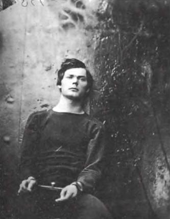
Александр Гарднер: Портрет Льюиса Пэйна, 1865
40
Любая фотография, поскольку она содержит в себе повелительный знак нашей будущей смерти, — даже если по видимости она надежно вписана в самую гущу человеческой жизни — окликает каждого из нас поодиночке, за пределами всякой всеобщности (но не за пределами трансцендентности). Кроме того, фото (если не считать скучных вечерних церемониалов совместного перелистывания альбомов) лучше всего смотреть в одиночестве. Я с трудом переношу частные показы фильмов (недостаточно публики, недостаточно анонимности), но испытываю нужду оставаться наедине со снимками, которые рассматриваю. На исходе средневековья некоторые верующие заменили коллективные чтения Библии и молитву молитвой индивидуальной, тихой, овнутренной и медитативной (devotio moderna). Таков, представляется мне, режим spectatio. Публичное рассматривание фотографий всегда по сути есть их частное рассматривание. Это очевидно в случае старых, «исторических» фото, на которых я читаю время моей молодости, молодости моей мамы или поколения ее родителей, на которые я проецирую смущающее существо, являющееся конечным членом целого семейного клана (lignée). То же верно и в отношении фото, которые, на первый взгляд, не имеют никакой, даже метонимической, связи с моим существованием (к примеру, в отношении всех репортажных фотографий). Каждое фото читается как частное проявление его референта: эпохе Фотографии в точности соответствует вторжение приватного в сферу публичного, точнее, порождение новой социальной ценности, каковой является публичность приватного: приватное как таковое потребляется публично (об этом свидетельствуют бесконечные вторжения прессы в частную жизнь «звезд» и растущая неопределенность относящегося к этой области законодательства). Однако в силу того, что сфера частной жизни (le privé) есть не только благо (подпадающее под действие исторически сформировавшихся законов о собственности), но также и нечто большее: обладающая абсолютной ценностью, неотчуждаемая связь, где мое изображение свободно (свободно себя упразднить), поскольку оно составляет условие внутренней жизни, которую я отождествляю со своей истиной или, если угодно, с тем Неуступчивым, из которого я сделан; с помощью необходимого сопротивления я восстанавливаю границу между публичным и приватным; я желаю высказать свое внутреннее, не выдавая своего интимного. Фотография и мир, часть которого она составляет, переживаются мной в двух планах: с одной стороны, в плане Образов, с другой — в отношении моих фотографий; с одной стороны, игривость, скольжение, шум, несущественное (даже если я всем этим слишком оглушен), с другой — ранение, ожог.
(Любительство обычно определяется как незрелость художника: некто не может или не хочет подняться до полного овладения своей профессией. Однако в области практической фотографии, напротив, именно любитель присваивает себе атрибуты профессионала, ибо именно любитель ближе всего стоит к ноэме Фотографии.)
41
Если фотография нравится, задевает меня, я подолгу рассматриваю ее. Что я делаю все это время, пребывая с ней наедине? Внимательно разглядываю, изучаю ее, как если бы хотел побольше узнать о вещи или личности, которые на ней изображены. Затерянное в глубине Зимнего Сада, лицо моей мамы расплылось, побледнело. После первого же взгляда я воскликнул: «Это же она! Именно она! Наконец-то!» Теперь же я прилагаю все силы, чтобы узнать и суметь выразить, почему, на каком оснований это она. Мне хотелось бы окружить любимое лицо мыслью, превратив его в единственное поле напряженного наблюдения; мне хотелось бы его увеличить, чтобы получше рассмотреть, глубже постичь, выведать его истину (иногда я по наивности доверяю эту задачу фотолаборатории). Мне верится, что многократно («еп cascade») увеличивая деталь, — каждое последующее увеличение вызывает к жизни детали более мелкие, чем при увеличении предыдущем, — я приду к искомой сущности моей мамы. То, чего Мэрей и Майбридж добились в качестве operator'ов, я хочу достичь в качестве spectator'a: я разлагаю, я увеличиваю, я, если так можно выразиться, замедляю для того, чтобы, наконец, иметь время познать. Фотография это желание оправдывает, даже если и не удовлетворяет; безумное желание обнажить истину овладевает мной потому, что ноэмой Фотографии является «это уже было», и я пребываю в иллюзии, что чтобы добраться до того, что там, сзади, достаточно очистить поверхность образа: допытываться значит повертеть фотографию в руках, вторгнуться в глубину бумаги, достичь ее изнанки (ведь для нас, западных людей, сокрытое более «истинно», нежели то, что видимо). Но, увы! я могу доискиваться сколько угодно, никакого открытия не происходит: если я увеличиваю снимок, я дохожу всего лишь до «зерна» бумаги, разлагаю изображение на составляющую его материю; а если я его не увеличиваю, если я удовлетворяюсь внимательным обследованием, я приобретаю то единственное знание, каким и так обладал с давних пор, с первого взгляда на него, а именно, что это действительно было — так что и в этом случае поворот колесика ничего не дал. Перед Фото в Зимнем Саду я чувствую себя видящим дурной сон человеком, который тщетно протягивает руки в стремлении овладеть образом; я подобен Голо, восклицающему: «Ничтожество моей жизни!» — ибо истина Мелизанды не откроется ему никогда. (Мелизанда не скрывается, но она и не говорит. Так же поступает и Фото: оно способно выразить; то, что показывает.)
42
Если мои усилия болезненны и я пребываю в тоске, то иногда я все же подхожу ближе и загораюсь — в каком-то фото мне чудятся очертания истины. Такое случается, когда то или иное фото кажется мне «похожим». Однако по размышлении зрелом я вынужден задать себе вопрос: что на что похоже? Сходство представляет собой соответствие, но соответствие чему? Тождеству. А это тождество в фотографии является нечетким, даже воображаемым, в такой мере, что я могу продолжать говорить о сходстве, так никогда и не увидев оригинал. Это наблюдение относится к большей части фотопортретов Надара (а в наше время Аведона): Гизо кажется «похожим», потому что соответствует мифу о себе как человеке строгих правил; полный, лучащийся здоровьем Дюма «похож», ибо мне известны его самодовольство и плодовитость; Оффенбах — в силу моего знания того, что в его музыке, говорят, есть нечто «духовное»; Россини кажется фальшивым, циничным (он таким кажется — следовательно, на это похож); Марселина Деборд-Вальмор воспроизводит на своем лице несколько глуповатую доброту своих стихов; у Кропоткина ясные глаза анархиствующего идеалиста и т. д. и т. п. Я вижу всех их и могу спонтанно назвать их «похожими», поскольку они соответствуют моим ожиданиям.
«Марселина Деборд-Вальмор воспроизводит на своем лице несколько глуповатую доброту своих стихов».
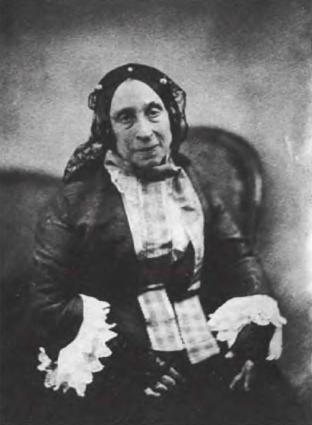
Надар: Марселина Деборд-Вальмор, 1857
Доказательство от противного: ощущая себя неуверенным, амифическим субъектом, как я могу находить себя «похожим»? Я похож только на другие фото меня самого и так до бесконечности; и все они являются лишь копией копии, реальной или ментальной (я в лучшем случае выношу или не выношу себя на некоторых фотографиях в зависимости от того, нахожу ли я себя соответствующим тому образу самого себя, какой хотел бы иметь). При всей видимой банальности (это первое, что говорят о фотопортрете) эта воображаемая аналогия полна странности: X показывает мне фотографию одного из своих друзей, о котором он со мной говорил и которого я никогда не видел, и все же, сам не зная почему, я говорю про себя: «Я уверен, что Сильвен не такой». По сути дела фото похоже на кого угодно, только не на того, кто на нем изображен. Сходство отсылает к идентичности субъекта, а это вещь малоценная, из области гражданского и даже уголовного права; в ней субъект задается «в качестве самого себя», тогда как мне нужен субъект «как он есть в себе». Сходство оставляет меня скептичным и неудовлетворенным (перед современными фото моей матери я испытываю жестокое разочарование, в то время как единственное фото, которое принесло мне всплеск истины, — это фото потерянное, отдаленное, на котором она не похожа на себя, фото ребенка, которого я не знал).
43
А вот вещь более коварная и проникновенная, чем сходство: в иных случаях Фотографии удается выявить то, что не воспринимается в реальном (или отраженном в зеркале) лице: некую родовую черту, частицу самого себя или родственника по восходящей линии. На одном фото у меня «физиономия» как у сестры моего отца. Фотография дает немного истины при условии расчленения тела на части. Она, впрочем, является не истиной индивида, которая остается несводимой, но истиной породы. Иногда я в этом отношении ошибаюсь или испытываю сомнения: на медальоне представлены молодая женщина по пояс и ребенок; конечно, это я и моя мать, но нет… это ее мать со своим сыном (моим дядей). Я определяю это не столько по одежде (на этом «облагороженном» фото одежда почти не видна), сколько по структуре лица: между лицом моей бабушки и лицом мамы разрыв (incidence), зигзаг, связанный с мужем одной и отцом другой, который переделал лицо, и так это продолжалось до моего рождения на свет (младенец, что может быть более нейтральным?) То же относится к фото моего отца в детстве; оно ничуть не похоже на его снимки, сделанные во взрослом возрасте, но некоторые части, отдельные семейные черты связывают это лицо с лицом бабушки и моим собственным, связывают в некотором смысле поверх него. Фотография способна на открытия (в химическом смысле слова), но то, что она раскрывает — это устойчивость родовых признаков.
Родовой корень.
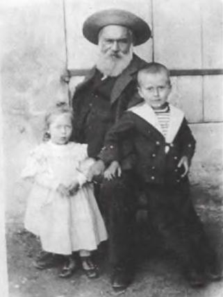
Фотография из коллекции автора
После смерти принца де Полиньяка, сына министра короля Карла X, Пруст заметил, что «лицо его осталось лицом его породы, предшествующим его индивидуальной душе». Фото подобно старости: даже будучи пышущей здоровьем, она лишает лицо мясистости, делая явной его генетическую сущность. Пруст (опять он) говорит о Шарле Хаасе (прототипе Сванна), что у него был небольшой нос без горбинки, но что старость как бы выдубила его кожу, сделав нос типично еврейским.
Порода снабжает более сильной и плодотворной идентичностью, нежели идентичность гражданская — а также более ободряющей, ибо мысль о происхождении успокаивает нас, в то время как мысль о будущем приводит в волнение, вызывает тоскливое чувство. Это открытие, однако, вводит нас в заблуждение, потому что одновременно с утверждением постоянства (являющегося истиной рода, а не моей личной истиной) оно сводит на нет мистическое различие существ, принадлежащих к одной семье: какое отношение имеет мама к своему грозному, монументальному, похожему на Гюго деду, воплощению нечеловеческой дистанции, связанной с Родом?
44
Итак, я должен подчиниться закону, который запрещает углубляться в фотографию, пронизывать ее насквозь; я могу лишь прочесывать ее взглядом как неподвижную поверхность. Фотография
плоска во всех смыслах этого слова — вот с чем мне надлежит согласиться. Скорее неверно то, что ее ассоциируют с идеей темного прохода (camera obscura). Следовало бы лучше сказать: camera lucida — по названию аппарата, который предшествовал изобретению Фотографии и позволял зарисовывать объект сквозь призму, одним глазом смотря на модель, а другим — на бумагу
8; ведь с точки зрения взгляда «сущность изображения в том, что оно полностью вывернуто вовне, лишено интимности, и тем не менее более недостижимо и таинственно, нежели самая затаенная мысль; образ лишенный значения, но призывающий на помощь глубину любого возможного смысла; образ нераскрытый и все же явный, обладающий качеством присутствия-отсутствия, которое составляет притягательность и соблазн Сирен» (Бланшо).
Фотография не поддается углублению из-за присущей ей силы очевидности. В образе объект отдает себя целиком, и наше лицезрение его достоверно; напротив, текст и другие формы восприятия задают объект недостоверным, оспариваемым образом, тем самым побуждая меня относиться с недоверием к тому, что я, как кажется, вижу. Указанная достоверность — высшая, поскольку я располагаю досугом, чтобы тщательно рассмотреть конкретную фотографию, вместе с тем сколько бы ни продолжалось это рассматривание, оно ничему меня не научит. Именно в остановке интерпретации и заключена достоверность Фото: я до изнеможения констатирую, что это было. Для любого, кто держит в руке фотографию, в этом состоит «фундаментальное верование», «Urdoxa», которое ничто не в силах поколебать за исключением доказательства того, что это изображение не есть фотография. Но — увы! — по мере нарастания этой достоверности о конкретной фотографии я не могу ничего сказать.
45
Когда, однако, речь заходит о существе, а не о вещи, очевидность Фотографии приобретает совсем иной смысл. Увидеть на фотографии бутылку, ветку ириса, курицу или дворец — это затрагивает только реальность. Но как быть с телом, с лицом, — и к тому же любимого существа? Поскольку Фотография (ибо в этом ее ноэма) устанавливает подлинность существования подобного существа, я желаю обрести его целиком, т. е. в его сущности, «таким, каково оно в себе», за пределами обычного гражданского или наследственного сходства. В этом случае плоскостность Фото становится более мучительной, ибо она может соответствовать моему безумному желанию лишь посредством чего-то невыразимого, очевидного (таков закон Фотографии) и тем не менее невероятного (я не могу это доказать). Упомянутое нечто является выражением, видом (l'air).
Выражение лица неразложимо (как только у меня появляется возможность разложить, я привожу доказательства или отвергаю, короче, я испытываю сомнение и тем самым отхожу от Фотографии, которая по природе своей сводится, к очевидности, а очевидность — это то, что не желает подвергнуться разложению). Вид не есть схематическая интеллектуальная данность, каковой является силуэт. В отличие от сходства он не представляет из себя и обычную, пусть даже развитую, аналогию. Нет, вид — это то непомерное, что ведет от тела к душе, это animula, маленькая индивидуальная душа, добрая у одних и злая у других. Так и я, следуя по пути инициации, пробегал взглядом фотографии моей мамы, пока из меня не вырвался крик, конец всякого языка: «Вот оно!»; вначале несколько ничем не примечательных фото, говоривших лишь о ее наиболее примитивной, гражданской идентичности; потом самая многочисленная разновидность фото, на которых я прочитывал ее «индивидуальное выражение» (аналогические, «похожие» фото); и, наконец, Фото в Зимнем Саду, на котором я ее не просто узнаю (это слишком грубое слово) — я обретаю ее. Внезапное пробуждение, вне всякого рода «сходств»; сатори, когда слова бессильны; редкая, возможно единственная, очевидность выражения: «Так, только так и никак иначе». Вид — а этим словом я за неимением лучшего называю выражение истины — есть неуступчивое дополнение к иденичности, даваемое даром, свободное от какой-либо «значительности»; вид выражает субъекта в качестве такого, который не придает себе значения. На истинном фото существо, которое я любил и люблю не отделено от себя самого, наконец оно с собой совпадает. Это таинственное совпадение похоже на метаморфозу. Все фото моей мамы, которые я проглядел, были немного похожи на маски, в последнем же маска спала, осталась душа, без возраста, но не вне времени, поскольку этот вид был тем, что каждый день ее долгой жизни я видел как соприродное этому лицу.
Быть может, в конечном счете вид представляет собой нечто моральное, таинственным образом наведенное на лицо отражение ценности жизни. Аведон сфотографировал лидера Американской лейбористской партии Филиппа Рэндольфа (он только что, в момент, когда я пишу эти строки, умер): на снимке я прочитываю выражение «доброты» (никакого властного импульса: это точно). Вид является, таким образом, светоносной тенью, которая сопровождает тело, и если фотографии не удается продемонстрировать этот вид, то тело остается без тени, лишившись тени, оно становится, как в мифе о женщине без тени, стерильным. Посредством этой тонкой пуповины фотограф и вливает жизнь; если же то ли по недостатку таланта, то ли по злой воле случая ему не удается сопроводить прозрачную душу ее ясной тенью, субъект безвозвратно умирает. Меня фотографировали тысячу раз, и если каждая из этой тысячи фотографий «упустила» мой вид (а может, у меня его в конце концов просто нет?), на изображении сохранится (на ограниченное время, которое выдерживает бумага) моя идентичность, но не моя ценность. В применении к любимому существу опасность такого рода кажется душераздирающей: я на всю жизнь могу оказаться незаконно лишенным «истинного образа». Поскольку мою маму не фотографировали ни Надар, ни Аведон, выживание ее изображения зависело от случайного снимка, сделанного деревенским фотографом, не сознававшим, — в качестве безразличного посредника, который сам уже отошел к праотцам, — что запечатленное им являлось истиной, истиной в моих глазах.
«Ни малейшего влечения к власти».
Ричард Аведон: А. Филипп Рэндольф (собственность семьи, 1976).
46
Заставляя себя прокомментировать репортажные фотографии, связанные с «чрезвычайными происшествиями», я разрываю заметки сразу же после их написания. Да и что можно сказать о смерти, самоубийстве, ранении или несчастном случае? Ничего. Нечего сказать о фотографиях, где я вижу белые халаты, носилки, простертые на земле тела, разбитое стекло и т. д. и т. п. Ах, если бы на них был хоть один взгляд, взгляд субъекта, если бы на этих фото кто-то на меня смотрел! Ибо Фотография обладает властью (которую она в наше время все более утрачивает, так как фронтальное положение обычно считается архаическим) посмотреть мне прямо в глаза (вот еще одно отличие от кино: в фильме никогда не смотрят прямо; это запрещено фикцией).
В фотографическом взгляде есть нечто парадоксальное, что иногда обнаруживают и в жизни. На днях в кафе я видел, как один подросток одиноко скользил глазами по залу, иногда его взгляд останавливался на мне, и тогда я был уверен, что он смотрел на меня, не будучи, однако, уверенным, что он меня видел. Это искажение непостижимо: как можно смотреть не видя? Фотография, так сказать, отделяет внимание от восприятия и снабжает нас только первым, которое, правда, невозможно без второго; получается странная вещь: ноэма без ноэмы, акт мышления без мысли, прицел без мишени. Именно этот возмутительный шаг вызывает к жизни редчайшее качество выражения. Парадокс заключается в следующем: как можно иметь умный вид, не думая ни о чем умном, например, разглядывая черный кусок пластика. В таких случаях взгляд, обходясь без зрения, как бы задерживается на чем-то внутреннем. Мальчик из бедной семьи держит на руках только что родившегося щенка, прижимаясь к нему щекой (фото Кёртеша, 1928 год); он смотрит в объектив грустными, недоверчивыми, испуганными глазами — какая жалкая, душераздирающая задумчивость! На самом деле он ни на что не смотрит, он удерживает в себе свою любовь и свой страх. Это и есть Взгляд. Взгляд, если он упорствует, а еще в большей мере если он длится, вместе с Фотографией пересекая Время, всегда виртуально безумен, является одновременно проявлением истины и безумия. В 1881 году Гальтон и Мохамед, побуждаемые духом научного исследования, ставили опыты на лицах душевнобольных и опубликовали соответствующие таблицы. Из них тогда заключили, что болезнь не прочитывается на этих лицах. Но так как все эти больные через почти что сто лет все еще смотрят на меня, я прихожу к обратному выводу: всякий из них, кто смотрит прямо в глаза, безумен.
«Как можно иметь умный вид, не думая ни о чем умном?»
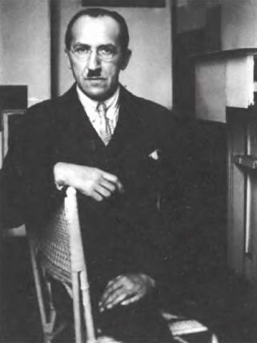
Андре Кёртеш: Пит Мондриан в мастерской, Париж, 1926
«Он ни на что не смотрит; он удерживает внутри себя свою любовь и свой страх — это и есть Взгляд».
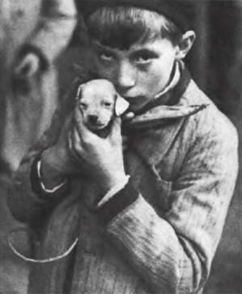
Андре Кёртеш; Собачка, Париж. 1928
Таковой оказалась «судьба» Фотографии: убедив меня, — правда, один только раз из многих тысяч, — что я обнаружил «подлинную тотальную фотографию», она осуществила неслыханное смешение реальности («Это было») и истины («Вот оно!»); она стала констатирующей и одновременно восклицающей, доведя изображение до той точки сумасшествия, когда аффект (любовь, сочувствие, траур, порыв, желание) является гарантом существования. В этом случае она действительно вплотную подходит к безумию, соединяется с «безумной истиной».
47
Ноэма фотографии проста, даже банальна: «это было» не содержит никакой глубины. Как, воскликнут мои критики, написать целую, пусть небольшую, книгу для того, чтобы прийти к тому, что известно нам с самого начала? Да, но подобная очевидность может оказаться сестрой безумия. Фотография представляет собой завершенную, нагруженную очевидность, как если бы она была пародией не на то, что представляет, а на само его существование. Образ, гласит феноменология, это небытие (néant) объекта. В Фотографии постулируется не просто отсутствие объекта, но тем же самым ходом одновременно и то, что этот объект действительно существовал и находился там, где я его вижу. В этом и состоит безумие: ведь до сего дня никакое изображение не могло уверить меня в прошлом вещи иначе, чем через систему посредствующих звеньев (relais); но с появлением Фотографии моя уверенность приобрела непосредственный характер, и никто в мире не способен меня разубедить. Фото, таким образом, становится для меня странным медиумом, новой формой галлюцинации, ложной на уровне восприятия, истинной на уровне времени, галлюцинацией в каком-то смысле умеренной, скромной, разделяемой (с одной стороны, «этого там нет», с другой — «но это там действительно было») безумным образом, о который потерлась реальность.
Я пытаюсь передать особенность этой галлюцинации и вспоминаю следующее: вечером того же дня, когда я еще продолжал рассматривать снимки моей мамы, я вместе с друзьями пошел посмотреть «Казанову» Феллини; мне было грустно, фильм наводил на меня тоску, — но когда Казанова стал танцевать с механической женщиной, мои глаза преисполнились суровой и пленительной зоркости, как если бы на меня вдруг подействовал какой-то необычный наркотик. Каждая деталь, которую я отчетливо видел, вкушая ее, так сказать, в мельчайших подробностях, потрясала меня: тонкость, стройность ее фигуры, как будто под ее плоским платьем было так мало тела; смятые перчатки из белого шелка; немного смешной плюмаж ее прически, показавшийся мне трогательным; загримированное и все же индивидуальное, невинное лицо; что-то отчаянно инертное и в то же время доступное, протянутое, любящее в соответствии с ангельским движением «доброй воли»
9. В тот момент я неотвязно думал о Фотографии, ибо все то же самое я мог бы сказать о фото, которые меня трогали (и которые я методически превращал в саму Фотографию).
Казалось, до меня дошло, что имеется связка (узел) между Фотографией, Безумием и чем-то еще, чье имя мне не было известно. Сначала я назвал это любовными муками. Разве я в конце концов не влюбился в феллиниевский автомат? (Разглядывая снимки обитателей прустовского мира, я влюбляюсь в Жюли Барте, в герцога де Гиша.) Однако, это название не совсем подходило. Волна перехлестывала через любовное чувство. В любви, внушенной Фотографией (отдельными снимками), слышалась другая музыка с немодным до странности названием — Сострадание. В нем я собрал все образы, которые «укололи» меня, ту же негритянку с тонким колье на шее, в туфлях со шнуровкой. Сквозь каждый из них я безошибочно проходил мимо ирреальности представленной вещи, безумно входя в зрелище, в образ, обнимая своими руками то, что уже мертво, то, чему еще предстоит умереть, как Ницше, когда он з января 1889 года в слезах бросился на шею замученной лошади; это сострадание свело его с ума.
48
Общество старается остепенить Фотографию, умерить безумие, которое постоянно грозит выплеснуться в лицо тому, кто на нее смотрит. В своем распоряжении оно имеет для этого два средства.
Первое состоит в превращении Фотографии в искусство, ибо никакое искусство безумным не бывает. Отсюда упорное стремление фотографа соперничать с художником, подчиняя себя риторике картины и «высокому» стилю ее экспонирования. Фотография и вправду может стать искусством — для этого ей достаточно избавиться от присущего ей безумия, предать забвению свою ноэму; тогда ее сущность перестанет на меня воздействовать (или вы думаете, что перед «Гуляющими женщинами» майора Пуйо я вскричу в смятении: «Это так и было»?) В приручении Фотографии принимает участие и кино, по крайней мере художественное кино, то самое, о котором говорят, что оно является седьмым искусством; фильм может быть безумным на трюковом уровне, демонстрировать культурные знаки безумия; по природе же, по своему иконическому статусу он таковым никогда не бывает, будучи прямой противоположностью галлюцинации, просто иллюзией. Кинозрение мечтательно, но не экмнезично (не точно в подражании).
Другое средство образумить Фотографию — это сделать ее общераспространенной, стадной, банальной, так чтобы рядом с ней не оказывалось никакого другого образа, по отношению к которому она могла бы себя маркировать, утверждать свою специфичность, скандальность и безумие. Это и происходит в нашем обществе, где Фотография тиранически подавляет другие виды изображения: нет больше гравюр, фигуративной живописи за исключением той, которая зачарованно подчинилась канону фотографии. Кто-то сказал мне в присутствии других посетителей кафе: «Поглядите, какие мы все блеклые. В наши дни изображения выглядят более живыми, чем люди». Такая инверсия является, вероятно, одной из отличительных черт нашего мира: мы живем по законам обобщенного воображаемого. Возьмем Соединенные Штаты Америки, где все превращается в изображения. Зайдите в порносалон в Нью-Йорке, вы не найдете там никакого порока, только его живые картины (Мэйплторп проницательно использовал их в некоторых своих фотографиях). Можно сказать, что анонимный индивид (ничего общего не имеющий с актером), который там дает себя связать и высечь, получает удовольствие лишь в том случае, если оно связано со стереотипным (избитым) садомазохистическим образом. Наслаждение проходит через образ — такова сущность великой мутации. Такого рода переворачивание неизбежно ставит этическую проблему: дело не в том, что образ аморален, атеистичен или дьяволичен (как некоторые провозглашали его на заре Фотографии), но в том, что, распространившись максимально широко, он — под видом их иллюстрирования — полностью дереализует мир человеческих конфликтов и желаний
10. Так называемые высокоразвитые общества отличает то, что ныне они потребляют образы, а не верования, как это имело место в прошлом, следовательно, они более либеральны, менее фанатичны, но одновременно с этим менее «аутентичны», более «фальшивы» — в современном сознании это преломляется в признании ощущения скуки, тошнотворности, как будто, универсализовавшись, изображения производят мир без различий (безразличный мир), который способен разве что время от времени издавать вопли разного рода анархизмов, маргинализмов, индивидуализмов. Упраздним же изображения, спасем непосредственность (неопосредованность) Желания.
Фотография может быть как безумной, так и благонравной. Она благонравна, если ее реализм остается относительным, смягченным эстетическими и эмпирическими привычками (перелистать журнал в парикмахерской или в приемной у зубного врача); безумна же она, если реализм ее абсолютен и, если так можно выразиться, оригинален тем, что возвращает влюбленному или испуганному сознанию Время в его буквальности; этот в строгом смысле слова отвлекающий маневр, обращающий ход вещей вспять, мне и хотелось бы в заключение назвать фотографическим экстазом.
Таковы два пути, которыми следует Фотография. Выбор остается за каждым из нас: подчинить ее рассматривание цивилизованному коду прекрасных иллюзий или же столкнуться в ее лице с пробуждением неуступчивой реальности.
15 апреля — 3 июня 1979 года
Михаил Рыклин. Роман с фотографией
«Flesh composed of suns?
How can such be?»
Exclaim the simples ones.
R. Browning
В небольшой — сравнительно с литературой о живописи, романе и кино — библиотеке книг, посвященных семиотике и философии фотографии, работа Ролана Барта занимает совершенно особое место. Во-первых, это последняя книга, опубликованная им при жизни; выход «Camera lucida» практически совпадает с трагической гибелью ее автора (25 февраля 1980 г. в самом центре Парижа, недалеко от Коллеж де Франс, Барт попал под машину, а 27 марта того же года скончался в больнице Питье-Сальпетриер). Во-вторых, эта книга написана в совершенно необычной даже для создателя политической семиологии тональности — биографические обстоятельства ее написания определяют ее построение в большей мере, чем какие-либо теоретические соображения: она развивается не только (и даже не столько) как феноменология фотографии, но прежде всего как симптом, блокируемый конкретной фотографией конкретного, любимого человека (умершей в 1977 г. матери автора, Генриетты Барт). Исследование фотографии, автобиография и работа траура связаны в этой работе настолько тесно, что, разводя их, мы рискуем утратить контакт с текстом, работающим во всех этих регистрах одновременно и порождающим специфические, часто теоретически непредусмотренные эффекты.
Барт прекрасно понимает, что причина невиданного распространения фотоизображений в обществах потребления коренится в их независимости от производителя — фотограф всего лишь создает условия процесса, который является «оптико-химическим». Вездесущность фото неотделима от его механического происхождения. За полтора века своего существования фотография радикально изменила условия функционирования системы традиционных искусств. Поэтому когда ей, наконец, был дарован статус искусства, фотография тут же поставила его под сомнение.
С ее легкой руки подлинное искусство стало отождествляться с тем, что наиболее радикально подрывает цели традиционного искусства; ценностью отныне наделяется не искусство как таковое, а уникальный момент, когда неискусство становится искусством. Причем нет никакой возможности это мгновение растянуть. Искусство в невиданной прежде степени связывается с массовым потреблением. «Обучая нас новому визуальному коду, — пишет в книге „О фотографии“ Сьюзен Зонтаг, — фотография изменяет и расширяет наши представления о том, что достойно быть замеченным и за чем мы вправе наблюдать. Она представляет собой грамматику и, что еще важнее, этику визуального восприятия. Грандиознейшее достижение фотографии заключается в создании у нас впечатления, что мы можем удерживать в голове весь мир как антологию фотоснимков.
Коллекционировать фотографии значит коллекционировать мир. Киноленты и телепрограммы начинаются и кончаются… а изображенное на фото — легкий, дешевый, без труда переносимый, собираемый и хранимый объект — остается»
1. Опыт общения с миром впервые может быть упакован в альбом, расположиться на поверхности изображения. Альбомы не только сплачивают семьи, но и, например, облегчают полиции поиски преступников. Промышленное использование фотографии рационализует процессы управления; без фотографии на документах неполна бюрократическая каталогизация мира
2.
Фотография кладет начало цепной реакции распространения средств массового воспроизведения, этапами которой являются массовая пресса, радио, кино, телевидение, видео, компьютер. Если принять фотографию за элементарную форму, клеточку этого процесса, то можно сказать, что она открывает новую эпоху, строящую принципиально иные отношения со смыслом, временем, историей. Особенность подхода Барта состоит в том, что он заключает в скобки социальные аспекты фотографии; устремляясь на поиски сущности (ноэмы) фото, он радикально отделяет этот вид изображения от других, прежде всего от кино, литературы и живописи. Он ищет в фотографии не сходное, а уникальное, неповторимое, сколь бы банальным оно ни казалось. Культурные обертоны в «Camera lucida» служат не более чем прологом к идиосинкратическому, личному видению фотографии, чуждому диалектике и опосредованию. Если Беньямин, Зонтаг и другие теоретики фото берут его в историческом контексте, во взаимосвязи с другими видами технического воспроизведения, то Барт настаивает на уникальности отношения фотографии к смерти, на ее связи с тотемным театром, с магией, с хокку, с тем, что массовому воспроизведению не поддается. Впрочем, и ноэматический слой текста французского семиолога не является самым глубоким — за интересом к эйдосу Фотографии как таковой скрывается одержимость одной-единственной фотографией. Барт видит в фотографии лишь бесконечное разбухание референта, проявляя безразличие к ее культурной стороне, снисходительно именуемой им studium, и к тому, что стремится вложить в нее сам фотограф (и что, конечно, значительно шире фотографии с точки зрения Operator'a, сводимой к недоступным Барту чисто техническим аспектам съемки). Особенно его раздражает стремление отдельных фотографов к «совершенству», трактуемое как заведомая фикция — не случайно в книге ни разу не упомянут наиболее яркий представитель перфекционизма в фотографии, американец Эдвард Уэстон. Безукоризненность освещения, изощренность композиции, точность фокусировки и совершенство печати не имеют для него сколько-нибудь существенного значения. Барт вносит в свое исследование непрогнозируемый фактор страдания, работы скорби, что делает его небольшую книгу уникальной даже в тех местах, где он, казалось бы, ограничивается повторением известных вещей, наработанных традицией. Все эти совпадения обволакиваются непередаваемым настроением, тем, что Ницше обозначал словом Stimmung. Там, где другие авторы видят важные культурные изменения в их начальной стадии, готовой передать эстафету другой, более продвинутой системе изображения, Барт помещает ничем не опосредованную смерть, отделенную непроницаемой стеной от таких проявлений жизни, как литература, кино, живопись. Его интересует не то, что культурно объединяет эти виды искусства, но то, что разъединяет их ноэматически, т. е. непоправимо. В «Светлой камере» Барт создал кентаврическии жанр, в рамках которого вопрос о смысле обречен на бесконечность повторения. Даже когда текст Барта непроизвольно «выносит» на просторы культурологии, далеко за пределы амплуа Spectator'а, на которое он добровольно себя обрек, уникальность, единственность связи фотографии со смертью не подвергается сомнению. В отличие от романа Пруста, где каждый вид знаков (светские знаки, знаки любви, знаки искусства) вступает в собственные отношения со смертью, Барт наделяет этой привилегией только одно реле: фотографию. Для романа проект Барта слишком систематичен; он не хочет уступить вымыслу ни грана своего страдания, повторив основной жест романиста— превращение собственного страдания в несобственное. Не прибегая к спасительной силе вымысла, Барт остается автором и героем своего текста одновременно. В этом ему помогает недиалектичность фотографии, возносимая на недосягаемую высоту. В результате ее скромное безумие приобретает черты Безумия как такового. Со смертью фотографию связывает реле, которое в культуре соединяет ее также с кино, видео, компьютерными изображениями и другими формами виртуального. Замкнув фотореле на смерть, Барт лишает себя возможности задействовать его еще раз. Тем самым катарсис становится невозможным. Смерть без катарсиса — единственное, что остается на меланхолической стадии отождествления с утраченным объектом.
Сьюзен Зонтаг оставила ценное свидетельство— желание Барта (высказанное им за полтора года до смерти, во время пребывания в Нью-Йорке) написать «настоящий» роман: «Как у Пруста» — добавил он, чтобы рассеять у аудитории последние сомнения. Вот точная цитата: «Будучи полтора года назад в Нью-Йорке, Барт во всеуслышание с еще неокрепшей решимостью заявил, что собирается написать роман. Не роман, которого можно было бы ожидать от критика, на мгновение превратившего Роб-Грийе в центральный персонаж современной литературы, или от писателя, чьи самые поразительные книги, „Ро-лан Барт Ролана Барта“ и „Фрагменты любовного дискурса“, стали торжеством модернистской прозы… когда вымысел тесно переплетён с интеллектуальной эссеистикой и автобиографической открытостью, а все произведение скорее напоминает разрозненные заметки, нежели тщательно выстроенное повествование. Нет, не модернистский — „настоящий роман“, сказал он тогда. Как у Пруста». Чтобы полностью посвятить себя написанию этого романа, Барт подумывал оставить кафедру в Коллеж де Франс. «Смерть матери за два года до этого, — продолжает Зонтаг, — стала для него страшным ударом. Он вспоминал тогда, что Пруст смог начать „В поисках утраченного времени“ лишь после смерти матери; характерно, что такую нужную ему силу он надеялся почерпнуть в глубокой скорби»
3.
Написать «настоящий роман» французскому литературоведу так и не удалось — работа траура проявилась у него совершенно по-другому, чем у Пруста. Скорее всего, «Светлая камера» была той формой, в которой он реализовал стремление написать роман, формой, конечно, куда ближе стоящей к «Фрагментам любовного дискурса», чем к «Поискам», но вместе с тем пропитанной огромным количеством связанных с романом Пруста реминисценций и переплетений, вплоть до бессознательного цитирования и уподобления. Этот небольшой восьмидесятистраничный текст является «романом с фотографией» в двух разных, хотя и пересекающихся, смыслах. Первый смысл очевиден: это роман Барта с фотографией как видом изображения, поиск ее природы, ноэмы, эйдоса. О своем желании докопаться до сути фотографии автор заявляет с самого начала, предупреждая читателя, что опираться он собирается исключительно на свой личный опыт разглядывания фотографий, а не на предвзятые теории. Второй смысл, в каком «Camera lucida» является «романом с фотографией», неявен и проявляется постепенно, достигая своего апогея во второй части книги, в эпизодах рассматривания Фотографии в Зимнем Саду, возвратившей ему подлинную сущность умершей матери в ее детском снимке. Сначала кажется, что нежелание Барта редуцировать свой опыт чтения фотографий к общим рассуждениям о Фотографии обусловлено всеобщими методологическими соображениями (в пользу этой гипотезы говорит вся предыдущая работа Барта в области политической семиологии: подобное нежелание декларировалось им неоднократно и даже стало своеобразной визитной карточкой Барта-семиолога). И лишь во второй части книги выясняется, что причина этого нежелания не ограничивается сферой всеобщего и даже в ней не зарождается — она глубоко экзистенциальна, связана с утратой нежно любимого человека, матери автора. Впрочем, уже тональность первой части позволяет догадываться, что интерес Барта к фотографии не является простой демонстрацией метода.
Вчитайтесь в то, как резко разводит он культурный, «вежливый» интерес к фотографии, studium, и «уколы»; закодированные точки, которые спонтанно, не пройдя через культурные фильтры, атакуют глаз, знаменитые punctum'ы. Вторым не просто отдается теоретическое предпочтение, они инвестируются желанием необычной интенсивности, природа которого раскрывается только во второй части книги. Сила желания придает punctum'y небанальную амбивалентность. Сначала утверждается, что punctum фотографии обнаруживается мгновенно, при первом же просмотре он как бы «выпрыгивает» из фотографии навстречу взгляду. Потом (на примере фотографии семейства чернокожих американцев) выясняется, что punctum может быть обнаружен значительно позже, что он не исключает «латентного периода». Бывает, что punctum остается виртуальным, так никогда и не будучи обнаруженным (у изображенного на одном из фотопортретов Мэйплторпа Боба Уилсона есть неустановленный punctum). Впрочем punctum'ом может оказаться все тело, бесконечное количество испускаемых им точек, как в Фотографии в Зимнем Саду, где тело матери-ребенка обретается — «on retrouve», знаменитый прустовский термин — сразу, целиком, без какого-либо посредства культуры.
Впрочем, Барт всегда избегал однозначности и примешивал к чистоте объявленного метода аллогенные элементы или намеренно задействовал сразу несколько методов (например, в «Мифологиях» он опирался на соссюровскую лингвистику, экзистенциализм Сартра и марксистскую критику идеологии). В таких книгах, как «Фрагменты любовного дискурса» и «Ролан Барт Ролана Барта» критический и аффективный языки также переплетались достаточно тесно. И тем не менее, с «Camera lucida» связан прецедент — аффективный язык в ней впервые систематически доминирует над критическим (хотя это эпистемологическое преимущество обосновывается лишь отчасти и, конечно, связывается с ноэмой фотографии). Поглощенный работой траура меланхолик не до конца уверен, жив он или мертв, ему временно закрыт доступ в сферу, где образуются подобные различения. Он находится за пределами конституированного смысла, который в конечном счете участвовал в построении всех его предыдущих проектов, независимо от степени их авангардизма. В работе о фотографии мы присутствуем при нескольких попытках смысла конституировать себя, попыток, в результате неудачи которых «плохой объект», фотография, наделяется демоническими чертами, намертво сцепляется с референтом, помещается то в абсолютное прошедшее (аорист), то в предвосхищенное будущее время. Но «плохой объект» оказывается на свой лад невиданно прекрасным; банальная, замороженная в конкретном мгновении прошлого, асимволичная фотография все же удерживает внешние черты любимого существа, в ней его можно «обрести» (хотя и без катарсиса, на который способны литература, живопись и даже кино, связанные с реальным протеканием времени).
Несмотря на интерес к фотографии, моде, опере, прессе и спорту, Ролан Барт был прежде всего носителем филологической, литературной культуры. Даже на пике своего страдания люди не перестают принадлежать тому, что срабатывает на бессознательном уровне — просто в стрессовых ситуациях безжизненный, лишенный патетики скелет взрастившей их культуры обнажается, проступает наиболее явно. Фотография уже фактом своего неконтролируемого тиражирования, беспредельного распространения радикально меняет условия функционирования филологической культуры (причем главным орудием изменения является не агрессия, а невозмутимая нейтральность фотографии по отношению к унаследованной культуре). Барт тонко чувствует это обстоятельство и постоянно его обыгрывает; в результате его «роман с фотографией» обрастает ироническими и трагическими коннотациями. Если роман с ноэмой фотографии не может состояться по причинам структурного порядка, — эта ноэма непереводима в наррацию и тем самым непостижима, — то Фотография в Зимнем Саду подвержена лишь бесконечному стерильному разглядыванию; отчаянные попытки ее увеличить лишь обнажают «зерно», «истина любимого лица» открывается сразу, без специального усилия (если не считать, конечно, работу траура), но все последующие усилия ее «углубить» терпят фиаско. Общение с Фотографией, несмотря на необычайную интенсивность, так и не достигает уровня знака; отождествление с утраченным объектом, ставшим телом-punctum'ом, не «отрабатывается» (еще один термин, который психоанализ похитил у диалектики), а лишь способствует усугублению первоначального одиночества.
Только в профетическом измерении симптома демонизм фотографии приобретает абсолютный характер. Исторически он далеко не абсолютен — лишь на какой-то момент этот способ изображения принимает на себя функцию ангела-истребителя, «киллера» традиционных систем репрезентации. Но и фотография в свою очередь оказалась беззащитной перед манипуляцией с ее беспредельно раздувшимися, разбухшими референтами — сначала с помощью ретуши (применявшейся как в эстетических, так и в политических целях), а затем посредством компьютера, возводящего возможности ретуши в значительно более высокую степень. Ограничивая фото ноэмой «это там было», «оно прикасалось к пластине своими и только своими лучами — в тот самый момент», Барт уклоняется от рассмотрения этих манипуляций. Он сознает себя последним, запоздалым свидетелем явленного фотографией чуда — буквального донесения до нас мельчайших телесных аспектов прошлой реальности, ее омертвления в вечном настоящем. И хотя на месте «это там было» уже достаточно давно простирается напряженная пустота, в которую — особенно в компьютерную эпоху — можно втиснуть практически любой воображаемый референт (и, будучи втиснут, «он там будет»), французский семиолог закрывает на эти «трюки» глаза, сосредотачиваясь на том, что представляется ему сущностным, главным. И это понятно. Какую бы роль тонкости печати, ретушь и компьютерная обработка ни играли в инсценировке конечного откровения референта, логика скорби, работа траура не имеет к ним ни малейшего отношения. Герой книги Барта с трепетом берет в руки уникальную драгоценность, эманацию сущности любимого существа, которое он уже утратил и продолжает непрерывно утрачивать в виде обретенного образа. («Значит я терял ее дважды: в ее уходе из жизни и в ее первом фото, ставшем для меня последним; однако в последнем случае все менялось местами, и я наконец обретал ее такой, какой она есть в себе…», т. е. терял уже обретенной в недоказуемой истине своего существа.) Автор заставляет нас физически почувствовать, как обладание драгоценной мнимостью постепенно оборачивается для него перманентной мукой; как очарованность несуществующим заставляет приписывать ему ни с чем не сравнимую ценность и одновременно низвергаться вместе с ним в бездну собственного небытия, своей предвосхищенной смерти: «Мне не оставалось ничего другого, как ждать тотальной, неподверженной диалектике смерти», — признается нарратор. А после нее, печально добавляет он, кто-то возможно выкинет Фотографию в Зимнем Саду, создававшую пространство его одиночества, в мусорную корзину, настолько малый интерес представляет она для возможного Другого, настолько бессмысленно ей с кем-то делиться (Фотография в Зимнем Саду в книге, конечно же, не воспроизводится).
Роль свидетеля неактуального, которую берет на себя автор «Светлой камеры», не случайна — именно отрефлексированная неактуальность его взгляда придает книге особый интерес. Меланхолия лишь оттеняет то обстоятельство, что люди принадлежат не столько современности (в том виде, в каком она маркируется здравым смыслом), сколько времени куда более раннему, времени своих первых воспоминаний, и состояние сущностного одиночества лишь заставляет эти подлинно соприродные человеку мысли проявиться, выступить наружу; подобно тому как первые дагерротипы запечатлялись на покрытых раствором серебра пластинах. Поэтому история фотографии не может существовать для ее последнего свидетеля; время коллапсирует в ней, она лишена истории, в которой усматривался бы хоть какой-то намек на развитие. Фото ценно слепыми пятнами, уколами, punctum'ами, тем, что непроизвольно «вылетает» из него навстречу взгляду — что смотрящий, не преминет заметить скептик, вносит в нее от себя — «вылетает», беря под сомнение очевидную для историков фотографии идею мастерства, ставя случайного любителя на одну доску с великим профессионалом (глубокая филологическая культура Барта, впрочем, и здесь дает о себе знать — он делает исключение для Надара, Аведона и немногих «великих портретистов», как бы поставивших себя в особые отношения с punctum'ом, т. е. со смертью, разгадавших ее «код»). Фотография придает смерти все внешние признаки жизни, поэтому ее можно рассматривать бесконечно без надежды ее углубить. Она бесконечна в своей мгновенности, но в качестве образа, отменяющего, декодирующего все другие образы, она принадлежит истории; к настоящему моменту революционные последствия ее изобретения полностью впитались в ткань социума, а к ее безумию настолько привыкли, что его просто не замечают. Появились изображения (прежде всего компьютерного происхождения), которые играют по отношению к фотографии ту же самую декодирующую роль, какую сама она сыграла в отношении картины, рисунка, гравюры. Любопытно, что книги Зонтаг, Фрейнда, Барта, настаивающие на вездесущности фотографии, на ее демоническом, фальсифицирующем любые основания всеприсутствии в культуре потребления, появляются во второй половине 70-х гг., когда этот способ изображения приобретает вторичные признаки маргинальности (выражающиеся в числе прочего в фальсификации ее референтов при компьютерной обработке в масштабах, которые и не снились кустарям-ретушерам). Утратив часть своего демонизма в культуре в пользу демонов более сильных, фотография окончательно обрела его в воспоминании; возможно именно исчерпанность ее актуальных проявлений оставляет нас наедине с ее ноэмой, придает ее продуктам ностальгический и одновременно антикварный статус. В этом плане работа траура завершает работу истории, ставит в ней последнюю точку.
Огромная масса фото производится с целью установления гражданской идентичности, в том числе миллионами расставленных в метро, на вокзалах, в аэропортах автоматов, превращающих, по словам Барта, лицо человека в физиономию разыскиваемого полицией преступника. Со временем у людей развился инстинкт фотографирования; сам этот акт стал настолько привычным, что позу часто просто «забывают» принять. То, что мама Барта делала из органически присущего ей чувства такта и скромности, «позволяя» себя фотографировать и не принимая при этом позы, другие люди делают из безразличия.
Некоторая демократизация неизбежна и в случае punctum'a. Если желание одного вправе инвестировать себя во фрагменты фотографии, получающие тем самым особый статус, в том же нельзя отказать желанию другого. Число punctum'ов любой фотографии оказывается в таком случае потенциально бесконечным, что неизбежно приводит к инфляции. Кроме того, спонтанность некоторых «уколов» воспроизводится в качестве таковой, будучи результатом повторения; на уровне бессознательного эти punctum'ы опосредуются глубокой филологической культурой автора «Camera lucida»: колье на шее негритянки на фотографии Ван дер Зее наносит укол потому, что напоминает о другом колье, принадлежавшем провинциальной тетушке Барта, старой деве, похожей на прустовскую тетю Леонию, чьей служанкой была Франсуаза; punctum фотографии королевы Виктории также культурно опосредован, пропущен сквозь фильтр «викторианства»; жанр фотографии в зимних садах также имеет давнюю традицию (анализ детского снимка Кафки на фоне пальм есть в «Краткой истории фотографии» Вальтера Беньямина), налагающуюся на уникальность бартовской Первофотографии. Депрессия оставляет нас наедине с наиболее архаическими пластами нашего воспитания, работающими в автоматическом режиме, совершающими опосредования как бы независимо от нас; в таком состоянии любая цитата неизбежно оборачивается эманацией нашей собственной сущности. Бессознательное не умеет цитировать— в этом его сходство с фотографией. Эти два вида бессознательного (оптическое и психическое) связывает уже Беньямин: «Ведь природа, обращенная к камере, — это не та природа, что обращена к глазу; различие прежде всего в том, что место пространства, освоенного человеческим сознанием, занимает пространство, освоенное бессознательным». И далее: «Об этом оптически-бессознательном он (рассматривающий фото субъект. —
М.Р.) узнает только с ее помощью, так же как о бессознательном в сфере своих побуждений он узнает с помощью психоанализа»
4. Общим для punctum'a Барта и оптически-бессознательного Беньямина является их нерукотворность, но немецкий теоретик, в отличие от французского семиолога, наделяет бессознательное мощным освобождающим потенциалом, блокирующим тотальное отождествление с утраченным объектом. Невосполнимость потери погружает нас не в непосредственное как таковое; напротив, она делает непосредственными наиболее привычные опосредования, которые мы, находясь в таких состояниях, повторяем с упорством марионеток. Фотография с ее особым отношением к бессознательному — отличная метафора первичного процесса, который с помощью punctum'ов замыкается на самом себе — заручается необходимым ему алиби одиночества. Не случайно в Фотографии в Зимнем Саду нет локализуемого punctum'a, им становится любая точка обретенной сущности. Стерильность этого рода инвестиций определяется тем, что все точки пробегаются мгновенно, и следующее мгновение бессильно что-либо добавить к предыдущему. Отсюда невозможность катарсиса и его современного аналога, трансфера; они блокируются безнадежным избытком присутствия. Тело-punctum, — увы! — (сколько десятков раз употребил Барт это междометие в «Camera lucida»?!) обретается как всегда-уже утраченное, в настоящем прошедшем времени.
Зонтаг проницательно подметила связь фотографии, влюбленности и мгновения, с одной стороны, и понимания, неприятия внешнего и протекания во времени, с другой: «Фотография подводит нас к мысли о том, что мир известен нам, если мы принимаем его в таком виде, в каком он запечатляется фотоаппаратом. Но такой подход противоположен пониманию, которое начинается с неприятия мира, как он нам непосредственно дан… Фотография заводов Круппа, заметил как-то Брехт, ничего не говорит нам об этой организации. В противоположность отношению влюбленности, основывающемуся на том, как некто выглядит, основой постижения является то, как нечто функционирует. Функционирование же протекает во времени и во времени должно быть объяснено. Поэтому постигнуть нечто мы можем исключительно благодаря повествованию»
5.
Барт прекрасно это понимает, придавая «роману с фотографией» более привычную и надежную форму письма. Составив из бесконечного множества punctum'ов обретенную сущность матери-девочки, столкнувшись с непродуктивной стерильностью этой сущности, он делает ее предметом повествования, повествования о невозможности повествования. В отличие от неуступчивого аутизма фото, письмо всегда содержит в себе достаточно возможностей для опосредствования и постижения; его терапевтическая функция неотделима от присущего письму дара трансцендирования любого конкретного тела и обретения его в уже трансцендированном виде (в этом, по Прусту, заключается «легкость» знаков искусства). Сущность любимого существа обретается в «Camera lucida» дважды: в первой фотографии она обретается как уже потерянная, утраченная («я потерял свою маму дважды — в ее смерти и в ее первой фотографии, последней для меня»), и в последней книге о первой фотографии, где она обретается как обретенная. Только в последнем смысле «роман с фотографией» действительно состоялся. Он состоялся, став текстом. То, что бессильна была сделать фотография, оказалось под силу литературе, даже если для достижения своей цели эта последняя запаслась такими необычными алиби, как спонтанность, непосредственность, мгновенность.
«Светлая камера» является редким исключением еще в одном отношении — она посвящена другой книге, «Воображаемому» Сартра. Это посвящение не лишено трагических обертонов. В «Воображаемом» предпринимается попытка систематически отделять перцептивный пласт сознания, основанный на восприятии реального объекта, от воображаемого, неразрывными узами связанного с «ничто». Сартр упорно противостоит тому, что он называет «иллюзией имманентности», представлению о принадлежности объектов воображаемого сфере сознания. «Картезианское сознание сохраняет свои права, — пишет он, — даже над психопатами. Но объект воображающего сознания внешен ему по своей природе. Если я формирую воображающее сознание Пьера, Пьер привносит с собой ирреальное пространство, и хотя он позирует перед сознанием, он является внешним ему»
6. Воображение не только не конституируется сознанием, но, напротив, лежит в основе его возможности. Сартр отказывает фото в способности нечто «оживлять» (эта тема варьируется у Барта постоянно), а тем более воспринимать. «Если я воспринимаю Пьера на фотографии, то потому, что я сам его туда помещаю»
7. Фотография, по Барту, раз и навсегда стирает границу между восприятием (перцепцией) и воображаемым, неопределенно долго задерживая нас в промежуточной зоне (в зоне псевдоперцепции). Это зона напряженного и стерильного восприятия
ничто, перцепции воображаемого. Превращаемая в траур письма скорбь радикально меняет статус реального. Из основания перцепции и базисного доверия реальное становится воплощенной невозможностью, другими словами, занимает то место, которое отводится этой инстанции в текстах Лакана. Неведомый Сартру психоз реальности неизбежно проходит через реле воображаемого, тем более опасное, что оно сохраняет все внешние атрибуты перцепции, по сути не имея с ней ничего общего. Сартр знал, что восприятие Пьера на фотографии фундировано им самим. Он избегал размещать на поверхности невозможного референта, который изнутри самой фотографии давал бы о себе знать с помощью punctum'ов. Его письмо подчинялось только правилам феноменологии, но не логике симптома, которая создает пространство неопределенности, где наиболее нагружена реальностью именно иллюзия. «Пьер» Сартра не является утраченным любимым человеком, это такой же грамматический пример, как «Сократ смертен», заменяемый в случае нужды на аналогичный. Но не таков, как мы знаем, чудесным образом «обретенный» референт Фотографии в Зимнем Саду: если его там нет или, что одно и то же, он помещен туда произвольно, то нет и высшей ценности страдания, работы скорби, заставляющей по-иному взглянуть на Фотографию вообще. Говоря о «непринужденности» своей феноменологии, о нежелании редуцировать свои эмоции, Барт делает выбор между правильным и личным— в пользу последнего. Он расширяет категорию любимых утраченных объектов (мать Пруста; бабушка Марселя, героя «Поисков»; мать Казановы, функции которой принимает на себя знаменитый феллиниевский автомат; мать или жена Надара) до частичных объектов, непроизвольных жестов и редких человеческих качеств (короче, до punctum'ов), вместо того чтобы растворить ее в безличных законах восприятия. Собственное страдание подвигло знаменитого основателя политической семиологии на акт магии, оставив его наедине с Фотографией в Зимнем Саду и с длинным рядом непроизвольных культурных ассоциаций. Он ушел в сущностное одиночество литературы и стерильное одиночество разглядывания снимков, не веря, что ему удастся наделить скорбь культурными знаками траура («Говорят, что постепенная работа траура мало-помалу устраняет боль; я не верил и не верю в это, ибо в моем случае Время стирает связанную с утратой эмоцию (я не плачу) и больше ничего. Все остальное остается охваченным неподвижностью,» — признается Барт). Возможно, наши представления о катарктичности письма преувеличены; само по себе оно не исключает ни чрезмерного отождествления с утраченным сверхценным объектом, ни вытекающей из этого депрессии. Причем целительность этого фармакона в принципе неотделима от его ядовитости. Поскольку «Светлая камера» является романом с Фотографией как таковой, отрицать присущую ей силу опосредования невозможно, даже если этот результат автором не планировался. Но в той мере, в какой она является романом с конкретной Фотографией, в ней навсегда сохранится запас непереработанной скорби (скорби, не ставшей трауром); в этом смысле перед нами роман без фабулы, невозможный роман, не уступающий наррации ни грана своей энергии. С обретением матери через фото связано, как уже говорилось, не преодоление, а удвоение утраты, противоположность катарсиса (я намеренно не говорю о трансфере, чтобы блокировать непродуктивную в данном случае аналогию с психоанализом; мы имеем дело скорее с его парадоксальным двойником, автопсихоанализом, техникой бесконечно более древней, чем примененная Фрейдом, и гораздо менее предсказуемой). Странным образом Барт по ходу повествования все яснее осознает, что punctum'ы считываются не им, а его скорбью, и что иной тип утраты дал бы совершенно другой расклад punctum'ов или привел бы к иному типу изживания травмы (здесь он приближается к тезису Сартра, и посвящение одной книги другой получает дополнительное измерение)
8. Герой «Camera lucida», которого стоит отличать от автора-режиссера и от простого субъекта симптома, в конечном итоге строит из многочисленных, казалось бы бессистемных уколов, рвущихся навстречу его взгляду из конкретных снимков, болезненно родное тело-punctum, чья эфемерность исключает диалог или углубление — ничего кроме непродуктивного, растянутого в мгновении отождествления. Оно наделяется при этом такой сверхценностью, что затмевает другие качества фотографии как сферы «оптически-бессознательного» (пренебрежительно перечисляются «гражданская идентичность», «порода» и т. д.).
Не исключено, что обычный роман
9 обеспечил бы более глубокое изживание травмы — возможно, впрочем, как полагает Сартр, сам импульс к его написанию был бы свидетельством уже состоявшегося изживания — однако мы лишились бы текста с поистине уникальными литературными достоинствами, текста вне жанров, в котором смерть играет столь существенную роль, что постоянно блокирует его становление повествованием; текста, написанного автором под диктовку загробной внелитературной инстанции, тела-punctum'a, которое так до конца и не удалось сделать предметом литературы. Семиотическая искушенность Барта, весь его опыт работы с языком в качестве литературоведа, критика, культуролога, не могли бы не воспрепятствовать написанию «настоящего романа», совершенно отличного по духу от тех, что уже были им написаны («Фрагменты любовного дискурса», «Империя знаков», «Ролан Барт Ролана Барта»). Это, впрочем, не значит, что несущественна сама потребность Барта написать после смерти матери «настоящий роман». Она значима независимо от ее реализуемости; мы обязаны уважать ее как обещание, более того, она удовлетворена, сдержана в самом факте обещания
10. Отблеск этого обещания есть и в «Camera lucida», в том ее месте, где, ссылаясь на пример Поля Валери, автор упоминает о желании посвятить маме сборник текстов, написанных «для меня одного». Возможно, книга выросла из этого сборника, когда его автор обнаружил, что натолкнулся на некий абсолютный предел, что по мере описания любимое существо становится более неописуемым — тогда и возникла фотография как вместилище безнадежной любви.
Во всяком случае «настоящий роман» в описании Зонтаг представляется антиподом «Светлой камеры», единственной книги, написанной после того, как Барт дал свое обещание. «Он отчаянно любил жизнь, — пишет С. Зонтаг в эссе „Вспоминая Ролана Барта“, являющемся некрологом, — и ненавидел смерть; он как-то сказал, что его будущий роман должен стать самым настоящим восхвалением жизни, благодарностью за то, что он живет на земле»
11. Получилось нечто если не противоположное, то иное, и если американская писательница считает «Фрагменты любовного дискурса» «очень грустной книгой», то насколько же печальнее «Светлая камера» с ее бесконечными «увы!», скобками, многоточиями и другими стилистическими признаками грусти. «Восхвалению жизни», сдержанному в качестве обещания, соответствует текстуальная невозможность сдержать смерть в ее существенных проявлениях; из всех известных мне литературных произведений «роман с фотографией» является в наибольшей мере романом со смертью. Трудно представить себе что-то менее филологическое, менее поддающееся риторической экспансии, чем тело-punctum, чья неизменная превосходная степень является эквивалентом молчания. Местами создается впечатление, что автор задумал поставить любимому человеку негативный памятник, прославляющий его отказом переводить скорбь в траур и тем самым удержанием ее в чистом виде (по-другому аналогичного эффекта добился Морис Бланшо в «Мгновении моей смерти», написанном много позже). Фрустрация литературы оборачивается триумфом текста, в сердцевине которого зияет пустота и светится тело-punctum. Барт тщательно изгоняет из книги Время в его протекании и все искусства, вступающие с ним в компромисс (запрет распространяется не только на литературу, но и на кино
12), чтобы еще и еще раз привлечь внимание к сущностной неподвижности ноэмы фотографии, к напряженной непостижимости события смерти. В более ранних эссе Барта, связанных с фотографией (достаточно вспомнить известные русскому читателю по книге «Мифологии» эссе «Актер на портретах Аркура», «Фото-шоки» и «Предвыборная фотогения»), нет никакого намека на ноэму фотографии, отделяющую ее от кино, телевидения, клипов, рекламы и т. д. Вместе с тем открытие Фотографии в Зимнем саду состоялось до начала работы над «Camera lucida», и хотя композиционно автор настолько искусен, что на протяжении всей первой части книги держит читателя в неведении относительно сделанного им открытия (сохраняя объективность, он стремится убедить нас, что его интерес к фотографии имеет познавательный характер), драматическое нарастание punctum'ов к концу первой части готовит нас в тому, что контакт с Первофотографией, post factum объясняющей природу всех других фотографий, уже состоялся. Впрочем, смысл этого контакта раскрывается лишь постепенно: от эи-форического момента открытия («вот оно!») до изматывающей стратегии разглядывания, попыток увеличения и отката к полной стерильности жизненно важной связи с любимым существом.
Под влиянием фотографии современные общества потребляют прежде всего изображения; в порношопах Нью-Йорка порок присутствует исключительно в виде движущихся и неподвижных образов порока, он уже не связан с трансгрессией. Возрастающая техническая воспроизводимость изображений лишает смысла древний вопрос о подлинных образах (эйдосах) и их ложных подобиях (симулякрах): последние обладают даже большим числом достоверных черт, чем первые, и скоро их можно будет выделять из совокупности образов именно по этому признаку — они реальнее вещей, общим понятием которых служили эйдосы. То, что какое-то тело прикоснулось к тем или иным образам «своими собственными лучами», оставив на них нечто вроде запоздалой ауры, будет способствовать восприятию этих образов как архаических и несовершенных по сравнению с движущимися образами, а тем более с теми, которые даны в реальном времени. Фотография стоит у истоков дереализации мира, пределы которой пока не определились (если это вообще возможно). Случившееся в прошлом соприкосновение лучей и пластины (пленки), замороженное в вечном настоящем, придает иной смысл истории. Она перестает органически связывать людей с прошлым с помощью разделяемого мифа — отсюда судорожное стремление тоталитарных режимов создавать мифы не только насильственным, но и искусственным путем. Эти мифы, впрочем, быстро разлагаются на составляющие, обрекая бывших «новых людей» на бесконечность дробления, именуемую индивидуацией. «Отъединяйтесь» — вот последний императив, которому должны следовать обитатели обществ изобилия. Свою скромную роль играет в этом и фотография: разбухание референта запускает механизм отъединения (Барт пишет по этому поводу об «эпохе асимволической смерти»), который получает дальнейшее развитие в других видах технически воспроизводимых изображений. Снимки — это школа одиночества, а поскольку большинство людей старается быть одинокими сообща, как бы выполняя новый социальный ритуал, движущиеся образы потребляются в существенно больших количествах, способствуя формированию все новых и новых масс. Некоторые фотографии в климате, определяемом электронными средствами массовой информации, приобретают вторичные признаки «живописности». Чаще всего такие эффекты возникают спонтанно. В 1967 году боливийские власти передали прессе сфотографированный труп Че Гевары: революционер лежал на носилках на вершине цементной тумбы в окружении боливийского полковника, агента ЦРУ, солдат, журналистов. Снимок имел неожиданное композиционное сходство с двумя известными картинами: «Мертвым Христом» Мантеньи и «Уроком анатомии профессора Тульпа» Рембрандта, что несомненно способствовало его мировой известности. «Действительно, то, в какой мере этот снимок незабываем, указывает на его потенциальную способность деполитизоваться и стать вневременным образом»
13.
Эти и подобные им аналогии необходимо возникают, если мы понимаем фотографию слишком узко, как художественную фотографию, а тем более считаем эту ее ипостась основной. На самом деле фотография, подобно языку, является «средой» (выражение Зонтаг), в которой возникают произведения искусства, а также многое другое. Язык можно превратить в научное выступление, любовное письмо, дипломатическую шифровку и «Париж» Бальзака. Фотографию также можно превратить в снимок в паспорте, метеорологические фото, рентгеновские снимки, порнографические снимки и в «Париж» Атжэ. Фотография как таковая не является искусством, хотя работы отдельных мастеров соответствуют критериям художественности, характерным для той или иной эпохи. Если литературой в приведенном списке мы называем тексты Бальзака и редкие любовные письма, вошедшие в эпистолярные романы, то все виды фотографии одинаково существенны как формы ее проявления. Фотография вызывает у старых искусств новые притязания, способствуя инфляции самого понятия искусства и его трансформации в простое орудие коммуникации. Хотя было бы явным преувеличением утверждать, что она постоянно играет в этом процессе доминирующую роль; более технологичные формы изображения (например, реклама) используют фотографию как средство для решения задач, формулируемых на их собственных «языках».
Барт отрицал за фотографией способность к социальной критике. Однако практически одновременно с публикацией «Camera lucida» в Нью-Йорке сформировался «критический постмодернизм», работавший прежде всего на фотографическом материале. Критика посткапиталистических политик репрезентации велась его представителями изнутри и ставила своей целью вскрыть способы репрессии, которые лежали в их основании (например, образование независимого означающего в рамках целостного образа; наделение автора статусом первоисточника своего произведения; логика специфически мужского взгляда в рекламе и на телевидении, конституирующего женщину как объект потребления, место сублимации желания). Синди Шерман, Шерри Левин, Барбарой Крюгер, Ричардом Принсом критическое прочтение структур репрезентации мыслилось как деконструирующее эти — по сути дела властные — структуры, как протест против существующего порядка вещей, угнетающего женщин, национальные и сексуальные меньшинства, миноритарные дискурсы. Со временем эта критика превратилась в модное течение, некоторое время доминировавшее на художественном рынке. Отчасти она была поглощена структурами, которые претендовала выставлять на всеобщее обозрение, отчасти стала работать в более широком политическом контексте, плохо поддающемся повторной аппроприации, и сохранила потенциал остранения (пример: Ханс Хааке). Совместными усилиями критических постмодернистов на материале фотографии была показана репрессивная природа любого дискурса, который претендует быть нейтральным по отношению к доминирующим способам репрезентации
14.
Таким образом, фотографические практики не охватываются ноэмой фотографии, как ее понимал Барт, отрицая за последней какую-либо способность выполнять критическую функцию. Я привел лишь один пример практики, оказывающейся за пределами ноэматической фотографии, studuim которой полностью культурно запрограммирован. Критический постмодернизм дает нам образцы незакодированного studuim'a, который обнаруживает в на первый взгляд нейтральных рекламных и других изображениях фотограф, делающий эти детали предметом анализа через увеличение, изменение ракурса, рамирование детали и т. д. Усилиями Принса, Крюгер, Шерман был выведен своеобразный punctum культуры, относящийся к бессознательному порядку не индивидуального, идиосинкратического, а социализованного желания; вид punctum'a, который поздний Барт счел принципиально невозможным (и на поиске которого — правда, в основном не на материале фотографии— построены его собственные ранние работы «Мифологии», «О Расине», «Нулевая степень письма»).
Маршалл Мак-Люэн как-то проницательно заметил: «На смену старому миру пришли средства массовой коммуникации. Даже если кто-то захочет обрести старый мир вновь, достичь этого мы можем только интенсивным изучением того, каким именно образом средства массовой информации его поглотили». В случае фотографии это будет означать две разные задачи. В рамках первой надо будет исследовать, как фотография способствовала поглощению дофотографического мира, переводу его в легко воспроизводимые массовые изображения. Этому анализу посвящена лучшая часть того немногого, что написано о фотографии. Но есть еще одна задача: анализ того, как дереализации и вторичному поглощению позднее подверглись некоторые свойства самой фотографии, в том числе те, что Ролан Барт связывал с ее ноэмой. Другими словами, надо понять, как ведущий декодирующий образ в свою очередь подвергся декодированию, как первопроходчик нового мира стал частью мира старого, конечно, старого относительно, но тем не менее… Второй сюжет теоретически исследован значительно хуже первого. А ведь для выделения в чистом виде того, что еще недавно само устремлялось навстречу взгляду, скоро понадобятся сложные реставрационные работы, настоящие интеллектуальные раскопки. Я не исключаю возникновения в скором времени «Общества защиты фотографии», члены которого будут с помощью сложнейших процедур реставрировать фотореференты и собираться на сеансы их демонстрации, удивляясь простоте древнего мира, где единственным средством фальсификации фотографий была ретушь, т. е., по сути, человеческая рука. А через несколько десятков лет, возможно, будет создано «Общество зашиты компьютерной фотографии» от какого-то нового, неведомого нам декодирующего монстра. Его члены будут восстанавливать и оберегать ноэму компьютерной фотографии, посредством которой они смогут, прочитав компьютерную версию «Camera lucida», «обретать» своих виртуальных предков. К тому моменту о существовании «Общества охраны кино» будут помнить лишь очень старые люди…
Ролан Барт сам в высокой степени обладал добродетелью, которую он отмечает у своей матери: упорным, стоическим утверждением доброты как ценности, не выводимой ни из каких других ценностей. Не перечислишь всех, кому он оказал человеческую и профессиональную помощь. В Париже я встречался с несколькими людьми, знавшими его, и ни один из них — случай редкий, если учесть остроумную язвительность большинства французских интеллектуалов — не сказал о Барте-человеке ни одного плохого слова. Уже тогда мне подумалось, что столь тонко организованные люди обречены страдать исключительно глубоко, и «Camera lucida» — книга, где политическая семиология как критический проект окончательно и безнадежно замыкается на тело ее автора — подтверждение этой догадки.
Что произошло с Фотографией в Зимнем Саду, я не знаю. Почти уверен, что меланхолическое пророчество Барта («после моей смерти ее выкинут в мусорную корзину») не сбылось, и она хранится в каком-нибудь музее или архиве. Но после его смерти она превратилась в одну из миллионов фотографий, отснятых в конце XIX века, перестав быть уникальным вместилищем обретенной сущности любимого существа. Она представляет интерес лишь с точки зрения studuim'a, вежливый безразличный интерес (я, впрочем, мечтал бы увидеть Фотографию в Зимнем Саду, представительницу почтенного столетие тому назад жанра, чтобы убедиться, что для меня там нет punctum'a; доказать себе то, что Барт считал доказанным априори. Без этого сеанс чтения «Camera lucida» нельзя считать законченным, в нем не поставлена точка — таков, однако, замысел автора). К счастью, мы имеем книгу, в которой эта фотография действительно обретена, а индивидуальность страдания передана читателю на хранение как дар. Перед тем как соскользнуть в бездну — сначала в бездну фотографии, а потом и смерти — автор поделился с нами лишь культурными знаками страдания.
Виперсдорф-Москва, апрель-август 1997 г.
Комментарии
Перевод выполнен по изданию: Roland Barthes. La Chambre claire. Note sur la Photographie Paris, Cahiers du Cinéma, Gallimard, Seuil, 1980. Так как буквальный русский перевод книги — «Светлая камера» — потребовал бы пространных дополнительных разъяснений, мы остановились на латинизированным варианте, использованном в американском издании. В Послесловии иногда используется буквальный перевод названия книги.
(1) Геавтоскопия (от др. греч. heauto — самого себя и skopeo — наблюдать, рассматривать) — взгляд на себя со стороны, самонаблюдение.
(2) Маркиз де Сад перенес слово le plastron в литературу из военного лексикона: этим словом на учениях называли небольшую группу людей, которая символически изображала врага и терпела поражение, становилась жертвой нападающих. Отсюда его значение в языке Сада: пассивная жертва.
(3) Скорее всего, Барт употребляет английское слово tilt в значении «нападать с копьем, с пикой наперевес», что гармонирует со следующим за ним глаголом sets me off («взрывает, побуждает»).
(4) Кроме «укола», «колющей боли» слово punctum имеет в латинском языке такие значения, как «маленькое отверстие», «точка», «пятнышко», а также «очко» (в карточной игре). Но оно значит и «мгновение», «миг», что очень важно для Барта, так как он постоянно настаивает на мгновенности наносимого укола, на невозможности от него уклониться.
(5) Интерес Барта к фотограммам проявился, в частности, в его эссе «Третий смысл. Исследовательские заметки о нескольких фотограммах С. Н. Эйзенштейна.» — См.: Строение фильма. Москва, «Радуга», 1985, с. 176–188. По Барту, именно в фотограммах, а не в «движущемся», «естественном» фильме проявляется «сущность фильмического». Утверждая, что «фотограмма разрывает цепи фильмического времени», он предвосхищает одну из идей «Camera lucida».
(6) Слово socius на латыни означает «товарищ», «сообщник», «союзник». Настаивая на несводимости своего опыта общения с фотографией, Барт не хочет ни с кем его разделять или делать предметом «объективного», научного знания. Его старая нелюбовь к редукционизму достигает в книге о фотографии своего апогея.
(7) Аорист (от греч. aoristos) — форма глагола в греческом, старославянском и других языках, обозначающая мгновенное или предельное действие. Буквально: «неопределенный», «не имеющий точных границ». Переводится формами совершенного вида. В целом Барт устанавливает довольно сложные отношения фотографии со временем (настоящее в прошедшем, противоположность простого прошедшего и т. д.). Эта неоднозначность определяется парадоксальной природой punctum'a.
(8) Camera lucida, la chambre claire — «устройство, позволяющее благодаря отражающей призме достигать наложения двух изображений» (определение энциклопедического словаря издательства «Фламарион»). Состоит из призмы (или зеркала) и экрана, на который проецируются изображения. Противопоставляется другому устройству, camera obscura, закрытому параллелепипеду, впускающему световые лучи и благодаря им проецирующему изображения через небольшое отверстие. Неподвижные образы проецировались с помощью camera obscura уже в XVII веке.
(9) По поводу использования этого образа из фильма Феллини см.: «Роман с фотографией», примечание 11.
(10) Эта тема получает более политизированное развитие в книге С. Зонтаг «О фотографии»: «Капиталистическое общество нуждается в культуре, основанной на изображениях. Оно устраивает множество зрелищ для того, чтобы стимулировать сбыт товаров и делать нечувствительными к классовому, расовому и половому неравенству. Оно нуждается также в сборе беспредельного количества информации, чтобы эффективнее эксплуатировать природные ресурсы, увеличивать производительность труда, поддерживать порядок, вести войну и создавать рабочие места для бюрократов. Способность фотоаппарата одновременно субъективировать реальность и объективировать ее идеально удовлетворяет эти потребности.
Фотоаппарат определяет действительность… как зрелище (для масс) и как объект надзора (для правителей). Производство фотографий воспроизводит господствующую идеологию. Социальное изменение подменяется изменением изображений. Свобода потреблять большое количество снимков и материальных благ приравнивается к свободе вообще. Сужение свободы политического выбора до свободы экономического потребления нуждается в неограниченном производстве и потреблении фотоизображений». — S. Sontag. On Photography. New York, 1976, p. 178–179.
Михаил Рыклин. Роман с фотографией
(1) Sontag S. On Photography. New York, 1976, p. 3.
(3) Зонтаг С. Мысль как страсть. Москва, Русское феноменологическое общество, 1997, с. 160.
(4) Беньямин В. Произведение искусства в эпоху его технической воспроизводимости. Москва, «Медиум», 1996, с. 71.
(5) Sontag S. On Photography… p. 23.
(6) Sartre J.-P. L'imaginaire. Paris, Gallimard, 1940, p. 287.
(8) Я вспоминаю свой первый опыт чтения «Camera lucida» в 1983 голу и попытку перераспределить punctum'ы в единственном снимке, который тогда задел меня лично. Это, конечно, было фото У. Кляйна «1 Мая в Москве». Привожу эту запись почти дословно: «Барта в этом снимке заинтересовало то, как одеваются „русские“ (хотя там есть два среднеазиата, возможно, узбека): его привлекла стрижка мальчика, кепка-„аэродром“ подростка, шерстяной платок старухи (она напоминает мне боярыню из „Ивана Грозного“ Эйзенштейна, тот же родовой взгляд, гордыня), да еще галстук — пестрый, провинциальный — на парне уголовного вида. Вот и все. Для меня это трагический, тягостный снимок. Мне кажется, я даже знаю, где он был отснят — на улице 25 Октября. Осанка старухи совершенно нетипичная. А вот еще фокус: на нее наседает клоунская кепка а-ля Олег Попов, принадлежащая человеку, которого мы не видим — только эта кепка, повернутая к объективу, и ничего больше. Барт не обращает внимание на взгляд человека средних лет на заднем плане, взгляд его полностью скованного лица, вместо глаз — черные глазницы. Не менее напряженные лица и у носителя пестрого галстука, и у азиатов. А ухо мальчика! Страшно становится за этот локатор, неосторожно обращенный к миру. „Укол“ здесь — отсутствие раскованности, угнетающая статика, разобщенность этих фигур, излучающих агрессивность, ужасающее отсутствие Любви. Я мог бы быть этим мальчиком, мне тогда было и лет. Применительно к этому монументальному снимку у Барта просто не хватает энергии отождествления».
Зато у меня ее было в избытке. И это скрывало от меня важное обстоятельство: каждый невротик имеет суверенное право на собственный набор punctum'ов; кроме того, под видом punctum'a я фактически описывал обработанный в трагических тонах studium, то, что задевало не мою личную, а мою социальную, т. е. разделяемую, травму. Огромные запасы трагического studuim'a — вклад советского опыта в мировой.
(9) Барт сравнивает punctum в фотографии с поэзией хокку, в которой также отсутствует пространство риторической экспансии. С. Зонтаг считает, что устремления фотографии стоят ближе к поискам в современной поэзии, чем к экспериментам в живописи. «По мере того как живопись становится все более и более концептуальной, поэзия, начиная с Аполлинера, Элиота, Паунда и Уильяма Карлоса Уильямса, все больше подчеркивала свою связь с визуальным. („Истина только в самих вещах“, — заявлял Уильяме). Приверженность названных поэтов автономии, конкретности поэтического языка аналогична приверженности фотографов автономии визуальности» (Sontag, S. On Photography… p. 96). Именно безграничность сферы аналогий применительно к фото наводит на мысль, что оно ни на что не похоже.
(10) Это очень хорошо выразил Жак Деррида в своем тексте «Back from Moscow, in the USSR»: «…как утверждает Беньямин в статье „Задача переводчика“, событие обещания должно быть учтено, даже если оно остается невозможным, даже когда обещание не сдержано или его нельзя сдержать: обещание имело место и является значимым само по себе, самим фактом своего существования» (Жак Деррида в Москве. Москва, «Культура», 1993, с. 60).
(11) Зонтаг С. Мысль как страсть…, с. 162.
(12) Это не значит, что Барт избегает использовать киноматериал. За «Blow-up» Антониони следует знаменитая сцена из фильма «Казанова по Феллини», где главный герой танцует на Канале Гранде в Венеции с женщиной-манекеном. Этой сцене предшествует встреча Казановы в театре с умершей матерью, которую он принимает за живую, пока карета, куда он относит ее на руках, не растворяется в небытии. Эта секвенция, видимо, неслучайна. Женщина-манекен является заменой матери, ее лишенным агрессивности подобием. Казанова влюбляется в женщину-автомат как в идеальный образ того, что он искал в отношениях с любой женщиной; просто совершенство достигнутого в этом случае механического обладания таково, что половой акт с манекеном в одной из предыдущих сцен естественным образом переходит в танец. Из него элиминируется возможность рождения, связанная с окончательным уходом матери в страну мертвых.
Заметьте, с какой нежностью Барт описывает тело женщины-манекена. В его случае тело матери застыло между присутствием и отсутствием, стерильно обретенное в безвозвратной утраченности, но так и не отступившее окончательно.
(13) Sontag S. On Photography…, p. 107.
(14) Статьи о критической постфотографии систематически печатались в 1989–1991 гг. в журналах «October», «Flash Art», «Art Forum», каталогах выставок и сборниках статей.
Цитируемая литература
Книги
Beceyro (Raul), Ensayos sobre fotografia. Mexico, Arte y Libros, 1978.
Bourdieu (P.) (sous la direction de). Un art moyen. Paris, Minuit (Le sens commun), 1965.
Calvino (L), «L'apprenti photographe», nouvelle traduite par Danièle Sallenave, Le Nouvel Observateur, Spécial Photo, № 3, juin 1978.
Chevrier (J.F.) Thibaudeau (J.), «Une inquiétante étrangeté», Le Nouvel Observateur, Spécial Photo, № 3, juin 1978.
Encyclopaedia Universalis, article «Photographie».
Freund (G.), Photographie et Société. Paris, Seuil (Points), 1974.
Gayral (L.F.), «Les retours au passé», La folie, le temps, la folie. Paris, U.G.E., 10 x 18,1979.
Goux (J.J.), Les Iconoclastes. Paris, Seuil, 1978.
Husserl, cité par Tatossian (A.), «Aspects phénoménologiques du temps humain en psychiatrie». La folie, le temps, la folie. Paris, U.G.E., ю x 18,1979.
Kristeva (J.), Folle vérité…, Séminaire de Julia Kristeva, édité par J.-M. Ribettes. Paris, Seuil (Tel Quel), 1979.
Lacan (J.), Le Séminaire, Livre XI. Paris, Seuil, 1973.
Lacoue-Labarthe (Ph.), «La césure du spéculatif». Hôlderlin: l'Antigone de Sophocle. Paris, Christian Bourgois, 1978.
Legendre (P.), «Où sont nos droits poétiques?», Cahiers du Cinéma, 297, février 1979.
Lyotard (J.F.), La Phénoménologie. Paris, P.U.F. (Que sais-je?), (1976).
Morin (Edgar), L'homme et la mort. Paris, Seuil (Points), 1970.
Painter (G.D.), Marcel Proust. Paris, Mercure de France, 1966.
Podach (E.F.), L'effondrement de Nietzsche, Gallimard (Idées), 1931,1978.
Proust, A la recherche du temps perdu. Paris, N.R.F. (Pléiade).
Quint (L.P), Marcel Proust. Paris, Sagittaire, 1925.
Sartre (J.-R), L'Imaginaire, Gallimard (Idées). 1940.
Sontag (Susan), La Photographie. Paris, Seuil, 1979.
Trungpa (Chôgyam), Pratique de la voie tibétaine. Paris, Seuil, 1976.
Valéry (P.), (Euvres, tome I. Introduction biographique, N.R.F. (Pléiade).
Watts (A.W.), Le Bouddhisme Zen. Paris, Payot, i960.
Альбомы и журналы
Berl (Emmanuel), Cent ans d'Histoire de France. Paris, Arthaud, 1962.
Newhall (Beaumont), The History of Photography, The Museum of Modem Art. New York, 1964.
Creatis, № 7,1978.
Histoire de la Photographie française des origines à 1920, Creatis, 1978.
André Kertész, Nouvel Observateur, Delpire, 1976.
André Kertész, Centre national d'Art et de Culture Georges Pompidou, Contre-Jour, 1977.
Nadar, Turin, Einaudi, 1973.
Photo, № 124 (janvier 1978) et № 138 (mars 1979).
Photo-Journalisme, Fondation nationale de la Photographie (Exposition, Musée Galliera, nov.-déc. 1977).
Rolling Stone (U.S.A.), 21 oct. 1976, № 224.
August Sander, Nouvel Observateur, Delpire, 1978.
Spécial Photo, Nouvel Observateur, № 2, nov. 1977.
Фотографы, упомянутые в книге
Аведон с. 68, 69, 70,141,180,193,194,195, 232
Апестегуи с. 65
Атжэ с. з8, 251
Буше с. з8
Будинэ см. цветную вклейку
Ван дер Зее с. 82, 8з, 235
Вессинг с. 48, 49, 51, 81
Гарднер с. 169, 170
Гилден, Брюс с. 89
Дагерр с. 62
Зальцман с. 171
Зандер с. 70, 7h 72
Кёртеш с. 66, 73, 86, 87, 9°, 147,148,149,198, 199, 200
Клиффорд с. 74, 75
Кляйн с. 58, 59, 66, 84, 85, 89, 258
Круль с. з8, 66
Лартиг с. 148
Мэиплторп с. з8, 6i, 79, 97, 99, юб, 107, 208, 226
Мичелс, Дуайн с. 86, 123,179,195, 232, 241
Надар с. 6о, 68, 95, 96,122,123,181,195, 232, 241
Ньепс с. 6i, 62,153,155
Пуйо с. 207
Стиглиц с. з8, 39
Уилсон с. юз, Ю5
Хайн с. 93, 94, ioi
Эджертон с. 66, 138
Список иллюстраций
Даниэль Будинэ: Поляроид, 1979 (Цветная вклейка)
Альфред Стиглиц: Конечная остановка конок (Нью-Йорк, 1893) (© Музей Современного искусства, Нью-Йорк) (с. 39)
Коэн Вессинг: Никарагуа, армия патрулирует улицы, 1979 (с 49)
Коэн Вессинг: Никарагуа, родители, обнаружившие труп своего ребенка, 1979 (с 5°)
Уильям Кляйн: Первое Мая в Москве, 1959 (с. 59)
Ричард Аведон: Уильям Кэсби, родившийся рабом, 1963 (с. 69)
Август Зандер: Нотариус (печатается с разрешения Галереи Зандера, Вашингтон) (с. 71)
Чарльз Клиффорд: Альгамбра (Гренада), 1854–1856 (с. 75)
Джеймс Ван дер Зее: Семейный портрет, 1926 (с. 83)
Уильям Кляйн: Нью-Йорк, 1954- Итальянский квартал (с. 85)
Андре Кёртеш: Баллада скрипача, Абони, Венгрия, 1921 (с. 87)
Льюис Г. Хайн: Слабоумные в заведении, Нью-Джерси, 1924 (с. 93)
Надар: Саворньян де Бразза, 1882 (© Фотоархив, Париж / S.P.A.D.E.M.) (с. 96)
Роберт Мэйплторп: Фил Гласе и Боб Уилсон (с. 99)
Д. У. Уилсон: Королева Виктория, 1863 (воспроизведена с любезного согласия Ее Королевского Величества Елизаветы II) (с. 105)
Роберт Мэйплторп: Молодой человек с вытянутой рукой (с. 106)
Надар: Мать или жена художника (© Фотоархив, Париж / S.P.A.D.E.M.) (с. 123)
Андре Кёртеш: Эрнест, 1931 (с. 149)
Нисефор Ньепс: Накрытый стол, приблизительно 1822 (Музей Нисефора Ньепса) (с. 155)
Александр Гарднер: Портрет Льюиса Пэйна, 1865 (с. 170)
Надар: Марселина Деборд-Вальмор, 1857 (© Фотоархив, Париж / S.P.A.D.E.M.) (с. 181)
Фотография из коллекции автора: Родовой корень (с. 185)
Ричард Аведон: А. Филипп Рэндольф (собственность семьи, 1976) (с. 194)
Андре Кёртеш: Пит Мондриан в мастерской, Париж, 1926 (с. 198)
Андре Кёртеш: Собачка, Париж, 1928 (с. 2оо)
Журнал «Cahiers du cinema» и автор приносят искреннюю благодарность фотографам, которые любезно согласились предоставить права на воспроизведение работ, а также институтам, внесшим вклад в иллюстрирование данной книги.
Выходные данные
Ролан Барт
Camera lucida
комментарии к фотографии
Перевод с французского, комментарии и послесловие — Михаил Рыклин
Книга выходит в рамках издательской программы фонда Виктория — искусство быть современным
Художественное оформление — Андрей Бондаренко
Издатели: Александр Иванов, Михаил Котомин
Выпускающий редактор — Полина Канюкова
Художник — Андрей Бондаренко
Компьютерная верстка — Марина Гришина
Подписано в печать 15.07.11 Формат издания 80 х 100/32
Печать офсетная. Тираж 3000 экз. Заказ №
ООО «Ад Маргинем Пресс»
105082, Москва, Переведеновский пер., д. i8, стр. 2
Отпечатано в полном соответствии с качеством предоставленных материалов в ОАО «Дом печати — ВЯТКА»
610033, г. Киров, ул. Московская, 122
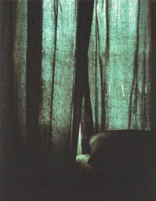
Даниэль Будинэ: Поляроид, 1979